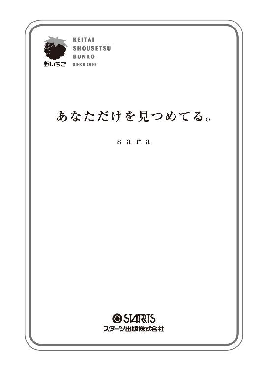

| あなただけを見つめてる。 (スターツ出版e文庫) | |
| ｓａｒａ | |
| (2016) | |

地味子として生きていた私の前に突如現れたのは、
私とは正反対の太陽みたいな人でした――。
過去のトラウマから日陰に咲く雑草の花のように、
地味子として生きている内気な女の子。
葉月葵、高２。
イケメンで明るくて、何をしても目立つ人気者。
向日朝陽、高２。
『俺は、人は自分の努力次第で、いくらでも変わることができるって思う』
キミと出会い、
生まれて初めて自分を変えたいと思った。
たったひとつの出会いが、
ちっぽけだった私の世界を変えていく。
地味子×人気者男子。
正反対な、ふたりの恋の結末は――？
contents
背中まであるロングストレートの黒髪に、目元ギリギリまである重めの前髪。
黒縁メガネをかけていて、制服の紺のブレザーに青いチェックのスカートだって着崩すことなく、もちろんスカートは膝丈。
そんな地味子として生きている私、葉月葵は、今日から高校２年生に進級する。
自宅から学校までは自転車で15分。
学校につき、いつものように校舎裏の駐輪場に自転車を止めると、前カゴからスクールバッグを取り出し肩にかけた。
それから、自転車の鍵を抜く。
「あっ」
そう思ったときには鍵は手から滑り落ち、鍵についていた小さなキーホルダーの鈴が地面でチャリンと音を立てた。
「......はぁ。よっこいしょっと」
って、私、おばさんみたいだな。
屈みながら、自然と漏れてしまった言葉にひとり苦笑していると、ふと、駐輪場の日陰でひっそりと咲いていた花に目が留まった。
「......たんぽぽだ」
きっと、鍵を落としてなければ、ここにたんぽぽが咲いていることに気づくことはなかったと思う。
でも、人目につかない日陰でも、こんなにキレイな花を咲かせることができるんだ。
......なんかちょっと感動。
だけど、同じ黄色い花でも、やっぱりひまわりと比べちゃうとたんぽぽって地味だよね。
そんなところがなんとなく自分と似ていて。
「お互い地味に平和に生きていこうね」
思わず、そんな言葉をかけていた。
駐輪場から校舎の正面玄関へと向かうと、クラス分け表が貼り出されたボードの前はたくさんの生徒たちで賑わっていた。
「キャー！ また同じクラスだね！」
「うわっ！ 最悪っ！ うちのクラス全然知らない人ばっかじゃん！」
そんな会話があちこちから聞こえてくる。
人波をなんとか押し分け、私は自分のクラスだけを確認すると教室に向かった。
......２年３組か。
私には、特別、同じクラスになりたい友達がいるわけじゃない。
だけど、この１年間を平和に過ごせるかどうかは新しいクラスのメンツにかかっているわけだから、どうかヘンな人と同じクラスじゃありませんように......。
そう願い、ドキドキしながら教室に入ると、そこにはまだ数人しか集まっていなかった。
その中に見覚えのある顔を見つけた瞬間、ホッとする。
「おはよう、希子ちゃん。望ちゃん」
私はさっそくふたりのもとへと向かい、声をかけた。
大森希子ちゃんと小橋望ちゃんは、私と同じ美術部。
「あ！ 葵ちゃんも同じクラスなんだ？ よろしくね」
私に気づいた希子ちゃんがニコッと笑ってくれる。
その横にいた望ちゃんも「よろしくね」と言って、ほほえんでくれた。
希子ちゃんは黒髪のショートカットで背が高くて、望ちゃんは肩まである黒髪をうしろでひとつに縛っていて、背が小さい。
ふたりとも美術部に所属しているだけあって絵がとてもうまくて、勉強もできるし真面目でおとなしいタイプ。
希子ちゃんと望ちゃんにはヘンに気をつかったりしないし一緒にいてラクだから、ふたりと同じクラスになれてよかったかも。
教室のうしろの隅っこで、希子ちゃんと望ちゃんと昨日のドラマの話をしていると。
廊下のほうからは、男子が集団で騒いでいる声が聞こえてくる。
うるさいな......。
何事？
思わず怪訝な顔で廊下を見つめていると、その騒がしい声はどんどん大きくなっていって。
......もしかして。
そう思ったときには、男子５人が一斉に私たちのいる教室の中へと入ってきた。
そして、たった今までざわついていたはずの教室は一瞬にして静まり返り、クラスメートたちの視線は彼ら一点に集中していた。
私も呆然とその様子をうかがっていると。
「俺、サッカー部の向日朝陽！ ３組のみんな、これから１年間よろしくねー！」
集団の中でもいちばん目立っている人物が、上機嫌な顔でみんなに向かって自己紹介した。
ずいぶんと派手な登場の仕方だな......。
それから、向日くんに続いて、すぐうしろにいた男子たち４人も、
「よろしく～！」
「楽しいクラスにしてこーぜー！」
とか言って、またハイテンションで騒ぎまくっている。
「......」
よりによって、私が最も苦手とする、目立つタイプの集団と同じクラスになるなんて......。
――最悪。
その一言につきる。
けれど、彼らと同じクラスになったことを"最悪"だと嘆いている私のすぐ横では、
「ヤバーい！ このクラスの男子のメンツが神すぎんだけどっ！」
「向日くんを筆頭に、サッカー部のイケメン勢揃いって感じだもんね！」
「これから超楽しみ～♪」
私と同じ制服を着ているとは思えないほど、それをかわいく着こなし、メイクだって髪だってキレイにしている女子のグループがそんな会話で盛り上がっていた。
――向日朝陽。
男子にまったく興味のない私でさえ１年のころから彼の名前と顔は知っていたくらいだから、彼はうちの学校ではけっこう有名な人物なんだと思う。
どんなふうに有名なのかというと。
向日くんは、サッカーの強豪校としてもイケメンが多いことでも知られているうちのサッカー部で。
その中でも群を抜いてうまいらしく、すでに１年生のときからレギュラー入りしているとか。
その上、目力があるパッチリとした大きな二重の目が印象的なアイドル顔負けの甘いルックスをしているから、女子たちが向日くんのことを放っておくはずもなく。
放課後のグラウンドは、毎日女子のギャラリーでいっぱいなんだ。
とにかく、私から見た向日くんていう人は、常にスポットライトが当てられているような人で。
たとえば私が朝見つけた日陰に咲くたんぽぽだとするなら、向日くんは太陽に向かって力強く咲く、大輪の花、ひまわり。そんなイメージ。
「やっと始業式が終わったね～！」
体育館での始業式の帰り、私は希子ちゃんと望ちゃんと教室まで歩いていた。
「相変わらず校長の話、長かったね」
「ね～。あれなんとかならないかな。私の隣の人なんて平気で寝てたよ」
他愛もない会話をしながらクラスに戻ると、うちのクラスは向日くんたちサッカー部を中心にまたガヤガヤと賑わっていた。
「今日は部活がない貴重な日だから、このあとみんなでカラオケでも行かね？」
サッカー部のひとりがそう言うと、それにいち早く乗っかったのは向日くんだった。
「おー！ いいね！ 行く行く！ なんなら、クラスの親睦も兼ねて、みんな誘っちゃう？」
......ギクッ！
向日くんという人は、なんてことを提案してくれるんだ！
「おーい！ みんなー！ 俺ら、これから駅前のカラオケ行くんだけど、予定ない人は来てよ！ みんなで盛り上がろうぜー！」
うわ～。
こういうノリ、私、本当に無理だ......。
仲間内で勝手にやってくれればいいのに。
「キャー！ 向日くんたちとカラオケだって！」
「同じクラスになれた特権ってやつ!?」
「あたしたち、行きまーす！」
朝、私の横で向日くんたちのことをキャーキャー騒いでいた目立つグループの女子たちは、カラオケの誘いに大はしゃぎだ。
人気がある向日くんたちに誘われたら、それが普通の反応なんだろうけど。
「ねぇ、葵ちゃんどうする？」
げんなりしている私の耳元で、コソッと聞いてきたのは希子ちゃんだ。
もちろん、私の答えなんて初めから決まっている。
「私、今日用事あるから......」
そんなのウソ。
用事なんて何もないけど、学校の外に出てまで学校の人たちと付き合うなんてごめんだ。
ましてや、あんなに自分とは住んでいる世界が違う人たちとなんてありえないよ。
それに。
私は、もうあのときと同じ経験なんて二度としたくないんだから......。
「あ！ 緑川！」
そのとき。
いつも向日くんの隣にいる男子が、教室のうしろのドアから入ってきた女子を呼び止めた。
たしか、彼の名前は土屋陸。
無造作にセットされたやわらかそうな焦げ茶色の髪に、いかにも人懐っこそうな丸い瞳。
そして焼けた小麦色の肌。
同じ美術部の子が、『向日くんといちばん仲がよくて、向日くんの次に人気があるのが土屋くんなんだよ』って、そんなどうでもいい情報を教えてくれたんだっけ。
「今日、クラスのみんなとカラオケ行くんだけど、よかったら緑川も来てよ」
土屋くんに呼び止められた緑川さんは、クセのないまっすぐに伸びた黒髪のロングストレートに、切れ長の大きな目をしていて、クールな印象のとても美人な子だった。
前から校内で見かけることはあったけど、いつもひとりでいるような......。
「行きたい人たちだけで勝手にどーぞ」
人懐っこい笑顔で誘う土屋くんに、いたってポーカーフェイスのままそう告げると、緑川さんは何事もなかったかのように自分の席についた。
「......」
うわ～。
緑川さんてすごいな。
私も同じことを思っていたけど、それをズバッと口にできちゃうんだもん。
尊敬のまなざしで緑川さんのことを見つめていると。
「ねぇ！ 今の見た？」
「緑川さんてちょっと美人だからって調子乗りすぎだよね」
「見ていてムカツク。そんなんだから友達できないんだよ」
緑川さんの席の近くで、わざと本人に聞こえるように陰口を叩くのは、向日くんたちにカラオケに誘われてキャーキャー喜んでいた目立つグループの女子たちだ。
......はぁ。
女子ってすぐこうなるよね。
本当、うんざり。
だから女子って嫌なんだよ。
きっと緑川さんも今の聞いていたよね。
でも、緑川さんは全然動じてないっていうか、いたってポーカーフェイスだ。
緑川さんは、強いな――。
私もあんなふうに強くなれたらいいのに......。
そしたらきっと、あのときだって......。
「いらっしゃいませ～」
私は、学校帰りに家の近くのファーストフード店に寄った。
うちの両親は共働きだから、この時間は家にお母さんはいないんだ。
それにしても、お腹すいちゃったな。
何にしようかな～。
「えっと、持ち帰りで。ハンバーガーセットひとつください。飲み物はコーラで」
店員のおばさんに注文し、準備をしてもらっている間、お店の横で待っていると。
「......あれ？ 葉月？」
突然、誰かに名前を呼ばれ、顔を上げると。
「......っ！」
そこにいたのは、うちの制服とは違う制服を着た男子高校生３人組。
そして、その中のひとりが私をまっすぐ見つめていた。
予想もしていなかった突然の再会に、顔が思いっきり引きつる。
心臓の鼓動がドクンドクンとものすごい速さで音を立て、動揺していることを隠せない。
「......葉月、だよな？」
その人は、確認するようにもう一度私の名前を呼んだ。
「......うん」
私は戸惑いながらも小さく返事をする。
まさか、こんなところで鳴海と再会するなんて......。
「何？ 快翔の知り合い？」
鳴海の隣にいた男子が、不思議そうに私たちのことを交互に見ている。
「あぁ。だから悪いけど先に行ってて」
「おー。わかった」
その人は私たちの様子を気にしながらも、もうひとりの男子とその場から離れた。
「......久しぶりだな」
「......うん、久しぶりだね」
ぎこちない会話。
だって、鳴海にこうして会うのは中学の卒業式以来だし......。それに......。
「なんか、葉月。だいぶ雰囲気変わったな」
明らかに戸惑っている鳴海。
鳴海が今の私を見て戸惑うのも無理ないよね。
だって、高校生デビューって言葉はあっても、"逆"高校生デビューなんて聞いたこともないもん。
「今、葉月は南高校行ってんだよな？」
「そうだけど......」
「南高校って、けっこう校則が厳しかったりすんの？」
「え？ 校則？」
......あぁ、私のこの姿を見て、きっと校則のせいだと思っているんだ。
「そんなことないよ」
「......じゃあ、なんかあった？」
私、鳴海に心配されている？
「何もないよ？」
私は笑顔を貼りつけた。
あのね、鳴海。
私はその"なんか"があったら困るから、こうして容姿を地味にして私なりに予防線を張っているんだよ。
なんて、そんなこと、鳴海には言えないけど......。
「そっか。ならいいんだけどさ......」
「うん」
それにしても、鳴海だって変わったよ。
もちろん、鳴海の場合はいい意味でだけど。
会わない２年の間に、身長だって伸びているし肩幅も広くなっている。
黒髪だった髪もすっかり茶髪に変わっていて。
中学のときからキレイな顔立ちをしていたけど、あのころより幼さが消えて大人びて見えた。
昔から女子に人気があった鳴海だけど、今も間違いなくモテているんだろうなぁ。
「お待たせしました～！」
テイクアウトの準備ができたみたいで、私は店員さんに声をかけられた。
商品を受け取ったし、もうこれで私がここにいる理由はなくなった。
「......じゃあ、またね」
「ちょっ、葉月っ!?」
鳴海はまだ何か言いたそうだったけれど、私は逃げるようにしてお店を出た。
だって、あのころよりもっともっとカッコよくなった鳴海の隣にいることに気が引けちゃったんだもん......。
早くその場から離れたくて、自転車のペダルをこぐスピードを上げる。
鳴海は、今の私を見てどう思ったのかな......。
やっぱ、引かれちゃったかな......。
自転車をこぎながら、そんなことばかりが頭の中をかけめぐる。
っていうか、別に鳴海にどう思われようといいじゃん。
だって、私にはもう関係ない人だもん。
それに、さっきは思わず『またね』なんて言っちゃったけど、きっとこの先、鳴海に会うことなんてもうないんだから......。
鳴海と偶然の再会を果たしたあの日から、２週間が過ぎた。
朝、登校すると、離れている場所からでもわかるほど、うちのクラスの前だけがやたら女子たちで賑わっている。何かあったのかな？
騒がしいのが苦手な私は、眉間にシワを寄せながらおそるおそる教室へと近づいていくと。
「キャー！ 今こっち見たよね!?」
「どうしようっ！ あたし、目が合ったかもっ！」
「噂では聞いてたけど、向日先輩って、ほんとにカッコいいー！」
会話からすると、どうやら彼女たちは向日くん目当ての１年生の子たちみたい。
わざわざ教室まで向日くんを見に来るなんて、向日くんて１年生からも人気があるんだ。
本当にモテるんだな～なんて感心していると。
「ちょっと、あんたたち！ うちのクラスの前で何ギャーギャー騒いでんの!?」
突然、うしろのほうから不機嫌丸出しな声が聞こえてきて振り向く......。
そこには、１年の女子たちをキツく睨みつける、クラスメートの根本マキがいた。
根本さんは、うちのクラスの中でいちばん目立つ女子グループのリーダー的存在で。
キレイに巻かれたキャラメル色の髪に、少し吊り上がった目元はアイラインとつけまつ毛を盛ることによって、より一層、人にキツイ印象を与えている気がする。
「どうせ、向日くん目当てで来たんでしょ？」
根本さんに指摘された１年生たちは、互いに顔を見合わせて動揺していた。
「けど、あんたたちがそこにいると通れなくて邪魔だし、教室まで押しかけられてギャーギャーうるさく騒がれたら、このクラスの人たちにも、向日くん自身にも迷惑がかかるってことくらいわかんないわけ!?」
始業式の日に向日くんと同じクラスになれたことを喜んでいたり、カラオケに誘われて大はしゃぎしていた根本さん。
根本さんが向日くんに好意を寄せているのは一目瞭然。
だから、根本さんは向日くん目当てのこの子たちのことが気に食わないんだ。
「す、すみませんでしたっ！」
強い口調で睨みつけられた１年生の女子たちは、逃げるようにしてその場から去っていった。
「ったく、１年のクセに向日くんに近づこうなんて生意気なんだからっ」
ひとり言のようにそうつぶやきながら、根本さんはズカズカと教室の中へと入っていった。
「......」
根本さんて、苦手だ。
いくらなんでも、あんな言い方しなくたっていいのに。
一連の流れを見ていた私は、あの子たちに同情すると同時に、根本さんとはできるだけ関わりたくないと思った。
「今日の日直は、昼休み中に職員室まで問題集を取りに来てくれ」
４限目の数学の授業の終わりに、担当の佐藤先生はそれだけ言い残すと教室から去っていった。
っていうか、今日の日直って私じゃん！
よりによってツイてなさすぎ。
「じゃあ、私ちょっと行ってくるね」
昼休みは、教室の窓側のいちばん前で希子ちゃんと望ちゃんと机をくっつけてお弁当を食べるのが日課になっているんだけど、今日は佐藤先生に呼ばれたせいで、いつもより早くご飯を済ませた。
「葵ちゃんひとりで大丈夫？ 私たちも一緒に行こうか？」
希子ちゃんが気をつかってそう言ってくれたけど。
「ううん、ひとりで平気だからふたりはゆっくりご飯食べてていいよ」
私はそう言って、ひとり職員室へと向かった。
「失礼します......」
昼休みどきの職員室は、コーヒーのいい香りが漂っていた。
「お～、葉月こっちこっち」
私に気づいた佐藤先生が手招きしている。
私はまわりにいる先生たちに会釈しながら、佐藤先生のもとへと向かった。
「せっかくの昼休みに悪いな」
そう思うなら呼びつけないでよ、と思いつつも「いえいえ」なんて言ってしまう私。
「あれ？ もうひとりの日直は一緒じゃないのか？」
「今日、お休みですけど」
「え？ そうだったっか？ じゃあ、葉月ひとりでこの量を運ぶのはキツイよなぁ」
ドーンと詰まれている問題集の山を、叩きながら笑っている佐藤先生。
「わかった。じゃあ、持てる分だけでいいからよろしく。残りは俺があとで運んでいくから」
「わかりました」
そう言われて、私は問題集の山の一部を持っていくことにした。
「......う～、重い」
問題集を両手に抱え、長い廊下を歩く。
そういえば、中学のときもこんなふうに先生にお願いされて重たい教科書を運んだことがあったな。
あのときは、それを見た鳴海が『俺が持ってく』って言ってくれたんだよね。
『女子にこんな重いもの運ばせるヤツの気がしれない』
とか言いながら。
「......」
あの日、鳴海に再会してからなんだかおかしい。
それまでは、鳴海のことをたまに思い出すことはあっても、こんなふうにずっと考えてしまうことはなかったのに。
「......はぁ」
２階にある職員室から、教室がある３階まで続く階段を上りきり、廊下に出たそのときだった。
――ドンッ！
「うわっ！」
「きゃっ！」
誰かにぶつかった衝撃で、私は持っていた問題集を廊下にまき散らしてしまった。
私がボーッと考えごとなんかして歩いていたからだ......。
「ごめんなさい！」
「ごめん！ 大丈夫!?」
それは、ほぼ同時だった。
ペコッと下げた頭を上げると、その相手とバチッと目が合った。
......えっ!! 向日くん――!?
「ほんとごめんな」
向日くんはもう一度私に謝ると、しゃがみ込み、散らばった問題集を拾いはじめた。
私も一緒に問題集を集め、廊下の隅に積み上げていく。
「はい、これで最後っと」
向日くんはそのいちばん上に最後の問題集を積み上げた。
「ありがとうございました」
「どういたしまして」
お互い、しゃがんだまま、至近距離で目が合った。
すると、向日くんはニッと人懐っこい笑顔を向けてくれた。
「......っ！」
思わずドキッとしてしまう。
だって、向日くんて目が大きくて目力もハンパないし。
それに、まつ毛だって長いし、鼻筋がスッと通っていて、改めてよく見ると本当にキレイな顔立ちをしていて、女の子からモテるのも頷けちゃう。
「っていうか、これさっき佐藤に頼まれてたやつでしょ？」
「え？ あ、そうですけど......」
へぇ、私が同じクラスだってことは認識してくれているみたい。
こんな地味な私のことなんて、向日くんの視界にはこれっぽっちも映ってないものだとばかり思っていたから、ちょっとびっくり。
「あとは俺が教室まで運んでおくから」
向日くんがそう言いながら立ち上がったので、私も慌てて立ち上がる。
そして、なぜか向かい合う私たち。
「えっ？ いいですよっ、私ひとりで持っていけますからっ」
「ダメだよ。女の子がこんな重いもん持ったら」
ふいに......あのときの鳴海の姿と、向日くんの姿が重なった。
「つーか、佐藤はそういう気づかいができないからいつまでたっても結婚できないんだっつーの」
そう言いながら向日くんは笑った。
......へぇ。向日くんて笑うと八重歯が見えるんだ。
なんかかわいいな。
って何を考えているんだ、私はっ。
「あ、そうだ。名前ってなんていうんだっけ？」
うん、そうだよね。やっぱり名前までは覚えられていないよね。
「葉月葵です」
「おー、葉月さんね！ ごめんね。俺、人の名前を覚えるの苦手でさ」
「全然気にしないでください」
向日くんて、誰にでもこうして気さくに話しかけてくれる人なんだね。
「あ！」
「......??」
突然、何か思いついたかのような表情の向日くん。
何？ どうかしたのかな？
「もしかして、葉月さんの名前の"あおい"って、"葵"って書く？」
「え......。う、うん、そうですけど......」
「じゃあさ、もし葉月さんが俺と結婚したら"ひまわり"になるね！」
「えっ!?」
私が向日くんと結婚!!!?
しかも、"ひまわり"ってなんのこと!!!?
「俺の名字の"向日"と葉月さんの名前の"葵"をくっつけると、漢字で"ひまわり"になるじゃん」
「......えっ」
たしかに、言われてみれば......。
だけど、いきなり『結婚』なんて言葉を出されたらびっくりしちゃうよ。
「なんかすごくない!?」
「......え？」
「それに気づいた俺もすごくない!?」
「......は、はぁ」
「俺、花の中ではひまわりがいちばん好きなんだよなぁ！」
子どもみたいに無邪気に笑う向日くん。
なんでかわからないけど、その笑顔を見ていると、こっちまで元気がわいてくる。
「私も好きです」
「え？」
「ひまわりは私の誕生花でもあるんで」
「マジ!? 誕生日いつなの？」
「８月５日です」
「へぇ！ 覚えとくわ」
向日くんがそう言って笑ってくれたから、私もつられて笑った。
「っていうかさ、なんで葉月さんはメガネかけてんの？」
「......え？」
いきなり話題が飛んだことにもびっくりだけど、よりによってなんでそこに触れてきたんだろう？
もしかして......。
「なんでって......、目が......悪いから......」
「え？ だってこれダテなのに？」
「えっ!?」
嫌な予感が的中して、心臓が止まるかと思うほどドキッとした。
「ちょっとそれ貸して」
「えっ!? いや、ちょっと困りますっ」
だけど、私が抵抗する間もなく、向日くんは私の顔からスッとメガネをはずすとそれを自分にかけていた。
「どう？ 似合う？」
メガネをかけて、向日くんはニコリとほほえむ。
「......っ」
メガネも似合うなんて、さすがイケメン。
って、そうじゃなくてっ！
いつから？
いつから向日くんはダテだってことに気づいていたのっ!?
っていうか、この気まずさったらないよ！
「あの......、これは......、その......」
どうしよう～～!?
何か言わなきゃと思うのに、うまい言い訳が見つからないよぉ～っ!!
私は正面に立つ向日くんの顔を見ることができず、うつむいたまま必死で言葉を探していたのだった。
葉月葵がいつもかけている、黒縁メガネ。
さっき、問題集を拾いながら葉月と至近距離で話しているとき、俺は気づいてしまった。
それは、普通のメガネではなく、ダテメガネだということを――。
「あの......、これは......、その......」
目の前の葉月は、俺の質問にかなり動揺している様子。
わざわざダテメガネなんてかけているってことは、意味があってしているんだろうけど。
きめ細かい真っ白な肌に。
大きな黒目がちのパッチリとした二重の瞳。
くるんとカールした長いまつ毛。
鼻筋が通ったシュッとした鼻。
赤みがかった小さい唇。
「わかった」
「え？」
「これは、男よけアイテムなんでしょ」
俺はかけていたダテメガネをはずし、顔の横でそれをひらひらとさせながら自信満々に言った。
だけど、意味がわからないって顔をしている葉月。
「あれ？ ハズレ？ てっきり他の男が寄りつかないように、彼氏からこれしとけって言われてんのかと思った」
彼女がこんなにかわいかったら心配すんのも無理ねぇし。
「......違います。それに、彼氏なんていないし......」
そう言うと、葉月は俺の手からダテメガネを奪うとすぐにそれをかけた。
ふーん。いないんだ。彼氏。
だとすると、ますますわかんねぇ。
男よけでしているわけじゃないとしたら、他の理由って何がある？
「......こ、これはっ。そう、ファッション！ ファッションのひとつです！」
「......ファッションねぇ」
絶対にウソだろ。
「じゃあさ、この長めの前髪もファッションのひとつなの？」
「も、もちろんっ！」
「なら、俺からアドバイス。もっとこんなふうに前髪を短くしたほうがかわいいよ」
俺は葉月の前髪に触れ、上に上げた。
その瞬間、葉月の体がビクッと動いた。
「......や、やめてくださいっ」
俺の手をパシッとはねのける葉月。
――キーンコーンカーンコーン。
「じゃ、じゃあ、私はお先に失礼しますっ！」
「ちょっ、葉月さんっ!?」
葉月はここぞとばかりに俺から逃げていった。
「......」
葉月がしていることは、どう見たってかわいい顔を隠そうとしているようにしか思えない。
だけど、なんのためにそんなことを？
その理由が気になって、知りたくて、授業がはじまってからも、気づくとつい葉月にばかり目が行ってしまう。
それにしても、昼飯を食ったあとの午後の授業はマジで眠くなるな。
おまけに、現国の授業となれば、先生が本文を読み上げる声はもはや子守唄にしか聞こえない。
「ふぁ～あ......」
あくびをしながらも、なんとか睡魔と闘っていると。
ズボンのポケットに入れていたスマホが振動した。
俺は先生に見つからないように、隠れるようにして画面を確認する。
【午後の授業だるいよぉ～】
メールの送り主は、中園桜子からだった。
【俺も超ネムイ......】
桜子は中学の同級生で。
中２のバレンタインに告白されて、付き合って２年になる俺の彼女。
【早く明日にならないかな～。朝陽に会いたいよ】
【俺も早く桜子に会いたい】
明日は珍しく部活がないから、放課後は桜子と会う約束をしていた。
【朝陽、大好きだよ♡】
２年たっても、俺のことを毎日『大好き』だと言ってくれる桜子。
【知ってる。俺も同じ気持ちだから】
高校は別々だし、平日の放課後は部活があって会える回数も減ったけど。
それでも、俺だって何年たっても桜子を大切に思う気持ちに変わりはない。
どうしよう！ どうしよう！ どうしよう～～っ!?
まさか、よりによってクラス一目立っていて人気者の向日くんにダテメガネだってことがバレちゃうなんてっ!!
まだバクバクして鳴りやまない鼓動。
授業なんてまったく頭に入ってこないよ。
向日くん、このメガネのことをサッカー部の仲間に話すつもりなのかな......。
「葉月のメガネってダテメガネだって知ってた？」
「はっ!? マジかよ？ なんでダテメガネなんかしてんの？」
「ファッションだってよ」
「ブッ!! ファッションであんなだっせぇーメガネなんかするかっての！」
「あはははははっ!!」
「キャーーやめてっ！」
私は脳内に浮かんだことをかき消そうと頭を抱え込んだ。
「なんだ、葉月。何をやめてほしいんだ？」
「......へ？」
ハッとして教壇に立つ担任を見れば、驚いた顔をしている。
「......えっと、ごめんなさい！ なんでもないですっ！」
まわりのみんなも、何事かと私のほうを見ている。
ヤバいっ、注目されちゃっているしっ。
「もしかして、夢でも見てたのか？ 昼休みあとの授業で眠くなるのもわかるけど、授業中は居眠りすんなよ～」
「あはははははっ！」
先生の発言で、教室からはどっと笑いが漏れる。
......っ！
「......ほんとに、すみませんでした」
違うんだけどなぁ。
でも、もう恥ずかしすぎてうつむくしかない。
はぁ～。本当に最悪だ......。
――キーンコーンカーンコーン。
「じゃあ、今日の授業はここまで。あ、次のホームルームでは親睦を兼ねてさっそく席替えすっからな～！」
担任の一言にクラスがざわめき出す。
まだ１学期がはじまって２週間しかたってないのに、もう席替えかぁ。
まぁ、嫌な理由もないし、私はかまわないけど。
でも、どうせならうしろのほうの席が当たればいいなぁ。
そんなことを思いながら、まわってきたクジを引いた。
「......36番、か」
って、ウソ!!
私すごーい!!
本当に希望どおり、いちばんうしろの席を引き当てちゃったよ！
しかも、窓側なんて超ラッキー！
「さっそく荷物を持って移動開始なー！」
担任のかけ声にみんなが一斉に荷物を持って移動する。
私もそそくさと窓側のいちばんうしろに移動した。
キレイな青空が広がる校庭もよく見えるし、窓からの風が気持ちいいし本当に最高。
機嫌よく外を見ていると。
「あれ、俺の隣って葉月なの？」
聞き覚えのある声に、声のしたほうへと顔を向ける。
「......っ！ えっ」
ウソでしょっ!?
もしかして、私の隣って向日くんなのっ......!?
「窓側のいちばんうしろの席とか最高だよなっ！」
そう言って、向日くんはニコッと笑った。
「......っ！」
不覚にも、その笑顔にドキッとしてしまった私。
相手がイケメンだと、無条件にドキドキしてしまうのは、私に男子の免疫がないせいなのかなぁ......。
「これから、よろしくな。葉月」
もう一度、笑顔を向けられて、私のドキドキはさらに加速してしまうのだった。
「いいなー。あの子、向日くんの隣じゃん」
「あたしも向日くんの隣の席を狙っていたんだけどなぁ。残念すぎるー」
どこからかうらやむ声が聞こえてきて、ハッとした。
そうだよね......。
女子から人気がある向日くんの隣の席なんて引き当てちゃったら、ねたまれる要因にしかならないんだ。
目立たず、平和な日常を送ることを望んでいる私にとって、向日くんの隣の席だということはマイナスにしかならない。
それに、向日くんには私のメガネがダテメガネだってこともバレているのに隣同士なんて、なんか気まずいよ......。
「葉月？ どうかした？」
うつむき加減な私に、向日くんが顔を覗き込んできた。
......わっ！
顔っ！
顔、近いっ!!
目力のある大きな瞳に見つめられて、私の心臓は飛び上がりそうだった。
――そのとき。
私の前の席のイスがガタンと音を立てて。
そちらに目を向ければ、キレイな黒髪のロングストレートが目に入ってきた。
あれ？
この子って、たしか......。
「緑川、そこの席なんだ？ よろしくな」
私がその子の名前を思い出す前に、隣の席の向日くんが緑川さんに声をかけていた。
緑川さんは、一瞬だけ向日くんのほうをチラッと見ると。
「あー、よろしく」
聞き取るのが難しいくらい小さな声で一言そう言うと、またすぐに何事もなかったみたいに前を向いてしまった。
「......」
緑川さんて、あからさまに誰とも必要以上に関わろうとしてないよね。
人と関わるのが面倒くさいから？
それとも......。
もしかしたら緑川さんも過去に何かあったとか......？
なんだか緑川さんのことは他人事とは思えなくて、すごく気になるよ。
ホームルームのあと。
帰り支度を済ませ、部活に行く準備をした土屋くんが向日くんのところまでやってくると。
「朝陽の席はいいなぁ～。俺なんて教壇の真ん前だぜ？ マジついてねぇ～!!」
土屋くんは自分のクジ運のなさを嘆いていた。
たしかに、教壇の真ん前を引き当てちゃったなら嘆きたくもなるよね。
「ははっ。居眠り常習犯のおまえにはちょうどいいんじゃね？ これを機にちょっとは真面目に授業受けろよ」
向日くんは、笑い混じりに土屋くんの話を受け流している。
「朝陽～。俺ら親友だろぉ。そんな冷たいこと言わないで俺と席変わってくれよー。ほら、この席なら緑川とも近いし！ なっ？」
土屋くんは冗談ぽく言いながらも、すでに帰ってしまっていない緑川さんの席を見つめていた。
え？
緑川さんと席が近いことが何か関係あるの？
土屋くんの言葉の意味が理解できず、考えていると。
......あ！
もしかして、土屋くんて、緑川さんのことが好き......とか？
新学期初日も、緑川さんをカラオケに誘ってたし。
「な～にが『なっ？』だよ。バカなことばっか言ってねぇで、さっさと部活行くぞ！」
いつの間にか帰り支度を終えた向日くんは、まだ何かブツブツと言っている土屋くんを無視してイスから立ち上がると。
「葉月、また明日な！」
......ドキッ！
「う、うんっ」
あ～、びっくりした！
向日くんがわざわざ私に挨拶してくれるなんて思ってなかったから、ちょっと動揺しちゃったよ。
それにしても、向日くんと土屋くんて本当に仲がよくていいな。
え？
いいな......？
無意識のうちに、自分がふたりの関係をうらやましく思っていたことにハッとする。
うらやましいなんて、ありえないよ。
私は知っているから。
心から信用していた人に裏切られたときの、あの絶望感を――。
今日は部活がない、日曜日。
桜子と原宿駅で13時に待ち合わせしている。
電車を乗り継ぎ、待ち合わせ時間の５分前についた俺は、人波をかき分けながらなんとか改札を出た。
さすが、週末となると人でごった返してるな。
すると、ズボンのポケットに入れていたスマホが震えた。
【朝陽～！ 電車に乗り遅れちゃって30分くらい遅れそうなの！ 先にどこかへ入ってて！ 本当にごめんね！】
【了解。俺のことは気にしなくていいから、気をつけて来いよ】
桜子が来るまで、駅近くのコーヒーショップにでも入って待っているか。
そう思いコーヒーショップに来てみたけれど、ここも混雑していて注文待ちの長い列ができている。
仕方なく、俺は最後尾につく。
やっと注文を終え、店の奥の角の席をなんとか確保することができた。
これだけでも、ひと苦労だな。
苦笑しながらアイスカフェラテを喉に流し込み、スマホのゲームをして時間を潰していると。
「朝陽、おまたせ～！」
緩いパーマがかかった、背中まであるミルクティー色のふわふわの髪。
透き通るように白い肌。
つけまつ毛なんかしなくても十分に長く濃いまつ毛に、ヘーゼル色のキレイな瞳。
小顔で、目鼻立ちがハッキリとしていて、モデルのように手足も長い桜子が現れた途端、まわりにいるヤツらが息をのむ様子が伝わってくるようだった。
「桜子も喉乾いただろ？ いつものやつでいい？」
「うん！ 朝陽、ありがと！」
ニコッと笑い、俺が座っていた向いの席に座る桜子。
俺は席を立つと、さっきよりはマシになった注文待ちの列に再び並んだ。
「はい、アイスコーヒー」
「ありがと！ いただきま～すっ！」
桜子は俺からそれを受け取ると、ミルクとガムシロップを入れてストローでかき混ぜ、苺色の小さい唇に運んだ。
「ところで、新しいクラスはどう？」
作りモノみたいに整った顔を俺に向けて、首を傾げている桜子。
「まぁ、それなりに楽しんでるよ」
「あたしと違って、朝陽はすぐその場に溶け込めちゃうからほんとうらやましいよ。おまけに、陸くんもまた同じクラスになれたんでしょ？ あたしは若葉ちゃんとクラスが別れちゃったから、また一から人間関係を築かなきゃいけなくて大変」
"若葉ちゃん"っていうのは、桜子が学校でいちばん仲のいい友達のことだ。
１年のときに同じクラスで、席が前後同士だったのがキッカケで仲よくなったらしい。
「桜子は、人見知りだもんな」
「うん。慣れるまで自分から話しかけられないから、その間に他の子は仲よしグループ作っちゃって、完全にあたし出遅れちゃってる感じがする......」
桜子は茶色い眉を下げ、表情を曇らせた。
「焦る必要なんかねぇよ。桜子のペースで、少しずつ知ってもらえばいいじゃん。そしたら、絶対に桜子のことわかってくれるヤツはいるから」
「......うん！ そうだよねっ！ 朝陽にそう言ってもらえたら、なんか元気出てきた！」
「それならよかった」
「でも、やっぱり朝陽と同じ高校に行きたかったなぁ......」
桜子は俺と同じ高校を志望していたけど、親に反対されて、この辺ではお嬢様学校ってことで有名なＳ女子学園に通っている。
「同じ制服着てデートしたかったし、それに、朝陽、モテるから心配だよ......」
頬杖をつきながら、空いているほうの手でアイスコーヒーのストローをくるくるまわしながら、不安気な瞳を向けてくる。
「よそ見しちゃ嫌だよ？」
「桜子はほんと心配症だな。大丈夫だよ。俺、桜子が思ってるほどモテねぇし。それに」
「それに??」
「俺にはこ～んなかわいい彼女がいんのに、他の子なんか目に入るわけないだろ？」
そう言って、桜子のミルクティー色のやわらかい髪をやさしくなでた。
「ほんとに？」
「うん、ほんとに」
「ふふっ！ よかった！」
やっと笑ってくれた。
「そうだ、朝陽！ せっかく今日は原宿まで来たんだからクレープ食べに行こうよ！」
切り替え早っ！
だけど、元気な桜子がいちばんだよな。
「おう！ じゃあ、行くか！」
「うんっ！」
俺たちはコーヒーショップをあとにし、桜子の手を握って指と指を絡める。
力を入れたら、折れちゃいそうなくらい細い指。
桜子と歩いていると、すれ違うヤツらが何人も振り返ってきた。
「ヤッバ！ 超イケメン！」
「一緒にいる女の子もモデルみたい！」
「いいなー、美男美女カップル！」
そんな会話がどこからともなく聞こえてきていた。
「あっ！ このお店、前に雑誌で紹介されて気になってたんだよね！」
歩いていると、桜子がクレープ屋を指差す。
「じゃあ、この店にしてみるか」
「うん！ 朝陽は何にする？ あたし、苺カスタードホイップ！」
「うーん。じゃ、俺はチョコバナナプリン。半分こして食おうぜ」
俺たちは注文を終え、店の外に設置された席で作りたてのクレープを頬張っていた。
「おいしい～っ！ 朝陽も食べてみてっ！ あ～ん！」
桜子は、自分の食べかけのクレープを俺の口元に運んできた。
「あーん」と大きく口を開け、勢いよくかぶりつく。
「うん、桜子のもおいしいな！」
「ふふっ、朝陽ってば、ここにクリームついてるよぉ」
「え？ どこ？」
すると、桜子は指で俺の口端についたクリームをすくい取った。
「はい、取れたよ」
「サンキュ」
ニコッと笑った桜子がかわいくて、俺もつられて笑うと。
「あのー、すみません。今、少しだけお時間よろしいですか？」
クレープを食べていた俺たちに、首からカメラを下げ、メガネをかけた20代後半くらいの女性が声をかけてきた。
「私、この雑誌の編集をしているものなのですが」
そう言って目の前に差し出されたのは、【berrys】と書かれた雑誌だった。
「あ、この雑誌！ あたし、毎月読んでます！」
少し興奮気味に答えたのは桜子だ。
「ほんとですか？ うれしいです。ありがとうございます。それでですね、この雑誌の企画の、カップルのストリートスナップページに、ぜひ、おふたりを掲載させて頂けたらと思うのですが、引き受けてもらえませんか？」
「はっ？」
ストリートスナップに、俺と桜子が？
「遠目からでも目を引くほど美男美女で、おふたりを見かけた瞬間、どうしてもと思いまして」
......そんなこと、いきなり言われてもな。
てか、なんかこういうのって怪しくね？
悪徳業者の勧誘とかじゃないだろうな？
俺が疑わしい目で見ていると、向こうが慌てたように名刺を差し出してきた。
名刺を見る限り、本当にこの雑誌の編集者みたいだけど。
「写真は数枚で撮り終わりますし、あとは簡単なアンケートに答えて頂けたらすぐ終わりますので、お願いできませんか？」
この人も粘るな。
こんだけ人があふれた場所なんだから、何も俺たちにこだわる必要ないのに。
「朝陽、どうする？」
「......うーん」
「あたしは、朝陽となら出てもいいよ？」
え、何？
もしかして桜子は乗り気なの？
「おふたりのいい記念にもなると思いますし、ぜひ！」
にこり、と笑う女性編集者。
「......んー。じゃあ、撮ってもらう？」
「うん！」
笑顔で即答する桜子に苦笑い。
「わ～ぁ！ よかったです！」
スナップを撮ってもらうことになった俺たちは、初めに説明されたとおり数枚写真を撮ってもらったあと、アンケートの記入を終えてようやく解放された。
「おふたりは本当お似合いのカップルですね！ 掲載は再来月号になります。今日はご協力いただき、ありがとうございました」
そう言い残して、女性編集者は満足げに去っていった。
「あたしたちが掲載される雑誌、発売が楽しみだねっ♪」
「そうだな」
桜子はうれしそうに俺の腕に手を絡めた。
――数日後、休み明けのホームルームの時間。
「今から、ゴールデンウィーク明けにある体育祭の個人種目を決めるぞ～」
げげげっ。
ついに、この日が来ちゃいましたか......。
張りきる担任をよそに、私のテンションは下がる一方だ。
なぜなら、私はかなりの運動音痴なのだ。
ハードルを飛べば、それにつまずいて派手に転んだこともあるし。
50メートル走なんて10秒台っていう、ノロマ具合。
だから、私にとって体育祭は１年の中でいちばん憂鬱で苦痛でしかない最悪なイベント。
「......はぁ」
思わず、青空を見つめながらため息。
「じゃあ、ここからは体育祭実行委員に進行を任せるから。ってことで向日、あとはよろしくな」
「はーいっ」
今日も明るい向日くんが手を挙げると、席を立ち、教壇に立つ。
あ、そっか。向日くんてうちのクラスの体育祭実行委員なんだっけ。
向日くんは、個人種目を黒板に書き出していく。
向日くんの書く、堂々とした大きい文字。
決して、うまいとは言えない男の子らしい字だけど、それはまるで向日くんの性格を表しているみたいだった。
「出たい種目がもう決まってる人は、種目の横に名前書きに来て～。人数枠より希望者が多かったら、その中でじゃんけんってことでよろしく」
ノリよく上手に進行していく向日くん。
声も大きいし、キラキラした笑顔はやっぱり太陽みたいに明るい。
私とは、本当に別世界の人みたいだよ......。
っていうか、みんなぞくぞくと黒板に名前を書きに行っているけど、どうしよう。
私、全然決めてないやっ。
私でもなんとかなりそうな種目ってなんだろう？
砲丸投げ？
でも、腕力ないしなぁ......。
持久走？
いやいや、体力全然ないのに無理に決まっているっ。
借り人競争？
うん！ それなら、去年もやったし、今年もなんとかなるかもっ!?
あーあ、こういうとき、運動神経がよかったらな～って本当に思うよ。
向日くんみたいに俊足で運動神経も抜群な人にとったら、体育祭は、自分の力を発揮できる最高のステージって感じなんだろうな。
それから体育の授業は、体育祭に向けての練習ばっかり。
「今日は、２年生の全クラスでリレーの練習をするからなー！ おまえら、１位目指して頑張れよー！」
ホームルームで担任からそう告げられてしまった瞬間、私のテンションは一気にダダ下がりだ。
足が遅すぎる私にとって、もはやそれは拷問レベル......。
絶対、クラスの足を引っ張っちゃうに決まっているもん。
本当、憂鬱すぎるよぉ......。
「はぁ......」
なんか私、最近、ため息ばっかりついているかも。
「どした？ 元気ねーじゃん」
そんな私に気づいてくれたのは、隣の席の向日くんだ。
「私、足が遅いからクラスのみんなに迷惑かけちゃうかも......。ごめんね」
「なんだ、葉月はそんなこと気にしてんの？」
「え？」
そんなこと......？
たしかに、クラス一、もしかすると学年一俊足の向日くんからしたら、私の足が遅い悩みなんて"そんなこと"って言っちゃうほど、くだらないことなのかもしれない。
でも、私にとっては、リレーで走ることがものすごくプレッシャーなんだよ......。
「嫌なことをヤダなーって思いながらやると余計に嫌になったりしない？」
「......」
たしかに、それは言えているかも。
「俺はさ、どんなことでも、どんなときでも、その場を楽しんだもの勝ちだと思うんだよね」
......楽しんだもの勝ち？
「だから、そんなこと気にしないで楽しくいこうぜ！ なっ？」
そう言って、ポンッと私の肩を軽く叩いてニコッと笑ってくれた向日くん。
「......」
なんでだろう。
向日くんにそう言ってもらったら、それまでの憂鬱で重たい気持ちが少しだけ軽くなったような気がする――。
「葵ちゃん、リレーってなんかドキドキするよね」
私の席まで来て、緊張の面持ちで話しかけてきてくれたのは、すでに体操着に着替え終わった希子ちゃんだった。
「ほんと、超緊張しちゃってヤバいよぉ～っ」
今日の練習でのリレーの走行順は、あらかじめ50メートル走のタイムを計っていたデータをもとに、向日くんが決めてくれているみたいだけど。
私の前走者は、目立つ女子グループのリーダー的存在でもある根本さんだってことがさっき判明して、なおさらプレッシャーを感じてドキドキがハンパない。
せめて、根本さんがつないでくれた順位のまま走りきれたらって思うんだけど、どうなることやら......。
それからすぐに、着替えを終えた望ちゃんも私の席に来てくれて、私たちはグラウンドへと移動したのだった。
「位置について......よーい」
――ピーッ！
体育の先生が鳴らした笛を合図に、各クラスの第１走者が一斉に走り出す。
私の走行順はちょうど真ん中くらい。
次々にバトンをつないでいくクラスメートたちをひたすら見守り続け、もうすぐ私の前走者の根本さんが走り出す。
根本さんは、あっという間に前を走っていた女子を抜かし、５クラス中、２位の順位で私がいる場所へ向かって走ってくる。
私は円周の内側から２番目に立ってバトンを待った。
そして。
「はいっ！」
根本さんからつながれた黄色いバトンを受け取り、私は走り出す。
『その場を楽しんだもの勝ち』
さっき、向日くんにかけてもらった言葉が、何度も何度も頭の中をかけめぐっていた。
「頑張れー！ 葉月ーーー!!」
気のせいかもしれないけど、向日くんの声が聞こえたような気がした、そのときだった。
「......っ!!」
私は、何かにつまずいた。
ヤバいっ、転ぶっ!!
そう思った次の瞬間には、私は地面に倒れていて。
背後からは、私のうしろを走っていた他のクラスの人たちがどんどん走り抜けていく。
どうしよう......。
せっかく根本さんが２位でバトンをつなげてくれたのに、このままじゃ私のせいでビリになっちゃう。
早く立ち上がって走らなきゃ！
そう思って立ち上がろうとしたけど。
「......っ、いった～ぁ......」
転び方が下手だったみたいで、膝や肘、あちこちがジンジンと痛む。
見れば、膝からは血が流れていた。
「葉月っ！ 大丈夫か!?」
そう言って、いちばんに私のもとへかけてきてくれたのは。
「......むかい、くん」
心配そうな向日くんの顔を見た瞬間、なぜか涙が出そうになった。
「うわ、すげー血。葉月、立てる？」
私の体を支えながら立ち上がらせてくれた向日くん。
「......ごめんなさい」
みじめだった。
私は、普通に走ることすらできなかったなんて......。
「葉月。そこは、"ごめんなさい"じゃなくて、"ありがとう"だろ？」
そう言って向日くんはニッと笑う。
「先生ー！ 俺、葉月を保健室まで連れてきます！」
体育の先生にそう告げる向日くん。
「えっ!? 私ならひとりで保健室に行けるから大丈夫だよ？」
私のせいで、向日くんにまで迷惑かけるわけにはいかないよ！
「何を言ってんだよ。こんなケガしてんのに」
「ほんとに大丈夫だから」
もうこれ以上、向日くんに迷惑かけたくない。
「葉月って見た目によらず、けっこー頑固なんだ？」
「だって......」
「じゃあ、仕方ない。こうするしかないか」
「え？ ......きゃあっ！」
ふわっと一瞬宙に浮いた体。
ウソでしょっ!?
これってっ......
お姫様抱っこ!!!?
「キャーーッ!!!!！」
その途端、まわりにいた女子たちから悲鳴に似た声が上がる。
ひゃー、みんな見ているっ!!
私たち今、かなりの注目の的だよっ!!
「む、向日くんっ！ 下ろしてっ!!」
女子から人気の向日くんにこんなことされたら、目立つとか注目を浴びるとかそんなことよりもまず先に、女子の反感を買ってしまいそうで怖かった。
だけど、向日くんは全然私の話を聞いてくれない。
「ねぇっ！ お願いっ！ 私、重いしっ！」
「こんくらい全然余裕。あと葉月ふたり分はいけるな」
いやいやいやいやっ、そういう問題じゃなくてっ!!
「みんな見てるっ！」
もう恥ずかしいのと、女子の視線が痛すぎるのでうつむくしかない。
「いいじゃん、見たいヤツには見せとけば」
そう言って、ニッと笑う向日くんと至近距離で目が合って、思わずドクンと心臓が反応する。
っていうか、もう何を言っても向日くんは私のことを下ろしてくれなさそうだ......。
私のことを『頑固』だって言ってたけど、向日くんだって負けてない。
「あれ？ 保健室の先生いないみたいだな」
結局、上履きに履き替えるときまで向日くんは私を下ろしてはくれなくて......。
そのまま、向日くんにつき添われて保健室にやってきたのだけれど......。
電気も消えているし、保健室のカーテンの向こうのベッドも全部開いていて、そこには誰もいなかった。
「まぁ、いいや。俺、サッカーでよくケガしたりするから、保健室のことはけっこー詳しいんだよね～」
そう言って、私を黒い丸イスに座らせる向日くん。
「......でも、先生がいないのに、勝手に使っちゃってもいいのかな」
「平気平気っ。俺、ニッシーとはけっこう仲よしだし♪」
「え？ ニッシー??」
「あー、保健室の西川先生のこと」
「へ、へぇ......」
先生のことをニッシーなんて呼んでいるくらいだから、本当に仲がいいんだろうな。
「向日くんて、すごいよね」
「え？ 何が？」
いつも元気で、明るくて。
人懐っこくて、気さくで。
「誰とでもすぐに仲よくなれちゃうから」
「そうか？」
そう言って笑うと、向日くんはピンセットで丸まった綿をつまみ、それに消毒液をつけた。
「葉月。ここに足乗せて」
私は言われるがまま、丸イスの近くにあった足置き台に左足を乗せた。
向日くんは、こんなふうにケガして困っている人がいたらすぐに手を差し伸べてくれたり。
クラスで孤立している人がいれば、率先して声をかけてあげたり。
いつも、誰にでも分け隔てなく接してくれているような人――。
だから、ケガしたのが私じゃなくて他の誰かだったとしても。
向日くんはその人にも同じことをしたはずで。
「ちょっとしみるかもしんないけど、我慢してな」
私が、"特別"だからじゃない。
「......っ！」
私は眉間にシワを寄せ、顔を歪ませる。
「ごめん！ しみるよな」
「っ......」
なんで？
なんでケガした傷口より、胸のほうが痛むの......？
「はいっ、これで全部の傷口の消毒完了っと！」
「......ありがとう」
「どういたしましてっ。けっこうしみたでしょ？ 大丈夫だった？」
「うん、大丈夫」
「我慢強いんだな、葉月は。一言も痛いって言わなかったもんな。えらいえらい！」
そう言いながら、向日くんはまるで小さい子どもにするみたいに、私の頭をポンポンッて優しくなでた。
「......っ」
思わず恥ずかしくて顔が熱くなっちゃう私。
うつむくと、今、向日くんに手当てをしてもらった膝が視界に入る。
「......ごめんね。私のせいでクラスのみんなに迷惑かけちゃった......」
次の人にバトンを渡すことができないまま保健室に来ちゃったけど、あのあとうちのクラスはどうなったんだろう......。
「気にすんなって。リレー中に転ぶなんてことは葉月に限らずよくあることなんだしさ」
「......でも。今日は練習だったけど、もし本番でもまた転んだりしたら、私......」
そんなことを考えると不安になって、膝の上で両手の拳をギュッと握りしめた。
「心配すんな。本番では俺が葉月の次に走るから」
「......え？ でも、向日くんはアンカーなんじゃないの？」
「うちのクラスは他のクラスより人数がひとり少ないから、俺だけ２回走ることになってるんだよ」
「そうなの？」
「うん。だから、葉月は余計なこと気にしないでいいから楽しんで走れよ。な？」
またポンポンッて私の頭をなでながら、ニッて笑ってくれる向日くん。
「......うん。ありがとう」
向日くんていう人は、たとえば雨雲が覆う灰色の空でも、一瞬にして青空に変えてしまう力を持っているような人で。
いつだって、ネガティブをポジティブに変換してくれるね――。
「葵ちゃーん、ケガは大丈夫だった!?」
私が教室に戻ると、心配そうな表情をした希子ちゃんと望ちゃんがすぐに駆け寄ってきてくれた。
男子は別室で着替えているから、今この教室にいるのは女子だけだ。
「うん、大丈夫だよ。ごめんね、私、ほんとドジだから」
そう言って、アハハと笑い飛ばす私。
「ほんとに大丈夫？ でも、転んだ葵ちゃんをお姫様抱っこして連れ去る向日くんが、少女マンガに出てくる王子様みたいでちょっとカッコよかったな～」
「えっ!?」
そう言って、うっとりした表情の希子ちゃん。
希子ちゃんは少女マンガが好きで、まだ読ませてもらったことはないけど自作のマンガも描いているみたいなんだ。
「さっきのシーン、私のマンガに使わせてもらっちゃおうかな」
なんて、希子ちゃんは何やらさっそく妄想を膨らませている様子。
私だって、お姫様抱っこなんてマンガや小説の中だけでしかありえないって思っていたよ。
なのに、まさか自分が向日くんにされるなんてっ......。
思い出しただけで恥ずかしくなってくるよ。
そういえば、あのとき、向日くんからすごくいい匂いがしたな......。
なんの香水を使っているんだろう？
「......っ！」
って、私ってば何を考えているんだろ！
なんか急に心臓がドキドキして、熱くなってきちゃったよっ。
ひとり勝手に熱くなった顔を手でパタパタとあおいでいると。
「葉月さん、ちょっといい？」
そう言いながら私の前に現れたのは、根本さんと、根本さんの取り巻きの女子がふたり。
存在そのものに威圧感があって、私は思わず生唾を飲み込む。
私のすぐ隣にいた希子ちゃんと望ちゃんも、根本さんたちの登場に動揺しているみたい。
っていうか、こうして根本さんに話しかけられるのって初めてかも。
思い当たるのはさっきのリレーのこと。
やっぱり怒っているよね......？
「あの、さっきはごめんなさい......」
まだ根本さんに何を言われたわけでもないけど、私は自分から謝った。
「せっかく根本さんが２位でバトンつなげてくれたのに......」
根本さんがどんな顔をしているのか見るのが怖くて、私はうつむきながら話す。
「そんなことはどうでもいいの」
「......え？」
おそるおそる顔を上げると。
目のふちをアイラインで囲い、つけまつ毛で盛られた鋭い瞳がまっすぐに私を見据えていた。
リレーのこと、怒ってないのかな？
「それより、傷は？」
「傷？」
「どこケガしたの？」
根本さんの真意が読めなくて戸惑う私。
......でも、もしかしたら私の傷を心配してくれている？
「......傷なら大したことないから、大丈夫」
そう答えると。
「なら、どうしてひとりで保健室に行かなかったの？」
「......っ！」
そっか......。やっぱりそういうことだったんだ。
根本さんは、私の傷を心配してくれているわけじゃなくて、私が向日くんにお姫様抱っこしてもらったことをよく思っていないんだよね？
やっと根本さんが私に声をかけてきた真意がつかめて、私は心の中で盛大なため息をついた。
「私は保健室までひとりで行けるって言ったんだけど......」
「どう？ みんなが見てる前で向日くんにお姫様抱っこしてもらえた気分は」
ふっ、と片方の口角を持ち上げて、皮肉たっぷりなセリフを吐く根本さん。
私は何も言い返す言葉が見つからなかった。
やっぱり、あのとき私が全力でお姫様抱っこを拒否しておけばよかったんだ。
そしたら、根本さんからもこんなこと言われずに済んだのに......。
「でも、いくらまたお姫様抱っこしてもらいたいからって、本番ではわざと転んだりしないでよね？」
「......っ」
わざとって！
そんなことするはずないじゃん！
そうハッキリと言い返せない自分が悔しくて、ギュッと下唇を強く噛んだ。
でも、そのとき。
「ちょっと待って」
......っ!?
私の前から立ち去ろうとする根本さんたちを呼び止めたのは、私の前の席にいた緑川さんだった。
緑川さんから声をかけられた根本さんたちは、少し驚いた顔をしている。
無理もない。こんなふうに緑川さんから誰かに声をかけるところなんて見たことないもん。
「何？」
少し戸惑いながらも、怪訝そうに緑川さんを見る根本さん。
「同じことしてほしさにわざと転ぼうと思ってるのは、あんたたちのほうなんじゃないの？」
......っ！
ちょっ！ 緑川さん!?
まさか、緑川さんがそんなことを言うとは思ってもみなくて、私はただ驚くばかりだった。
「はぁ!?」
緑川さんのその一言に、根本さんの表情がより一層険しくなっていくのがわかった。
「だって、わざわざそんな嫌味を言いたくなるほど、葉月さんのことがうらやましかったってことでしょ？」
「......っ！ 別にあたしはっ」
目を泳がせ、明らかに動揺している様子の根本さん。
その顔は真っ赤に染まっていた。
「なんなの、バカバカしいっ！ 行こっ！」
緑川さんと私のことを交互に睨みつけると、根本さんは取り巻きを引き連れて教室から出ていってしまった。
今の一件で、すっかり静まり返ってしまった教室。
緑川さんは何事もなかったかのように自分の席に座ると、次の授業の準備をはじめた。
「......」
まだ、今、起きたことすべてに驚きすぎて、頭の中が混乱しているけど。
緑川さんは、私のことをかばってくれたんだよね......？
「あの、緑川さん......」
声をかけると、緑川さんはうしろを振り返り、凛とした瞳で私を見据えている。
「さっきはありがとう」
私はそう言ってペコッと頭を下げる。
けれど、緑川さんは表情を崩すこともなく。
「別に」
一言だけそう告げると、また前を向いてしまった。
だけど、私は緑川さんの背中に向かって言葉を続ける。
「緑川さんが私のために言い返してくれて、ほんとにうれしかった」
私は根本さんたちが怖くて、言い返したくても何も言えなかったから。
そんな弱い自分が情けないよ......。
すると、私に背中を向けたままの緑川さんが口を開いた。
「別に、葉月さんのためじゃないから」
「......でも」
「だから、お礼なんていらない」
「......」
緑川さんは、これ以上は話しかけるなオーラを出していて、私もそれ以上は何も言うことができなかった。
女子って本当に難しい。
だから、深入りした付き合いなんてしたくない。
そう思うのに、どうしてかな......。
緑川さんのことは、やっぱり気になって。
もっと知りたいって思うんだよね......。
今日の授業も残すところあとは音楽だけかぁ。
私は音楽室へ移動するために、希子ちゃんと望ちゃんと話しながら廊下を歩いていると......。
――ドンッ！
えっ!? 何っ!?
いちばん端を歩いていた私に、誰かが横から思いっきりぶつかってきて体がよろめいた。
「そこ、邪魔！」
そして、強い口調でそう言いながらギロリと横目で睨みつけてきたのは、根本さんだった。
「あんたって、普通に歩くのもトロイんだから」
「......」
また嫌味を吐かれちゃった。
今日のことをよっぽど根に持たれちゃっているみたい。
「......葵ちゃん、大丈夫？」
私のすぐ隣を歩いていた望ちゃんが、根本さんたちが先を歩いていったのを見計らって声をかけてくれた。
「うん、大丈夫だよっ」
へへっ、と作り笑顔を貼りつけて平気なフリをする私。
でも、これ以上、根本さんから睨まれるのはごめんだ。
そのためには、向日くんには関わらないようにしないと......。
その日の帰り道。
「......いてててて」
自転車のペダルをこぐたびに傷口に痛みが走り、思わず声がもれる。
そのせいで、なかなかスピードも出せない始末。
帰りにドラッグストアに寄って、消毒液や、お風呂のときにしみないように防水タイプの絆創膏も買って帰らなきゃなぁ。
なんとか家から近いドラッグストアにたどりつき、目当ての商品がある場所を探しながら店内を歩いていたときだった。
「......葉月？」
「え？」
突然、名前を呼ばれ、振り向くと。
「......!! な、鳴海っ!?」
そこには、制服姿の鳴海が立っていた。
短期間のうちにまたこうして鳴海に再会するなんてっ。
「偶然だな」
「う、うん。ほんと、すごい偶然......」
こんな偶然もあるんだと、きっと鳴海も私と同じくらいびっくりしているはず。
「それ......どしたの？」
鳴海は私の膝を痛々しそうに見ていた。
「......あ、これ？ 今日、体育祭のリレーの練習のときに転んじゃって。私、ほんとに運動神経ないから困っちゃうよ」
鳴海に転んだことを知られてしまったのが恥ずかしくて、あはは、と自嘲気味に話すと。
「痛かっただろ。大丈夫か？」
鳴海が心配そうに私を見つめながら優しい言葉をかけてくれるものだから。
思わずキュッと胸が締めつけられてしまった。
そんな気持ちを隠すように、
「全然平気だよっ。昔から転び慣れてるからこれくらい大したことないよ」
そう言って笑ってみせた。
そのとき、ふと視界に入った鳴海の左手。
「鳴海こそ、その手、どうしたの!?」
鳴海の左手の中指には、包帯のようなものが巻かれていた。
鳴海は、私に指摘されるとバツが悪そうに苦笑いして、
「大ケガに見えるだろ？ でも、突き指しただけだから」
と言ってまた笑った。
「突き指？」
「うん。俺さ、高校でもバスケ続けてんだけど、今日の部活中にうっかり、ね」
「そうなんだ......」
鳴海は中学のときバスケ部だったけど、高校でもバスケ続けているんだ。
鳴海、ほんとバスケが好きだったもんね。
ドリブルしながら攻めていく姿も、キレイな弧を描きながら決めるシュートも、本当に本当にカッコよかったなぁ。
そんな鳴海が、私は好きだった。大好きだったんだ......。
もし、あんなことがなかったら。
そしたら、私たちは今でも一緒にいることができたのかな......？
「そういえばさ、葉月、連絡先が変わったよな？」
「え？」
「この前、ファーストフード店で会ったあと、葉月に連絡しようとしたんだけどメール送れなかったからさ」
そういえば、迷惑メールがひどくて、高校に進学するのを機にアドレスを変えていたんだった。
「ごめんね、そうなの......」
っていうか、鳴海。
あのあと、私にメールを送ってくれようとしていたんだ？
「よかったら、新しいアドレス教えてよ」
......！
「う、うん」
別に教えたくない理由もないし。
鳴海と連絡先を交換したあと、鳴海とはそこで別れた。
目的のものを買ってお店の外に出たときには、あたりはすっかり日が暮れてしまっていた。
急いで帰らなくちゃ。
駐輪場まで足早に向かうと。
見覚えのある姿を見つけて心臓がはねた。
「鳴海、まだ帰ってなかったの？」
10分くらい前にお店から出ていく鳴海の姿を見かけただけに、まだここに鳴海がいたことに余計にびっくりした。
「もう暗いし、送ってくよ」
「え？」
もしかして、そのためにここで私のことを待っていてくれたの？
鳴海の優しさに、トクン、と胸が高鳴った。
でも......。
「大丈夫だよ、ここからうちまですぐだし」
「近くとか遠いとかの問題じゃないから」
「......」
「葉月んちの近く街灯少ないし、夜道に女の子ひとりで帰るなんて危ないだろ？」
......女の子。
たしかに、女子力はなくしても私が女であることに変わりはないのだけれど。
鳴海は、そんな女子力ゼロになってしまった今の私のことも、ちゃんと女の子扱いしてくれるんだね。
「ありがとう」
「俺んちも同じ方向なんだし気にしなくていいから」
お言葉に甘えて、家まで送り届けてもらうことにした。
それにしても、もう鳴海と会うことはないと思っていたのに、こうしてまた再会するなんて世間は本当狭いなぁ。
この前のファーストフード店で会ったときは気まずくてまともに会話することができなかったけど。
今日は、あのころみたいに普通に鳴海と話すことができて、なんだかすごくうれしかった。
「家、ここだったよな。ケガ、お大事に」
「うん、ありがとう。鳴海もお大事にね。それじゃ、気をつけて帰ってね」
家の前まで送り届けてもらい、「じゃあね」と私が言うと。
「あっ、ちょっと待って」
「......？」
別れ際、鳴海に呼び止められた。
「......あのさ、その......」
なぜだかわからないけど、そわそわしている鳴海。
どうしたんだろう？
「また今度、会えないかな？」
「......え？」
「今日、葉月と久しぶりに話せて楽しかったし、今度はもっとゆっくり話したいから」
「......っ」
突然、そんなことを言われたら、なんて返事していいのかわからないよ。
そんな私を気づかうように。
「また連絡するから、考えといてよ」
そう言って笑うと、
「じゃあ、またなっ！」
私に手を振り、気づけば、鳴海の姿は暗闇に溶け込んで見えなくなってしまっていた。
「葉月、おはよう」
翌日、教室につくとすでに隣の席の葉月は来ていた。
「あ、おはよう」
俺に気づいた葉月は、ダテメガネの奥の大きな黒目がちの瞳で俺を見上げるとほほえんだ。
いくら長い前髪やダテメガネで隠そうとしたって、至近距離で見たらわかるよ。
元々はすごくキレイな顔立ちをしているってこと。
「昨日のケガはどう？ まだ痛む？」
俺はイスを引いて座り、葉月の白くて細長い足に目をやると、傷口には防水の絆創膏が貼ってあって。
絆創膏が貼られたまわりは紫色になっている。
「あーこれは、かなり痛かったよな。勢いよく転んだせいで打撲したんだろうな」
「ううん、これくらいなんともないよ」
ぎこちない笑顔を作りながらそう言う葉月。
「けど、無理すんなよ？」
「うん、ありがとう」
あ、また今無理して笑った。
そういえば、葉月が思いっきり笑ってるとこって見たことがないかも。
笑ったとしても、今みたいになんか笑顔が引きつってるっていうか。
無理やり笑顔を作って貼りつけてるっていうか。
「......」
どうしたら、見れるんだろう？
作りモノじゃない、葉月の本当に笑った顔。
そのとき、葉月のスマホが鳴った。
「......あ、マナーモードにしておくの忘れちゃった」
そう言って、葉月はスカートの中からスマホを慌てて取り出した。
なんとなく、その様子を見ていると。
画面を見た瞬間、葉月が落ちつきをなくしたような？
「葉月、どうかした？」
気になって聞いてみるけど。
「ううん、どうもしないよっ」
葉月は少し顔を赤らめながら、慌てたようにスマホをポケットの中へと押し込んでいた。
「......？」
そんな態度とられると、誰から連絡が来たのかすっげー気になるんだけど？
長いゴールデンウィーク明けの朝。
今日からまた、学校がはじまる。
「おはよー、希子ちゃん」
「おはよ。葵ちゃん」
このゴールデンウィークは、家でテレビを見たり、希子ちゃんに借りた少女マンガを読んだり、買い物に出かけたりして過ごしていた。
鳴海からは、連絡先を教えてからたびたびメールが来るようになって、今朝も【おはよ！ ちゃんと起きれた？】なんて、そんな他愛ないメールが来たばかり。
「そうそう、借りてたマンガありがとね。おもしろかったー」
私は借りていたマンガをカバンから取り出すと、希子ちゃんに渡した。
「でしょー？ また続き持ってくるね♪」
「うん、よろしく」
私はいったん自分の席に戻って机の上にカバンを置く。
そのとき、視界に入る私の隣の席。
向日くん、そろそろ来るころかな......。
そう思ったら、なぜだかわからないけど、急に心臓がドキドキしはじめた。
それからすぐに望ちゃんも登校してきて、私の席で３人で話していた。
でも、やっぱりそわそわして落ちつかないよ......。
「葵ちゃん？ 聞いてる？」
「え？ 今なんて言ったの？」
「もぉ～さっきからなんかヘンだよ？ どしたの？」
「ごめんごめん」
希子ちゃんたちの会話も全然耳に入ってこなくて苦笑い。
「私、ちょっとトイレ行ってくるねっ」
逃げるようにしてトイレへ駆け込む私。
トイレの鏡の前に立つと、そこに映るのは黒髪ロングに重い前髪をした、ダテメガネをかけた私。
「......」
そのとき、
『もっとこんなふうに前髪を短くしたほうがかわいいよ』
そう言って、私の前髪に触れた向日くんのことを思い出した。
私は鏡に一歩近づき、自分でそっとその重たい前髪を上げてみる。
「......」
すると、女子の騒がしい声が近づいてきて、数人がトイレに入ってきた。
「ねぇ、このグロスかわいくない？」
「あー！ それ雑誌に載ってたやつ？ もうゲットしたんだー！ さすがマキ！」
よりによって、その集団は根本さん率いるうちのクラスの目立つ女子グループだった。
今日も相変わらずキレイに巻かれた髪に、盛ったメイク。
誰のものかもわからない、複数の香水が混じった匂いがこの空間に広がっていく。
幸い、彼女たちは自分たちの話に夢中で、私なんかは目に入っていない様子。
「そういえば、さっきミサトから聞いたんだけど、１組の武井マナって子が向日くんに連絡先を渡してたの見たんだって！」
取り巻きのひとりがそんなことを口にした。
「はぁ～!? それ、マジ!?」
すると、一瞬にしてキレはじめたのは根本さんだ。
「あいつ、鏡で自分の顔見たことあんのかな！ そういう勘違い女には現実見せてやんないとね」
......！
現実を見せるって。
その子に何かするつもりなの？
根本さんて、向日くんを好きな女の子のことを目の敵にしているよね。
本当に恐ろしいよ。
こういう人には関わらないのがいちばん。
私は、根本さんたちに気づかれないようにそっとその場から離れた。
私は知っているから。
人気者を好きになったときの代償が、どれほど大きいものかを。
だからこそ、恋より平和な日常を守ることのほうがずっとずっと大切だと思っている。
もうあんな思いをするのは懲り懲りだもん......。
「あ、葉月。おはよっ！ 久しぶりだなー！」
教室に戻ると向日くんがいて。
朝日よりもまぶしい、キラキラの笑顔を向けてくるものだから。
――ドキン。
心臓が勝手に反応を示してしまった。
「......おはよ」
けど、今みたいな笑顔を向けられたら、きっと私に限らず女の子なら誰でもドキドキしちゃうよ！
だから、このドキドキには特別な意味なんてないんだ。
って、私、誰に言い訳しているんだか......。
「そういえば、葉月、数学の宿題やってきてる？」
「え？ あ、うん。一応」
「マジッ？ 悪い、葉月！ あとでなんか飲み物おごるから見せてくれない？」
そう言って、両手を合わせてお願いポーズの向日くん。
「間違っててもいいなら、かまわないけど......」
「全然いいよ！ 見せてもらえるだけで助かりますっ！ ほんとありがとなっ！」
向日くんは、私が差し出したプリントを遠慮がちに受け取った。
「じゃあ、授業はじめるぞー！」
気づけば、１限目の歴史の先生が教室に来ていた。
「ヤベッ、教科書も忘れてたっ」
隣の席の向日くんがひとり言のようにつぶやく。
ふふ。完璧そうな向日くんでも、抜けているところがあるんだなぁ。
そう思ったら、勝手に頬が緩んだ。
「葉月、一緒に見せてっ」
すると、私が返事する間もなく、向日くんは私の机に自分の机をくっつけてきた。
「......っ！」
ドキッ!!
向日くんがっ、近すぎるっ!!
私は教科書をふたりの机の真ん中に置いた。
それを覗き込む向日くん。
向日くんと肩と肩がくっつきそうで、体温まで感じるこの至近距離に私はドキドキが止まらない。
「......」
ちらり、と向日くんに視線を向けてみると。
......わぁ～。
向日くんて本当まつ毛長いなぁ。
肌もきめ細かくてキレイだし。
今、気づいたけど、左耳にはピアスしているんだ。
それに、数日会わない間に少し焼けた？
連休中もずっとサッカーの練習だったのかな？
それとも、どこかへ出かけて日焼けしたのかな？
誰と一緒だったんだろう。
もしかして、好きな人とか、彼女......とか？
「......」
そこまで考えたとき、胸にチクンと鋭い痛みが走った。
何、この感情。
意味がわからないよ。
向日くんに好きな人がいようと、彼女がいようと、そんなこと私には関係ないことじゃん......。
それに、向日くんなら彼女くらいいるに決まってるよ。
「......」
そう。これは、単なる好奇心。
私とは正反対の向日くんみたいな人が、どんな女の子を好きになるのか興味があるだけ。
それしか考えられないよ。
うんうん、と無意識に頷いていると。
「ん？ どうかした？」
......ドクンッ!!
目力ある大きな目と思いっきり視線がぶつかって、私の心臓は激しく高鳴る。
どうしようっ。
今、私が向日くんのこと見ていたってバレちゃった!?
「え？ あのっ......、向日くん、ちょっと焼けたなって思って」
「葉月、よく気づいたね」
......ドキッ！
「いや、なんとなくそうかな～って」
私のバカバカバカッ！
焼けたことに気づくってことは、私が向日くんのこと見てました！って言っているようなものじゃん！
なんで、もっとマシな言い訳を思いつかなかったんだろう～っ。
恥ずかしすぎるよっ。
「じつはこの連休中、ずっとサッカーしてたからさぁ～」
やっぱり、サッカーで日焼けしたんだ。
それを聞いてホッとしてる自分に違和感を覚えたけれど、気づかないフリをして。
「ゴールデンウィークは毎日初夏みたいな陽気だったし、焼けるのも無理ないよね」
私は笑顔を貼りつけた。
でも、なんかうらやましいな。
向日くんには一生懸命になれるものがあって。
私にはないもんなぁ。
一生懸命になれるものも。
夢中になれるものも。
目標とするものも。
何ひとつないから......。
だから、つい、比較しちゃうよ。
それで、改めて思い知らされる。
向日くんは、どんなに手を伸ばしても届かない太陽なんだってことを......。
「葉月、ちょっと一緒に来てくれない？」
向日くんにそう声をかけられたのは、１限の歴史が終わった休憩時間のこと。
「え？」
「いいから、いいから」
「ちょ、向日くんっ？」
向日くんはイスに座っていた私の右腕をつかみ、私を立ち上がらせた。
私はわけがわからないまま、そのまま向日くんに連れられて教室を出ていく。
「向日くん？ どこ行くの？」
相変わらず腕は引っ張られたままで。
その光景を廊下にいた女子たちが何事かと見ている。
ヤバい。
「向日くん、手、放して......？」
「え？ あー、わりぃ」
向日くんは、そこでやっと私の手を放してくれた。
「......」
手をつかまれたことが嫌だからじゃないんだよ？
でも、こんなところを根本さんにでも見られたら、また何をされるかわからないもん......。
「葉月、何飲む？」
「え？」
気づけば、廊下に設置された自販機の前に私たちはいた。
もしかして、本当に飲み物おごってくれるつもりなの？
「向日くん、そんな悪いよ......」
私は逃げ腰になりながら胸の前で両手を振って拒否する。
だって、私なんて全然大したことしてないのに。
すると、向日くんは自販機に小銭を入れはじめる。
あのー、向日くん？
私の話、聞いてますか？
――ガシャン！ ガシャン！
自販機の取り出し口にペットボトルが落ちてくる。
向日くんはそこに手を突っ込み、その手にはオレンジ色のパッケージのペットボトルが２本。
「はい、葉月。これ、俺のオススメだから」
そう言って、向日くんはニコッと笑いながら、そのひとつを私の胸の前に差し出してくれた。
反射的に私はそれを受け取ってしまったけど。
「じゃ、俺ちょっと隣のクラスの友達んとこ寄ってくからまたあとでな！」
「え？ ちょ、むか......」
呼び止めようとしたけど、向日くんは軽快な足取りで行ってしまった。
「......」
ひとり取り残された私は、手元の冷えたペットボトルを見つめる。
向日くんが『俺のオススメ』と言って私にくれたのは、オレンジサイダーだった。
向日くんて、これが好きなんだ。
じつは私も、けっこう好きなんだよね。
私はそれを見つめる。
なんか、オレンジサイダーって向日くんのイメージにぴったりかも。
元気なビタミンカラーのオレンジに、甘さの中にも酸味が効いていて、後味もサッパリなところとか。
なんかもったいなくて飲めないな......。
思わず口元が緩む。
あとで向日くんに会ったらお礼を言わなきゃ。
そんなことを考えながら、教室へと歩きはじめる。
すると、うちの隣のクラスの廊下の前で、男子数人の中にいる向日くんの姿を見つけた。
一緒にいるのって、たしかサッカー部の人たちだよね？
飛び抜けた容姿のせいか、オーラがあるからか、本当どこにいても目立っているよね。
なんの話をしているのかはわからないけど、向日くん、すっごく楽しそうに笑っているな。
あの太陽みたいに明るい笑顔を見ていると、自然とこっちまで元気になれちゃうんだよね。
だから、向日くんのまわりにはいつも人が集まるのかな。
向日くんたちの横を通ろうとしたとき。
ふと、向日くんと視線がぶつかる。
――ドキンッ！
瞬間、優しく笑いかけてくれたように見えたのは、私の気のせいかな......？
ドキドキがうるさくて、私は足早に自分の教室に戻った。
そういえば向日くん。
私のダテメガネの話は誰かにしたのかな......。
「......」
ううん、きっと向日くんならそんなことしない。
確証なんてどこにもないけど、向日くんの人柄を見ていたらそう思えた。
――それから、２週間後の土曜日。
ついに、この日がやってきてしまった。
そう、今日は体育祭なのだ......。
「みんな、今日は楽しんでこうぜー！」
３組のクラスカラーの黄色い鉢巻をした向日くんが、円陣を組みながらかけ声をかける。
「おーーっ!!」
それに応えるクラスメートたちの力強い声が、快晴の空に響き渡った。
うちのクラスは運動部が多いのもあってか、みんなやる気十分だ。
この中で、体育祭を憂鬱に思っているのは私だけだったりして......。
今から緊張しちゃって、顔がこわばっちゃうよ。
開会式を終え、プログラムがスタートする。
私の最初の出番は、２年生クラス対抗リレー。
それまではグラウンドの３組の応援席で待機だ。
だけど、向日くんはこれから男子騎馬戦に出るらしい。
騎馬戦は盛り上がりを見せる競技のひとつ。
だけど、毎年ケガ人も続出するから、ちょっと心配......。
向日くん、大丈夫かな......。
でも、そんな私をよそに。
「おまえら、勝ちにいくぞー！」
って、向日くんはうちのクラスの男子たちを引き連れていってしまった。
「向日くん、頑張ってね～！」
そう声援を送ったのは、根本さんだ。
「おー！ サンキュー！」
それに笑顔で応える向日くん。
「キャーッ！」
「向日くん、マジでカッコよすぎー!!」
根本さんも、他の女子たちも目をハートにしてキャーキャー大騒ぎ。
向日くんて、アイドルみたい。
そして、男子騎馬戦がスタートした。
黄色い鉢巻をした騎馬に乗る向日くんを見つけて、ドキドキと胸が高鳴る。
「キャーッ！ 向日くーんっ！ 頑張ってー!!」
クラスの女子たちは、向日くんに向かって大声を張り上げる。
向日くんは、みんなの声援に応えるかのように、次から次へと敵の鉢巻をつかんでいく。
ときには、相手の騎手と互いの腕をつかみ合い、鉢巻をとられまいと接戦が繰り広げられる。
まわりでは、騎馬から落とされる騎手もたくさんいて、見ていて本当ハラハラしてきちゃう。
私は手に汗を握りながら心の中で応援していた。
――ピーッ！
終了を告げる笛の合図が響き渡る。
「キャー！ うちのクラスがいちばん鉢巻とれたし、騎馬も残っているよね!?」
「さすが、向日くんっ！」
「向日くんがいれば、うちのクラス総合優勝も夢じゃないよね」
「向日くんの身体能力を超えられる人なんて他にいないもんね！」
そんな声があちこちで飛び交い、応援席の女子たちは大盛り上がりだった。
それから、プログラムはどんどん進み、次は、ついに恐れていた２年生クラス対抗リレーだ。
「葵ちゃん、いよいよだね～！」
「......うん」
グラウンドの集合場所へと向かう途中、希子ちゃんが私に話しかけてくれたけど、一気に高まる緊張感で、今の私はすっごく引きつった顔しているんだろうな......。
「葉月！」
すると、聞き覚えのある声がうしろからして振り向けば。
「......向日くん」
キラキラ笑顔の向日くんが立っていた。
「おい、葉月。おまえなんつー顔してんだよっ。笑顔笑顔っ！」
そう言って、私の肩を抱くみたいにしてポンポンと叩いてきた向日くん。
......ドキッ。
そんなことされたら、余計にドキドキしちゃうよ。
「言ったろ？ 葉月はなんも心配いらないから」
「......」
向日くんは、急に泣き出した子どもをなだめるみたいに優しい口調になって、目を細めて私を見つめる。
「俺、足なら誰にも負ける気しねーし。つーか、絶対負けねぇ。だから、葉月は抜かれたらどうしようとか、転んだときの心配とか余計なことは一切考えるのナシな？ 俺がいる場所までバトンをつないでくれたら、あとは俺に任せろ。どんな順位からでも、俺がいちばん先にゴールテープを切ってみせるから」
向日くんはやっぱりすごいよ。
いつも自信に満ちあふれていて、ものすごいエネルギーを感じる。
「ありがとう。私、頑張る」
「おう！ せっかくの体育祭なんだし、思いっきり楽しもうぜ！」
――楽しんだもの勝ち。
前にくれたその言葉が、胸に響いていた。
リレーは、ひとり100メートルでトラック半周を走る。
「位置について、よーいっ......」
――パーンッ!!
ピストルの乾いた音を合図に、第１走者が一斉に走り出す。
「頑張れーーっ!!」
みんな、自分のクラスの走者の名前を叫びながら応援する。
うちの第１走者の鈴木くんは陸上部なだけあって、他のクラスをかなり引き離すほど、いまのところぶっちぎり１位だ。
それから、第２走者、第３走者へと順調にバトンが渡っていく。
あ～～っ、緊張するよぉ......！
順番が近づくにつれて、心臓の鼓動は加速するばかりだった。
そして、気づけば私の前走者の根本さんの番だ。
根本さんは前走者から２位の順位でバトンを受け取り、そのまま駆け抜けていく。
どうしよう！ もうすぐ私の番が来ちゃう......！
ドキドキしすぎて、立っていても地に足がついていないみたいにぐらぐらする。
そんなことを考えているうちに、根本さんがどんどん私のいる場所に近づいてきて......。
「ハイッ！」
根本さんからそう声をかけられると同時に渡された黄色いバトン。
私はそれを握りしめて走り出した。
『俺がいる場所までバトンをつないで』
『あとは俺に任せろ』
『どんな順位からでも、俺がいちばん先にゴールテープを切ってみせるから』
頭の中に浮かぶのは、向日くんがくれた言葉だけだった。
うしろから追い上げてきた走者に抜かされたけど、そんなこと気にしてなんかいられない。
今は、このバトンを向日くんに渡すことだけを考えて走るんだ！
「葉月ーーーっ!!!!」
私のバトンを待ってくれている向日くんの姿が、見えてきた。
「葉月ー！ あと少しだぞ！ 頑張れーっ!!」
私の名前を何度も呼んでは励ましてくれる向日くんのその顔は、いつものキラキラとした笑顔で。
その笑顔をもっと近くで見てみたくて。
「葉月ーーっ!!」
向日くん目指して走り続ける。
そして。
「お願いっ！」
「まかせとけっ！」
向日くんは力強い返事とともに私からのバトンを受け取ると、走り出した。
はぁ、よかった......。
無事にバトンをつなげたことに、ホッと一安心。
一気に脱力してしまって、私は地面に座り込んだ。
向日くんの走りが気になって視線を向けたときには、もう次の走者にバトンタッチされたあとだった。
残念、見たかったな。
でも、私がひとり抜かれて３位でバトンを渡したのに、向日くんの次の走者が先頭で走っているってことは、向日くんの走りのおかげってことだよね？
「葵ちゃん、おつかれさま」
「あー、希子ちゃん。おつかれさま」
私よりも先に走り終えていた希子ちゃんが私の隣にやってきた。
「葵ちゃん、今日すごかったね」
「え？ 私？」
「うん、今日の本番がいちばん速く走れてたんじゃない？」
「えー？ そうかな？」
自分じゃ全然自覚なんてないんだけどな......。
でも、もしそうだとしたら、絶対に向日くんのおかげだってそう言いきれるよ。
向日くんが直前にかけてくれた言葉が、私からマイナスな気持ちを取り払ってくれたから。
だから、少しは私も自信を持って走れたんじゃないのかなって。そう思うんだ。
「それに、向日くんてほんと俊足だね！ 葵ちゃんからバトンを受け取ったあと、あっという間に追い上げて、前を走ってたふたりを抜かしちゃうんだもん」
「そうだったんだ......」
『どんな順位からでも、俺がいちばん先にゴールテープを切ってみせるから』
かけてくれた言葉どおり、本当にそれをやってのけてくれたんだね。
「でも、うちのクラス、練習では毎回２位だったよね。今日はどうかな」
「大丈夫、きっと今日は１位になれるよ」
希子ちゃんの問いかけに、私は迷いなくそう答えた。
すると、一瞬、希子ちゃんは驚いた顔をした。
断言する私を不思議に思ったのかもしれない。
でも、自信があるの。
『いちばん先にゴールテープを切ってみせる』
きっと、向日くんならその言葉どおりやってくれる――。
リレーもいよいよ終盤を迎え、残すはアンカー対決のみとなった。
他のクラスのアンカーには、向日くんと同じサッカー部や、陸上部、バスケ部などの俊足が勢揃いしている。
うちのクラスは今のところ２位の順位で走っていて、１位を走る１組との差はかなり広がってしまっていた。
「朝陽っ！ あとはまかしたっ！」
「おうっ！」
向日くんと仲がいい土屋くんが、向日くんにバトンをつなげる。
そして、黄色いアンカーのたすきをかけた向日くんが走り出す。
頑張れっ！ 向日くんっ！
向日くんは、キレイなフォームを崩すことなく風のように駆け抜けてゆく。
前を走る１組の男子との距離はどんどん縮まっていって。
「向日くーーん!! 頑張ってーー!!」
「朝陽ーーっ!! 抜かせーーっ!!」
クラスのみんなも、一生懸命、声援を送っていた。
あと少し！
あと、ほんの少しで、抜けるよっ、向日くんっ！
「頑張ってっ!! 頑張って、向日くんっ!!」
気づいたら、私も叫んでいた。
自分でもびっくりするくらい大声で、何度も何度も。
ドキドキしながら、向日くんを見守り続ける。
すると、ついに向日くんは１組の男子のすぐ横から前に出ることができた。
「キャーーッ!! 向日くーーんっ!!」
興奮を抑えられなくて、思わず黄色い悲鳴を上げてしまったことにハッとする。
でも、向日くんの走る姿を見ていたら、頑張る姿を見ていたら、そんなことどうでもいいって思った。
どうしても、向日くんに１位でゴールしてほしい！
「朝陽ーーっ!! そのままゴールだ!!」
「向日くんっ！ 頑張ってーっ!!」
私の声なんて、まわりの声にかき消されて向日くんの耳には届いていないかもしれない。
それでも、私は叫ぶことをやめなかった。
「向日くーーーんっ!! 頑張ってーーっ!!」
私でも、こんなに大きな声が出せるってこと、初めて知ったよ。
――そして。
両腕を高く上げ、満面の笑みでゴールテープを切る向日くん。
「キャーーーッ!!!!」
会場は割れるような黄色い悲鳴に包まれた。
真剣な顔つきで力強い走りを見せてくれた向日くんは、本当に本当にカッコよくて。
私は胸が熱くなって、泣いてしまいそうだった。
今日いちばんのプレッシャーだったクラス対抗リレーも終わって、すごく気がラクになったからか、クラス全員での大縄跳びも大玉転がしも楽しんで参加することができた。
あとは、私が参加する競技は次の借り人競争のみだ。
「各クラスの借り人競争に参加する人は、西門に集合してください」
会場にアナウンスが流れる。
「葵ちゃん、頑張ってね」
「うん、ありがとう。いってくるね」
希子ちゃんと望ちゃんに手を振られ、私は集合場所へと向かった。
借り人競争のルールは、その名のとおり、自分の走るレーンに落ちている紙を拾い、それに書かれている指示にしたがって、会場の中からそれにあてはまる人を見つけて、その人と手をつないで一緒にゴールを目指すというものだ。
去年は、たしか【メガネをかけた先生】って書いてあって、校長先生をつかまえて一緒に走ってもらったんだっけ。
今年は私が拾う紙にはどんなことが書いてあるんだろう？
借り人競争は、足が速い遅い関係なく、いかに早く紙に書かれている人物を見つけ出すかが勝負のカギだから、去年は私でも２位でゴールできたんだよね。
第１走者たちがスタートすると、みんなそれぞれ紙に書かれた人物を探すために応援席や本部席へと散らばっていった。
「誰かーっ！ 坊主の人一緒に来てくださーいっ！」
「ヒゲを生やしている男子いませんかー!?」
「髪をふたつ結びにしている女子ー！」
そんな必死に呼びかける声があちこちから聞こえてくる。
なんとかみんなお目当ての人物を見つけてゴールを目指して走り出した。
次はいよいよ私の番だ。
「位置について、よーい......」
――パーンッ!!
私は自分のレーンを走り、手前に落ちている黄色い紙を広げる。
だけど、次の瞬間、私の動きが止まる。
早く走り出して探しに行かなきゃいけないのに。
どうしよう......。
「あれ!? どうしました!? ３組の女子が固まってしまって動きません！」
「いったい、どんなことが書いてあったのでしょうかっ!?」
放送席から、進行役の人たちの声がスピーカーを通して響き渡る。
ヤバい、私のことだよね？
まわりのみんなはすでに探しに行ってしまったみたいで誰もいないし。
このままじゃ、ビリになっちゃう！
クラスのみんなに迷惑かけるのはもうヤダよっ。
迷っている暇なんてない、よねっ......！
私は自分のクラスの応援席目指して走り出した。
声をかける人物はもう決まっている。
だから、余計にドキドキして、足がもつれそう......。
「どした？ 葉月！ なんて書いてあったんだ!?」
私に声をかけてくれたのは、向日くんだった。
お目当ての人物がすんなり見つかって安心したのと同時に、向日くんを前に私の緊張は最高潮。
でも、もう時間がないっ。
「向日くんっ、一緒に来てくださいっ！」
精一杯の勇気を振りしぼって、私は向日くんを指名した。
「向日くんだって！」
「足が速い人とか書いてあったのかな？」
「いやいや、イケメンの人～！ じゃないの？」
そんな女子の会話が飛び交っている。
どうしよう、あとでなんて書いてあったかみんなにバレたら大変なことになるかな......？
でも、あれを見たとき、向日くんのことしか思い浮かばなかった。
向日くんしかいないって、そう思ったんだ――。
「朝陽、ご指名入りました～♪」
土屋くんが茶化すような口調で言う。
まわりの男子も、「ヒューヒュー！」とか言って冷やかしてくるし、恥ずかしすぎてこの場から逃げ出したいよ......。
「わかった、行こう！ 葉月！」
でも、向日くんはそう言うと、応援席からすぐに私がいる場所まで出てきてくれて。
そして。
「......っ！」
私の右手をしっかりと握りしめると。
「葉月、走るぞっ！」
「......うんっ！」
手をつなぎ、走る私たち。
「キャーーッ!!！」
応援席からは女子の悲鳴が聞こえてくる。
私、また反感を買うようなことやっちゃっている......？
「葉月、あと少しだから頑張れっ！」
私のスピードに合わせて走ってくれる向日くん。
「うんっ！」
今は余計な邪念は捨てて、目先のゴールを目指して走らなきゃ！
そして、３位でゴールした私たち。
「葉月、おつかれ」
私が紙を見てすぐに動き出さなかったからビリになるかと思ったけど、探し人がなかなか見つからない人がいたみたいで助かったよ。
「向日くん、一緒に走ってくれてありがとう」
「そんなの全然いいって。それよりさ」
「......？」
「借り人競争の葉月が引いたお題は、なんだったのか気になるんだけど？」
......ドキッ!!
そうだよね......。
やっぱり言わなきゃダメだよね？
隠し通せるわけないし。
「あのね......」
どうしよう、恥ずかしすぎるっ。
顔が熱くなって、ドキドキしすぎて心臓が口から飛び出しちゃいそうっ。
別に告白するわけでもないのに、なんで私、こんなに緊張しているのっ......。
だけど、あの紙を見たとき、浮かんできたのは、向日くんで。
それで、気づいたんだ。
私にとって向日くんは――、
「......憧れの人」
「え？」
「あの紙には、【憧れの人】って書いてあったの」
私は自分でも知らず知らずのうちに、私とは正反対の向日くんに憧れの気持ちを抱いていたんだ――。
だけど、言葉にするとどうしようもなく恥ずかしくて。
私は向日くんの目を見て話すことができない。
ドキドキしすぎて心臓が壊れちゃいそう......。
っていうか、向日くん、お願いだからそこで沈黙しないでっ。
気まずくて、チラッと向日くんの様子をうかがうと。
「......っ？」
向日くんの顔が、赤い？
え？
もしかして、照れているの......？
なんか、意外すぎる。
向日くんは、ほめ言葉に慣れていそうなのに。
向日くんの滅多に見られない姿を見られた気がして、うれしくなった。
だからなのかもしれない。
自分の口から、今の素直な気持ちがあふれ出した。
「今日のリレーのとき、向日くんのおかげで最後まで安心して走ることができた」
「......」
「それに、向日くんは私に言ってくれたとおり、ほんとに１位でゴールしてくれて。私、あのときの向日くんにすっごく感動したんだ......」
「......っ」
向日くんは照れくさそうに自分の頭をかいた。
「こんなに楽しめた体育祭は今日が初めて。向日くんのおかげだよ。本当にありがとう」
私はニコリとほほえむ。
「......っ!!」
すると、一瞬、目を大きく見開く向日くん。
あれ？ 私、何かヘンなこと言っちゃった？
向日くん、また黙り込んじゃったけどどうしよう？
「じゃ、じゃあ私、ちょっと水飲んでくるねっ」
照れくさいのと気まずいのとで、そう言ってくるっと向きを変えると。
「待って。葉月」
向日くんに呼び止められて、顔だけ振り向く。
「俺こそ、ありがと」
「......えっ？」
私、向日くんにお礼を言われるようなこと何もしてないよ？
「走ってるとき、葉月の応援してくれてる声、聞こえてた」
「......っ」
ウソッ!?
私の声なんてまわりにかき消されているかと思ったのに。
ちゃんと、向日くんの耳に届いていたんだ。
「練習ではいつも２位で、１位になれないのがすっげー悔しくて」
「......うん」
「けど、葉月と約束したじゃん？ 絶対に１位でゴールするって」
「......うん」
「だから、約束を破るわけにはいかねぇ！って超必死になれた。俺、人一倍、負けず嫌いだからさ」
そう言うと、向日くんはニッといたずらっ子のような顔をして笑った。
「だから、１位でゴールできたのは葉月のおかげ」
「......向日くん」
どうしよう、胸が苦しい。
「じゃあ、またあとでな」
「うん、またね」
なんだか一気に喉がカラカラになってきちゃったよ。
今度こそ、水飲み場まで行こうとした、そのとき。
「あ！ それと」
「......？」
何か思い出したかのように言葉を続ける向日くんに、私はもう一度振り向いた。
「俺も感動した」
「......感動??」
私は首を傾げる。
「一生懸命な葉月、すっげーカッコよかった」
「......っ!!!!」
その言葉に、どうしようもなく胸が熱くなって。
言葉に言い表せないほど、うれしくてたまらなくて。
胸のドキドキが鳴りやまなかった。
体育祭も無事に閉会式を終え、それぞれ自分のクラスに戻る。
うちのクラスは、惜しくも総合優勝することはできなかったけれど、総合２位という好成績をおさめることができた。
「今日、夕方から焼き肉屋で打ち上げするから、予定ないヤツはみんな来てな～！」
毎度お馴染み、向日くんがクラスメートたちに声をかける。
「打ち上げだって！ 絶対行くよねっ！」
「たのしみ～♪」
根本さんたちも相変わらずの大はしゃぎっぷりだし。
私は、どうしよう......。
「......」
一瞬でも迷っている自分に気づいてハッとした。
ありえない。
だって、今までなら誘われても迷うことなく、不参加だったのに。
自分自身の気持ちに戸惑っていると。
「葉月も緑川も今回は来るだろ？」
すると、いつの間にかクラスの中心にいた向日くんが私の隣の席に戻ってきていて。
私と、それから緑川さんに向かって声をかけてきてくれた。
「あたしは行かな......」
「何かこのあと予定入ってんの？」
即答しようとした緑川さんの言葉を、向日くんがすぐさまさえぎった。
「別に予定があるわけじゃないけど......」
「葉月は？」
「えっ、私っ!?」
「葉月も、このあとなんか予定ある？」
向日くんがまっすぐに私を見つめてくるから、ウソはつけないって思った。
「私も、とくにないけど......」
「じゃあ、決まり！ ふたりとも俺が強制連行すっから！」
「えっ!?」
驚く私の声と。
「そんなの困るっ！」
緑川さんの声が重なって、お互い顔を見合わせた。
すると、ふっと表情を崩した緑川さん。
えっ!? ウソッ！
今、緑川さん、笑った？ 絶対に笑ったよねっ？
どうしようっ！
すっごくうれしいんだけどっ!!
っていうか、向日くんに直接誘われて断れなかったのもあって、流れで打ち上げに行くことになっちゃったけど......。
こういうの、苦手なんだよなぁ......。
それはきっと緑川さんも同じなはず。
だから、緑川さんも参加してくれるなら心強いよ。
それに、希子ちゃんと望ちゃんにも声をかけたら、ふたりとも参加するって言ってくれたしほんとよかった～。
「じゃあ、行くぞー！」
学校が終わったその足で、直接みんなでお店まで行くことになって。
私は、希子ちゃんと望ちゃん。それから緑川さんと一緒に、列のいちばんうしろをついて歩いた。
焼き肉屋に入ると、大広間に16人くらいずつ２列に分かれて座る。
幹事の役割を果たしている向日くんと土屋くんは入り口側の列の端に座り、根本さんたち目立つ女子グループはその隣の席をしっかりキープしていた。
私は、奥の列に座り、その隣には緑川さん、私の前には希子ちゃん、その隣に望ちゃんが座った。
「３組のみんな、今日は最高に楽しい体育祭だったな！ これからある行事もみんなで思いっきり楽しんでこーぜっ！ そんで、最高な思い出作ってこーっ！ ってことで、今日はおつかれっした！ カンパーイッ!!」
「カンパーイッ!!」
向日くんのかけ声で、私も緑川さんや希子ちゃんたちとジュースで乾杯する。
運ばれてきたお肉を各自で焼こうとしたら、緑川さんがすっとトングを手にして。
「あたし、焼くよ」
そう言って、みんなの分の焼き肉を焼いては、それぞれのお皿に取り分けてくれた。
「ありがとう、緑川さん」
私も希子ちゃんたちも緑川さんに礼を言う。
緑川さんて、私と違って気がきく人なんだなぁ。
それに、やっぱりすごく美人。
だけど、それを鼻にかけてなくて。
私、緑川さんともっと仲よくなりたいな......。
「あたしの顔に何かついてる？」
「......え？ あ、ううんっ！」
私、緑川さんのこと凝視しすぎていた？
「ほら、早く食べないと次が焼けるよ」
「う、うんっ！」
なんか、緑川さんお母さんみたい。
そう思ったら、自然と頬が緩んでいた。
ふぅ～～。
けっこうお肉食べて、もうお腹いっぱいになっちゃった。
だけど、デザートの杏仁豆腐は別腹だけどね～♪
プルンプルンの杏仁豆腐をスプーンですくう。
う～んっ！ おいしい～っ！
一口ずつ味わって食べていると。
「へぇ～。ずいぶんと幸せそうな顔して食べるんだな」
......!!
えっ？と思って、横を見れば。
「向日くんっ」
ひゃ～っ、私が食べているとこ、いつから見ていたんだろう？ ていうか、いつからそこにっ!?
向日くんの隣には、土屋くんもいるしっ。
「そんなに杏仁豆腐好きなら、俺のもやるからちょっと待ってて」
「えっ!? そんなっ、いいよっ」
断っているのに、向日くんはいったん席に戻って自分の分の杏仁豆腐を持ってくると、私の前に置いた。
「ほんとに大丈夫だからっ」
「俺、これそんな得意じゃないし、むしろ葉月に食べてもらえると助かる。残すのはもったいないじゃん？ な？」
......うぅ。
「......じゃあ、遠慮なく、いただきます......」
「うん！ 食べて！」
うれしそうな無邪気な笑顔に胸がときめく。
「じゃあ、俺の分の杏仁は緑川にあげよっか？」
そう言って、緑川さんと私の隙間に無理やり入り込んできたのは土屋くんだ。
「あたし、もうお腹いっぱいだからいらない」
緑川さんはそっけなく断る。
「えー。けど、女子は甘いモンは別腹っつーじゃん？」
「あたし、そこまで杏仁豆腐が好きなわけじゃないし」
「そうなの？」
「そうなの。っていうか、土屋がそこ座るとキツイんだけど？」
不機嫌な顔で土屋くんを見る緑川さん。
だけど、土屋くんはそんな視線にも全然動じてなくて。
「緑川がキツイんだって。だから悪いけど、葉月さんもう少し朝陽のほうに寄ってくれる？」
むしろ、こんな調子だ。
「あ、うん。ごめんねっ」
私は土屋くんに言われて、すこし端にずれる。
すると、向日くんとトンッと肩がぶつかった。
「ごめんね、向日くんっ」
「全然。それじゃ葉月がキツイでしょ？ もっとこっち来れば？」
グイッと肩を抱き寄せられて、私の心臓が飛び跳ねた。
向日くんと私は、いわゆるお誕生日席の場所にふたりで座る形になってしまった。
「あたしは土屋が邪魔だって言ってるんだけど？」
「いいじゃん！ 俺ら、元クラスメート同士、今年も仲よくしてこーぜっ♪」
へぇ。緑川さんと土屋くんて１年のときも同じクラスだったんだ。
「冗談やめて。あたしはあんたと仲よくする気なんてないから」
「風香ちゃ～ん！ そんな冷たいこと言うなよぉ～」
「気安く下の名前で呼ばないでくれる？」
緑川さんて、風香ちゃんていうんだ。
かわいい名前。
「いいじゃん、ふ・う・かっ♪」
「あんた、調子のりすぎっ！」
ふたりのやりとりに思わず口元が緩む。
このふたり、いいコンビじゃない？
っていうか、土屋くんが緑川さんに気があるように見えるのは、やっぱり私の気のせいなんかじゃないよね？
――ツンツン。
「え？」
ふたりの様子を見ていたら、隣にいた向日くんに指で腕をつつかれた。
「食べないの？ 杏仁」
「た、食べる食べるっ」
言われて、向日くんにもらった杏仁豆腐を口に運んでいく。
けど。
「そ、そんなに見られると食べづらいよ......」
向日くんからの視線を感じて、顔が勝手に熱を持っていく。
「ははっ。わりぃ。またさっきの幸せそうな顔をしないかな～って見てた」
「......っ」
「なぁ、葉月の連絡先......教えて？」
ドキドキに耐えきれなくて、私は向日くんと連絡先の交換をしたあと、トイレに逃げてきていた。
はぁ～～っ！
まさか、向日くんに連絡先を聞かれるなんて思ってもみなかったからびっくりしたよ。
でも、向日くんの連絡先も知ることができてうれしいな。
『メール送るな』って言ってくれたし。
思わず、勝手に口元が緩んできちゃう。
そのとき。
「ちょっと、葉月さん」
低い不機嫌な声が背後からしてきて、ハッとして振り向くと。
「......ね、根本さん？」
根本さんのうしろには、いつも一緒にいる取り巻きのふたりもいた。
この３人が揃うと、本当に迫力あって存在そのものが恐ろしい。
３人とも、怖い顔してめっちゃ睨んでいるし......。
「葉月さんて、向日くんに憧れてたんだね」
「......っ！」
口火を切ったのは根本さんだった。
いきなりその話題に触れられて私は動揺を隠せなかった。
根本さんたち、私が借り人競争で引いたお題のこと知っているからこんなこと言うんだよね......。
「でもわかるよ？ 葉月さんがそのお題で向日くんを指名した気持ち」
「......え？」
「向日くんは、葉月さんにないものすべてを持ってるもんね？」
「そうそう、地味な葉月さんとじゃ正反対すぎて、住んでる世界が違いすぎるって感じ？」
「あははははっ!!」
私をバカにしたように笑う３人。
この人たち、私に何が言いたいの？
「でも、勘違いしないほうがいいよ？」
......勘違い？
「向日くんが葉月さんを気にかけてくれるのは、葉月さんが地味で運動神経も悪くて、なんの取り柄もない、かわいそうな人だからなんだからね？」
「......っ」
かわいそう......？
私が......？
「向日くんて優しいから、そういうかわいそうな人のことを放っておけないんだよね」
「そうそう、友達がいない緑川さんのこともかわいそうに思って気にかけてあげてるしね」
「それなのに、緑川さん。向日くんや土屋くんにあんなそっけない態度とって何様のつもりなんだろっ」
「向日くんたちも、あんな子放っておけばいいのにねっ」
いつの間にか、話題が緑川さんのことになっている。
緑川さんのこと、何も知らないくせに。
私はイライラがつのっていく。
「とにかく、向日くんにちょっと気にかけてもらってるからって、葉月さんまでいい気になんないでよね？」
「......」
別に、私いい気になんかなってない......。
「まぁ、仮に葉月さんが向日くんに好意を寄せてたとしても、向日くんが葉月さんみたいな地味な子を好きになるとは思えないけどっ？」
「あはははっ！」
３人は散々私を小バカにすると、満足げにトイレから出ていった。
「......」
根本さんたちのあのバカにした笑い声が、私の忘れたい記憶とリンクして、どうしようもなく胸が苦しくて仕方なかった......。
今はまだ、笑顔でみんながいる場所に戻る自信がなくて。
しばらくの間、私はそこから動けずにいたんだけど。
ずっと、トイレにいるとヘンに思われちゃうだろうし、そろそろお開きの時間だよね。
そう思って、意を決してトイレから出ると。
「葉月」
「......っ！」
なんで、向日くんが女子トイレの横に立っているの？
私はびっくりして声が出なかった。
「葉月、具合でも悪いのか？」
もしかして、私がなかなか戻らないから心配してくれていたのかな？
でも、今はその優しさが辛いよ......。
「ううん、全然平気だよ？」
私は平然とした態度をとろうと努める。
「けど、顔色悪いぞ？」
「ほんとに平気だから......」
「平気に見えないから言ってんだろ？ 葉月はちょっとここで待ってて」
「え？ 向日くんっ？」
私が呼び止める声もむなしく、向日くんはみんながいる大広間へと戻っていってしまった。
向日くん、どうしたんだろう？
戸惑いながらも、仕方なく私はその場で向日くんを待っていると。
戻ってきた向日くんの手にはカバンがふたつあることに気づいた。
「お待たせ。じゃ、葉月帰ろうぜ」
「え？ 帰るって、みんなは!?」
「そろそろお開きにしようと思ってたとこだったし、あとのことは陸に頼んどいたから大丈夫」
「......！ でもっ、私なら本当に平気だよ!?」
っていうか、そんなに私、具合悪そうに見えるの!?
「無理すんなって。葉月んちってどこ？ 家まで送ってく」
「えっ!? いいよっ、私ならひとりで帰れるしっ！」
それに、こんなこと根本さんたちにバレたら、また何を言われるかわからない。
「あれ？ 葉月はまだわかんないの？ 俺が一度言い出したら聞かないってこと」
「......えっ？」
「なんなら、またお姫様抱っこして連れて帰ってもいいんだけど？」
そう言うと、ニヤッといたずらに笑う向日くん。
「......そっ、それは絶対に困るっ！」
「ふっ。だろ？ なら、素直に俺の言うこと聞いて帰ったほうがいいんじゃないの？」
「......っ」
向日くんて、けっこう強引だ......。
私は渋々、向日くんとお店の外に出ると、自転車を押しながら夜道を歩き出した。
でも......、これ以上、向日くんに優しくされたら、その優しさを勘違いしてしまいそうになる。
もっともっと向日くんに惹かれて、あと戻りできなくなっちゃいそうだから。
「向日くん、もう私に......」
「かまわないで」と、言葉を続けようとしたとき。
「あ、わりぃ。電話だわ」
向日くんのスマホの着信音が鳴り出して、私の言葉は中断された。
向日くんは画面に表示された名前を確認すると、一瞬私の顔を見たあと、「ちょっとごめん」と一言断りを入れてから、私に背を向けるようにして電話に出た。
......誰からの電話なんだろう？
「もしもし？」
たまたま車の通りもなく、あたりがシンとしていて。
《――もしもし？ 朝陽？》
だから、聞くつもりなんてなくても聞こえてきてしまったんだ。
向日くんのことを、"朝陽"と呼ぶ女の人の声が......。
《今、電話平気？》
「ごめん、今、友達と一緒だから、帰ったらまたかけ直すわ」
そう言うと、すぐに電話を終えた向日くん。
『友達』って、私のことだよね......？
「話の途中だったのにごめんな」
「......ううん」
ねぇ、向日くん。
もしかして、今の電話の相手って......。
「彼女？」
考えるよりも先に、そう聞いてしまっていた。
流れるこの間が、ものすごく長く感じる。
「え？ ......あぁ、うん。そう、彼女から」
......っ！
「......そっか」
動揺しているなんて悟られないように、顔に出さないように、精一杯の笑顔を作って明るく言ってみたつもりだけど。
私、今ちゃんと笑えている？
向日くんに彼女がいることくらい、予想はできていたはずなのに。
私はやっぱり根本さんが言うみたいに、どこか向日くんの優しさを勘違いしちゃっていたのかな。
期待しちゃっていたのかな。
だから、今こんなに苦しくて。
こんなに泣きたい気持ちになっちゃうのかな。
私、いつの間にか自分でも気づかないうちに向日くんのこと......。
こんなに好きになっていたんだ......。
でも、私って本当にバカだ。
よりによって、人気者で目立つ存在の向日くんを好きになるなんて。
本当に大バカモノだよ......。
これじゃあ、あのときと同じ。
鳴海のときにあれだけ痛い目にあったはずなのに。
それで、目立たず地味でいることを決めたのに。
「......葉月？」
だから、今、このタイミングで向日くんに彼女がいることがわかってよかったんだ。
これまでの平和な日常を守るためにも、私はこれ以上、向日くんを好きになるわけにはいかないから......。
「......やっぱおまえ様子おかしいよ。ほんと大丈夫か？」
だから、もうそんな心配そうな顔しないで？
「歩いて帰れる？」
そんなに私に優しくしないで......。
その優しさに特別な意味がないとわかっていても、胸が締めつけられるように苦しくなるから......。
なんとなくお互い黙ったまま歩いた帰り道。
「送ってくれてありがとう」
「俺が無理やり送っただけだから気にすんなよ」
葉月の家は一軒家で、街灯でぼんやりと見える葉月の表情は、焼き肉屋のトイレから出てきてからずっと暗く沈んでいるように見える。
「それより、やっぱりまだ具合が悪そうだけど大丈夫か？」
「うん、大丈夫だよ」
そう言いながら、引きつったように笑う葉月がやっぱり心配だった。
葉月の"作り笑顔"は、平気じゃないけど平気なフリをしているときにする顔だと気づいたから。
「今日は早く寝ろよ？」
「うん」
そのことに気づけたのは、今日、初めて葉月の本当に笑った顔を見ることができたから。
「じゃあ、お大事にな」
「うん。向日くんも気をつけて帰ってね」
俺は葉月の様子を気にしながらも、来た道を戻りながらそのときのことを思い出していた。
個人種目で借り人競争に出た葉月。
『頑張れー！ 葉月ー！』
俺は、応援席でクラスメートたちと葉月の応援をしていた。
けど、葉月はお題を引き、それを見た途端、固まったように動かない。
なんだ？
なんかとんでもないことでも書いてあったのかな。
めちゃくちゃ困ったような顔してるし。
何が書いてあるのかすっげー気になるんだけど？
『おいおい、葉月さん、どしちゃったんだよ？』
陸も、それからクラスメートたちも、みんな葉月を心配してザワつきを増していたそのとき。
意を決したかのように走り出した葉月。
しかも、葉月はうちのクラスの応援席目がけてかけてくる。
『どした？ 葉月！ なんて書いてあったんだ!?』
俺は、葉月に声をかけた。
すると。
『向日くんっ、一緒に来てくださいっ！』
顔を真っ赤に染めながら。
だけど、何か覚悟を決めたような真剣なまなざしでまっすぐに見つめられて。
どんな理由で俺が指名されたかもわからないのに。
それでも俺はそのとき、ドキッとしたんだ......。
『わかった、行こう！ 葉月！』
葉月が転ばないようにとつないだ手は小さくて。
だけど、そのぬくもりがとても心地よかった。
そして、３位でゴールした俺たち。
俺は、走っているときも気になって仕方がなかったことを聞いてみることにした。
『借り人競争の葉月が引いたお題は、なんだったのか気になるんだけど？』
その質問をした瞬間、みるみるうちに葉月の顔が赤くなっていくのがわかる。
え？ 何？
まさか、【好きな人】とか、そういうことが書いてあったとか？
葉月の緊張が俺にも伝染したせいか、これから言われる言葉を前に、俺までドキドキしてきちゃったんだけど。
だけど、次の瞬間。
葉月の発した言葉は。
『......憧れの人』
『え？』
『あの紙には、【憧れの人】って書いてあったの』
――憧れの人。
今まで、『好き』って言葉はもらったことがあっても、『憧れ』なんて言葉は言われたことがなくて。
そのせいか、俺は自分でもびっくりするくらいに照れてしまっていた。
おまけに。
『こんなに楽しめた体育祭は今日が初めて。向日くんのおかげだよ。本当にありがとう』
そんなうれしすぎる言葉とともに、満面の笑みで笑ってくれた葉月。
それは、今までに見たことがない、太陽みたいに明るい笑顔で。
俺は、やっと葉月の本当の笑顔が見れたことがめちゃくちゃうれしかったんだ。
体育祭のあとの打ち上げにも、俺が半ば強引に連れてっちゃったとこはあるけど、葉月も緑川も参加してくれて。
そこでもまた、杏仁豆腐をめちゃくちゃ幸せそうに食べていたり、陸と緑川のやりとりを、ほほえましそうに見ていたりする葉月を見ることができて。
自然と俺の頬も緩んでいた。
葉月は、もっとそうやって笑っているほうがいい。
笑っていてほしいと、そう思った。
――♪～♪～。
と、そのとき。
ポケットに入れていたスマホが鳴って画面を見ると。
【まだ友達と一緒にいるの？】
相手は桜子からだった。
【さっき別れて、今はひとりで家に帰ってるとこ】
そう返信すると。
【一緒にいたのって陸くん？】
なんて返そうか、戸惑った。
桜子は、昔から少しヤキモチやきなところがある。
だから、クラスメートの女子を送っていくところだったなんて本当のことを言ったら、きっと余計な心配するに決まってるから。
【うん、陸とだよ】
付き合ってから初めて、桜子にウソをついた。
桜子のためにと思ってついたウソのはずなのに......。
なんで俺、こんなにやましい気持ちになっているんだよ......。
――翌朝。
昨日はいろいろ考えているうちに気づいたら眠りについたらしく、枕元の目覚まし時計を見ると、時計の針は10時を指していた。
体育祭で疲れていたせいか、たっぷり寝ちゃったみたい。
あくびをひとつしながらスマホに手を伸ばすと、画面にはメールが来たことを知らせるマークがついていた。
誰からだろう？
【葉月、おはよー！ 昨日はおつかれ！ 体調は大丈夫？】
メールを見た瞬間、私の心臓が大きくジャンプした。
向日くんからじゃん......。
昨日、『メール送るな』って言っていたけど、さっそくしてきてくれていたんだ。
「......」
もう向日くんのことは忘れるって決めたのに、メールひとつでこんなに喜んでいる自分が嫌だよ......。
【おはよー。昨日はおつかれさま。送ってくれてありがと。私なら元気だから心配いらないよ】
なんて返そうか悩みながらも、そう打つと。
【それならよかったー！ じゃあ、また学校でなー！】
向日くんからの返事も早い。
また学校で......か。
向日くんとは隣の席だし、距離を取りたくても取りづらい。
本当に私、向日くんのことを忘れられるのかな......。
ううん、忘れなきゃいけないんだよ。
私がどんなに思ったとしても、向日くんには彼女がいるんだし。
それに、私の高校生活においていちばん大切なのは、恋より平和な生活。
だから、絶対に忘れなきゃいけないんだ。
何がなんでも――。
そして、休み明け。
学校につくと、すでに私の前の席の緑川さんは来ていた。
「おはよう、緑川さん」
うしろから声をかけると。
緑川さんはくるりと私のほうへ姿勢を変えて。
「おはよう」
私の目を見ながらそう言うと、ほほえんでくれた。
「......っ！」
今までなら、いつも私が挨拶してもそっけない返事しか返ってこなかったのに、体育祭の打ち上げでけっこう話せたおかげか、今日はちゃんと私の目を見て挨拶してくれたよ！ ほほえんでくれたよ！
それだけでも、私はすっごくうれしかったのに。
「そういえば、もう具合は大丈夫なの？」
「え？」
「打ち上げの帰り、葉月さんは具合が悪いから先に帰ったって土屋から聞いたから」
「......あ、うん！ 全然平気っ！」
「そう、ならいいんだけど」
緑川さんから話しかけてきてくれるなんて。
しかも、私のこと心配してくれていたなんて。
ヤバい！ うれしすぎるよぉ～！
それだけで打ち上げに参加してよかったと思える。
誘ってくれた向日くんに感謝だ。
「葉月、緑川、おはよ！」
聞き覚えのある明るい声がして、顔を上げると。
「......っ！」
向日くん......！
「お、おはようっ」
どうしよう、動揺しすぎて噛んじゃった。
忘れるって決めたのに、向日くんを目の前にしただけでこんなにドキドキしちゃうなんてどうしたらいいの......。
「お！ 葉月、すっかり顔色もよくなってるじゃん！」
そんな私の気も知らず、向日くんは私の顔を覗き込むようにして見ると、至近距離でにっこり笑顔。
「......っ！」
その笑顔、本当にズルいよ......。
それからしばらくの間、向日くんと緑川さんと体育祭の楽しかった話をしていたら。
「葉月さん、ちょっと今いいかな？」
目の前には、作り笑顔を貼りつけた根本さんが立っていた。
根本さんは向日くんの手前ニコニコしているけど、目が笑ってない。
その目が、教室の外へ出ろと言っている。
「......」
私は、心の中でため息を吐いてから、仕方なくイスから立ち上がり、根本さんと一緒に教室を出た。
「なんであたしが呼び出したかわかってるんでしょ？」
根本さんはひとけの少ない廊下の隅まで来ると、さっきまで貼りつけていた笑顔なんてもうどこにもなくて。
その目も、その口調も怒りをむき出しにしていた。
「打ち上げの日、向日くんの優しさを利用して、仮病使って家まで送ってもらったってほんと？」
......仮病って。
「私は別にそんなつもりじゃ」
――ドンッ！
「......いたっ」
突然、根本さんに肩を強く押されて、私は壁に体をぶつけた。
「何するのっ？」
「あたし、知ってるんだから」
「......え？」
なんのこと？
「あんたが中学のときにイジメられてたってこと」
「......っ!!」
その言葉に、心臓が止まるかと思った。
背筋がゾクリとして、体中の血液が逆流しちゃいそうだ......。
だけど、根本さんは動揺する私を見て、ふふんと意地悪く笑ってみせた。
「......どうして」
どうして、根本さんがそのこと......。
「なんであたしがそのことを知ってるかって？ あたしの友達にあんたと同じ中学の子がいるからだよ」
「......っ!?」
頭の中が真っ白になっていく。
「そのときと同じ目にあいたくなかったら、いい加減、もうこれ以上、向日くんには近づかないで！」
「......！」
それだけ言うと、根本さんは行ってしまった。
私はヘナヘナと床へ崩れ落ちる。
根本さんが、私の過去を知っているなんて......。
「葉月さんっ、大丈夫!?」
根本さんと入れ替わるようにしてやってきたのは、
「......みどりかわ、さん？」
涙のせいで、緑川さんの顔が歪んで見えた。
「......どうして、緑川さんが？」
床にしゃがんだまま、緑川さんを見上げる。
「根本さんから呼び出しなんて、前回のこともあるし気になって追いかけてきたの」
「......」
......緑川さんが？
わざわざ、私のために？
「そしたら、ちょうどさっきの話が聞こえてきて......」
「......」
「盗み聞きしたみたいでごめんなさい」
緑川さんは、私に頭を下げた。
「ううん。ありがとう、緑川さん」
緑川さんになら、話してもいいと思った。
緑川さんだから、話したいと思った。
そう思えたのは、緑川さんが初めてだった。
「あのね、緑川さん。私の話、聞いてくれる......？」
私の内気な性格は昔からで、どちらかというとおとなしい子どもだった。
だけど、今よりはもっと明るくて、社交性もあったような気がする。
あれは、小学校１年生のとき。
『わ～ぁっ！ あおいちゃん、ほんと絵がじょうずだね～！』
小さいころから絵をかくことが好きだった私は、休み時間にはこんなふうに自由帳に女の子の絵をかいたりして過ごしていた。
すると、いつの間にか女の子たちが集まってきて。
『ほんとだー！ すごーい！』
『どうやってかくの？ わたしにもおしえて！』
みんな、私のかく絵をいっぱいほめてくれていたんだ。
それからも、私が絵をかいていると気づけば女の子たちに囲まれていて。
『ねぇ、ともだちになろっ？』
いろんな子が声をかけてくれるようになった。
あるとき、隣の席の女の子、あこちゃんに突然こんなことを言われた。
『あおいちゃんはいいな～』
『え～、どうして??』
『だって、おともだちがいっぱいいるから』
私から見たら、あこちゃんのほうが男女問わずたくさんのお友達と仲よくしているように見えたから、そんなことを言われてちょっとびっくりした記憶がある。
それからしばらくしたある日のこと。
突然、下駄箱から私の上履きがなくなった。
そして、それは一度ではなく二度も三度も続いて。
最初は男子のいたずらかな？って思っていたんだけど。
あるとき、見てしまったんだ。
その子が私の上履きを傘立ての下に隠しているところを......。
『わたしの上履きかくしてたのって、あこちゃんだったの!?』
わたしはその場で、あこちゃんを問い詰めた。
すると、あこちゃんは顔を歪ませ、瞳からはぽろぽろと涙をこぼした。
『どうしてあこちゃんがなくの？』
泣きたいのは私のほうなのにっ。
わたしはキュッと唇を結ぶ。
『......だって、あおいちゃんがずるいんだもん』
『ずるい？』
『あこより、おともだちがいっぱいいるから。だから、ずるい！』
『......』
わたしは、おともだちたくさん作っちゃいけないの？
それから、小学校高学年になると、みんなオシャレにも目覚めてくるころで。
私は、雑誌でモデルさんが着ていたものと同じ洋服が欲しくて、それを誕生日に買ってもらったことがあった。
翌日、それを着て機嫌よく学校に行くと。
『あおいちゃん、その服かわいい～！』
『今月の雑誌でマリンちゃんが着てたのと同じだよね？』
『いいな～！ あたしもお母さんに買ってってお願いしたんだけど、高いからダメ！って言われちゃったんだよね』
仲よしの友達はすぐにそれに気づいてくれて、みんながほめてくれた。
だけど、それが気に食わなかったんだと思う。
そのすぐ近くにいた別のグループの女子が、すれ違いざまにこう言ってきたんだ。
『服はかわいいけど、ぜんぜん似合ってないよ？』
『キモイから、もう着てこないほうがいいんじゃない？』
って。
私はショックで、家に帰ってからずっと自分の部屋で泣き続けた。
せっかく買ってもらった洋服も、それから一度も着ることはなかった。
人にうらやましがられるようなことはしちゃいけないんだって、幼いながらにもそう悟った出来事だった。
そして、私は中学生になった。
最初のころは、男女問わずみんなと仲よしだった。
だけど、平和で楽しかった生活はだんだんと影を落としていく。
『なぁ、葉月って女子の中でいちばんかわいくねーか？』
『顔もいいけど、スタイルもいいよな』
『明らかにまわりの女子とは違うんだよな！』
『そうそう！』
あるとき、偶然男子たちのそんな会話を耳にしたことがあった。
それまで、たびたび同級生や先輩から告白されることがあったけれど、私はその告白をすべて断っていた。
それは、私にはずっと好きな人がいたからだ。
だけど、男子たちに好意を寄せられればその分だけ、女子たちからの風当たりが強くなっていくのを肌で感じていた。
それでも、私には小学校からの仲よしの友達、小野寺エリちゃんがいたし、とくに誰かに何かされるわけでもなく、相変わらずな日々を送っていた。
だけど、あれは忘れもしない中学２年生の３学期。
ある日、いつもどおり学校に行くと、私の上履きがない。
あたりをひととおり探してみたけど、結局上履きが見つかることはなかった。
仕方なく、先生にスリッパを借りて教室に向かう。
すると、教室に私が入るなり、あたりは一瞬にしてしんと静まり返り、見渡せば女子たちがなんともいえない嫌な目つきで私のことを見ている。
それから、こちらをチラチラ見ながらコソコソ話。
......何？
明らかにみんなの様子がおかしい。
味わったこともない空気に、嫌な予感しかなかった。
私が来るより先に教室にいたエリちゃんなら、何か知っているかもしれない。
そう思って、同じクラスで長年の親友でもあるエリちゃんのところまで行く。
『おはよう、エリちゃ......』
だけど、いつものように、私がそう声をかけようとしたとき。
『カホちゃん、トイレ行こっ！』
『うん！』
エリちゃんはまるで私をさけるように、近くにいた別の友達に声をかけて逃げるようにして教室から出ていってしまった。
『待って、エリちゃんっ......』
なんで？
なんでエリちゃんまで私のことを無視するの？
私、エリちゃんに何かした？
知らず知らずのうちに、怒らせるようなことをしちゃっていた？
昨日まであんなに仲よしだったのに。
急に、どうして？
意味がわからなくて、どうしたらいいのかわからなくて。
私は絶望感でいっぱいだった。
すると、それを見ていたであろうまわりの女子たちが、クスクスと笑い出した。
『......っ!?』
さっきからみんななんなの？
男子たちもこの異様な空気に絶対気づいているはずなのに、みんな気づかないフリをしているみたいだった。
私は仕方なく自分の机へと向かうと、何やら机が黒々としている。
嫌な胸騒ぎで心臓がうるさい。
それでも、おそるおそる、机を覗き込んだ。
次の瞬間、体中の血の気が引いていく......。
何、これ......。
【ウザイんだよ！】
【さっさと死ね！】
【ブス！】
【男好き！】
【もう学校くんな！】
油性マジックで書かれたそれらの言葉が机一面にびっしりと書かれていた。
誰がこんなこと......。
あまりのショックな出来事に、私の体は震えて止まらなかった。
こんなことをされる心当たりはひとつしかなかった。
それは、今から１週間前。
『俺、１年のときからずっと葉月のことが好きだったんだ......』
放課後、近所の公園で、私がずっと好きだった鳴海快翔から告白された。
私と鳴海は１年のとき同じクラスで、同じ図書委員になったのをキッカケに仲よくなった。
バスケが得意で、スラッと背も高くて、目鼻立ちがくっきりとした端正な顔立ちをした鳴海は女子から絶大な人気があって、鳴海のことを好きな女子がたくさんいることは私も知っていた。
だから、自分も鳴海のことを好きな大勢の中のひとりにしかすぎないって思っていたのに、まさか鳴海も私のことを思ってくれていたなんて。
『じつは私も鳴海のこと、ずっと好きだったの......』
お互いの気持ちが通じ合った私たちは、付き合うことになった。
それからは、放課後、鳴海が部活がない日は一緒に帰ったり。
公園に寄り道して、話に夢中になりすぎて、気づいたらあたりが真っ暗になっていたこともあった。
鳴海と付き合うことになった話は友達のエリちゃんには私から報告していたけど、きっとみんなも私と鳴海が一緒に帰る姿を見ていたから気づいていたんだと思う。
だけど、鳴海と付き合うことで、まさか自分がこんな目にあうなんて......。
その日を境に、私は完全に孤立してしまった。
何より、エリちゃんにまで手のひらを返したような態度をとられたことが、いちばんショックだった。
親友だと思っていたのは、私だけだったのかな......。
それから、毎日のように下駄箱には誰が書いたものかわからない手紙が入っていた。
【別れろ！ 別れろ！ 別れろ！】
赤いペンで、便箋１枚にその言葉が端から端までぎっしりと書かれている。
「......」
そんなに私が鳴海と付き合っていることが嫌なの......？
あるときは、自分の机に菊の花が飾られていることがあったり。
体操着の背中の部分に、油性ペンで【死ね！】って書かれていたり。
靴の中に画びょうがたくさん入れられていて、気づかずにそれを履いて靴下が真っ赤に染まったこともある。
そんなことをされても、初めは我慢しようと思った。
いつか、こんなことに飽きてやめてくれるだろうって思ったし。
何より、私が鳴海と別れたくなかったから......。
だから、鳴海にも私が女子にイジメられていることは言わなかった。
自分のせいで私がイジメにあっているって知ったら、きっと鳴海も責任を感じちゃうんじゃないかって思ったのもある。
けど、イジメは１か月が過ぎても一向におさまる気配がない。
それどころか、エスカレートするばかりで。
私は精神的にかなり追い詰められていた。
学校に行くことが怖くて。
嫌で嫌で。
それでも行かなきゃって思うんだけど、毎朝のように腹痛と吐き気に襲われる。
次第に、学校も休みがちになって。
私はついに決心した。
『鳴海と、別れたい......』
鳴海もわかっていたんだと思う。
だから、私がそう切り出しても、それをすんなり受け入れてくれた。
こんな結末を迎えるくらいなら、鳴海と友達のままでいたほうがずっとよかったよ......。
でも、鳴海と別れたことがみんなの間にも広まると、イジメはパタッとなくなった。
それを知って、告白してくる男子もいたけど、それがまたイジメられる原因になるのが嫌で、私は容姿を地味にすることを心がけるようになった。
すると、それまでのことがなんだったのかと思うくらい、平和を取り戻した日常。
だけど、エリちゃんとの関係はもう元のように戻ることはなかった。
『ごめんね......』
エリちゃんがそう謝ってきてくれたことがあったけれど、私はそれを受け入れることができなかった。
ずっと信じて疑ったこともなかったエリちゃんのことを、もう一度信じることが怖かったんだ......。
３年生になって、同じクラスになった子が声をかけてきてくれることもあったけど、もしまた裏切られるようなことがあったら、今度こそ、本当に立ち直れなくなると思ったから。
だから、私は卒業するまでずっとひとりでいることを決めた。
この過去の経験があって、今の私がいるというわけ――。
「ごめんね、朝からこんな暗い話しちゃって」
私と緑川さんは、あれから屋上に移動して話していた。
緑川さんは、私のために一緒に１限までサボッてくれて。
ただ黙ったまま、私の隣に座って最後まで話を聞いてくれたんだ。
「緑川さんに聞いてもらったら、なんかすっきりしたよ。本当にありがとう」
今まで誰にもこの話をしたことがなかった。
自分の中で、忘れたい過去だったから。
だけど、忘れたくても忘れられなくて。
時折、胸の傷が疼いて、そのたびに苦しくて仕方がなかった。
それでも、きっと私は誰かに話したかったんだと思う。
聞いてほしかったんだと思う。
「私が緑川さんみたいにもっと強かったら。そしたら、また違う未来があったのかな......」
太陽が雲に隠れたグレーの空を見つめながらポツリとつぶやいた。
「葉月さんは、たぶん私のことを誤解してるよ」
「誤解？」
隣に座る緑川さんを見つめると、緑川さんは遠く先の空を見つめていた。
「私は強くなんかない」
きっぱりとそう否定するその横顔は、どこか切なかった。
「でも、緑川さんは誰に対しても自分が思ったことをハッキリと言うことができるし、私が根本さんから嫌味を言われたときも、何も言い返せない私に代わって言い返してくれたでしょ？」
あのとき、本当にうれしかった。
みんなが見て見ぬフリする中、緑川さんだけが私のことを助けてくれたから。
そんな緑川さんのことを私はものすごく尊敬しているし、本当に感謝しているんだ。
「言ったでしょ？ あれは別に葉月さんのためにしたことじゃないって」
「......でも」
「あたしもね、昔イジメられてたことがあるの」
「......え？」
緑川さんが......？
驚いて緑川さんの横顔を見つめる。
だけど、相変わらず緑川さんは空を見つめたままでいた。
「あれは、中１の夏休み明けすぐのころだったかな。学校に行ったら、突然、あたしはみんなから一斉にシカトされたの」
「......」
「原因は、あたしが夏休み中に友達の好きな人から告白されたからみたい。それを知った友達が、クラスの女子たちに『裏切られた』って言ってまわってたみたいでさ」
「......っ」
私と一緒だったんだ。
緑川さんも、大切な"友達"から裏切られたことがあったんだね......。
それで、いつもひとりでいるの？
「でもさ、みんながあたしをシカトする中で、ひとりだけ普段と変わらず接してくれた子がいたの」
「......」
「あたしはその子にすごく救われてた。けど、それを見てた女子は、その子があたしと話すことが気に食わなかったみたいで」
「......？」
「その子が、次のターゲットにされた」
それまでずっと表情を崩さなかったのに、少しだけ緑川さんの顔が歪んだ。
「自分のせいでその子がそんなめにあってるのに、あたしはその子に対して何もできなかった。助けてあげることができなかった」
「......」
「それどころか、ターゲットがその子に変わったことに、心のどこかでホッとしている自分がいた。最低でしょ？ そんな自分に吐き気がするよ」
「......緑川さん」
「今でもずっとあのときの自分を後悔してる」
「......」
「だから、あたしが葉月さんにしたことは自分のためなの」
「......」
「あたしがあのときできなかったことを葉月さんにすることで、自分の後悔の意識を少しでも軽くしたかっただけ......」
悔しそうな、悲しそうな、辛そうな、なんとも言えない横顔を見て私の胸も締めつけられる。
こういうとき、なんて声をかけてあげたらいいんだろう......。
でも、私はこう思う。
「緑川さんは最低なんかじゃないよ」
「......葉月さん」
「人はみんな自分がいちばんかわいいものだから。だから、自分が傷つきたくないと思うのはみんな一緒だよ」
私もそうだもん。
自分が傷つくのが怖いから、だから人の顔色ばかりうかがってしまって、言いたいことも言えなくなってしまうんだ。
今だってそう。
またイジメられるのが怖くて、私は自分の気持ちにまでウソをつこうとしている......。
根本と葉月が教室を出ていくと、それを心配そうに見つめていた緑川がふたりのあとを追うようにして教室から出ていった。
......なんだ？
なんかあったのか？
俺の中で疑問を抱きつつも、俺のとこに来た陸と、くだらない話で盛り上がっていると。
「おーい！ ホームルームはじめるぞー！ みんな席につけー！」
担任が来て、出欠を取りはじめた。
俺が陸と話している間に、根本は教室に戻ってきていたみたいだけど、俺の隣と、その前の席は空いたままだ。
あいつら、どうしたんだ？
「あれ？ 葉月と緑川は休みか？ 誰か知ってるヤツいるかー？」
担任が不思議そうな顔でみんなのほうを見渡している。
「あ～、たしか保健室に行くとか言ってたかも！ なんか、葉月が腹痛いって言ってて」
俺はとっさにウソをついた。
「おー、そうか」
担任は俺の言葉に納得すると、また出欠確認を続けた。
つーか、葉月はもう大丈夫だって言っていたけど、マジで具合でも悪いのかな。
ふたりが授業をサボるなんて考えらんねぇし、ホームルームが終わったら保健室に行ってみるか。
――ガラガラッ。
「ニッシー、いるー？」
保健室のドアを開けると、赤いメガネをかけて、黒髪をうしろでひとつに束ねたニッシーこと保健室の西川先生がイスに座ったままこっちに視線を向けた。
「あー、向日くん。おはよう。どうしたの？ まさか１限目からサボりじゃないでしょうねぇ？」
疑わしい目でわざと俺を見てくるニッシー。
「違うって。それより、うちのクラスの女子の葉月と緑川来てない？」
俺は保健室をぐるっと見渡したけど、この部屋には俺とニッシー以外、誰もいないみたいだ。
「来てないけど、どうかしたの？」
「いや、来てないならいいんだ」
じゃあ、あいつらどこに行ったんだ？
「ねぇ、それよりもうすぐ１限はじまるわよ？」
「おう、じゃ、またね。ニッシー」
「はいはーい、授業サボらないでちゃんと受けるのよー」
ニッシーの言葉を背中で受け止めながら、俺は保健室をあとにした。
もしかしたら、俺が保健室に行っている間にふたりは教室に戻っているかもしれないと思ったけど、相変わらずふたりの席は空いたままで。
「授業はじめるぞー」
結局、ふたりが戻ってくることがないまま、１限の授業がはじまった。
俺は、気になって、先生に見つからないように葉月にメールを送った。
【もうとっくに１限はじまってるけどなんかあった？ おまえら今どこいんの？】
俺は、ふたりのことがずっと引っかかって、授業なんかまったく頭に入ってこなかった。
つーか、雨降りそうじゃん。
窓から見えた空は、どんよりとした灰色の雲に覆われていた。
そのとき。
制服のズボンのポケットに入れていたスマホがブルッと振動した。
葉月からか？
慌てて、スマホを取り出し、画面に食いつく俺。
【朝陽、おはよ～♪ 朝から歴史の授業で眠気ヤバいよぉ。ねぇ、今日少しだけでいいから朝陽に会いたいな！】
なんだ、桜子からか......。
画面を見つめて、ため息をもらす俺。
つーか、彼女から来たメールに対して"なんだ"とか思っちゃう俺ってどうなんだよ？
けど、今のは間が悪いっつーか。
葉月からの返信だと思っていただけに、ちげーのかってがっかりしたっつーか。
......ん？ がっかり？
なんか、それもやっぱりおかしいよな。
俺は、自分でもよくわかんなくて。
でも、なんとなく今は桜子から来たメールに返信する気にもなれなくて。
俺は、灰色の空ばっかり見ていた。
１限が終わった小休憩の時間、葉月たちはやっと教室に戻ってきた。
「どこ行ってたんだよ？」
けど、隣の席に座った葉月は俺と目を合わせようとしない。
おまけにその目は、なんだか少し赤くて。
もしかして、泣いていた......？
俺は急に嫌な胸騒ぎがしてきた。
「あたしがちょっと貧血で具合悪くなっちゃって、保健室についてきてもらってたのよ」
そう言ってきたのは、緑川だった。
「そ、そうなの。保健室に行ってて......」
葉月もそれに同調している。
「......」
ふたりしてなんでそんなウソつくんだ？
俺は保健室に行ったから、おまえらがそこにはいなかったってこと知ってんのに。
だけど、きっと、俺には話したくない何かがあったんだろう。
授業をサボるほどの"何か"が。
その"何か"が、すげー気になるんだけど？
あたしは、雨の日が好きだ。
なぜかと言うと。
「桜子、おまたせ！」
「朝陽！」
雨だと朝陽の部活が休みになって、こうして放課後デートすることができるから。
「朝陽、何を頼む？」
先にファミレスについていたあたしは、自分が見ていたメニュー表を朝陽に差し出した。
「腹減ったからガッツリ食っちゃおっかなー」
メニュー表を見ている朝陽に思わず見入ってしまう。
普段は、なかなか制服姿の朝陽を見ることができないから、新鮮なんだもん。
「ん？ 何？」
ニコニコしながら見つめていると、朝陽の大きな瞳と視線が重なった。
「ううん。朝陽がカッコいいから見とれてただけ～」
思っていたことをそのまま口にすると。
「俺の顔なんかとっくに見飽きてるだろ」
って笑われちゃった。
「なんで笑うの？ 飽きるどころか、朝陽中毒ですけど？」
「ははっ。中毒ってなんだよ」
朝陽は笑っているけど、もしかして引いちゃった？
「朝陽は違うの？」
あたしはこんなに朝陽のことが好きなのに......。
「あたしのこと、もう飽きちゃった？」
こんなこと言ったら、朝陽に重たい女だと思われちゃう。
そうはわかっていても。
「どした？ いきなり」
「......不安、なんだもん」
朝陽のことが好きだから、好きな気持ちの分だけ不安になる。
「いつか、朝陽が離れていっちゃうんじゃないかって......」
高校は別々だし、前より会える回数も減っているし、女の子が朝陽を放っておくはずがないし。
いつか、朝陽の前にあたしよりいい子が現れたら、朝陽はあたしを捨てるんじゃないかって、不安なんだよ......。
「......ほんとに桜子は心配症だな」
「......っ」
困ったようなその笑顔は、余計にあたしの不安を煽る。
「あ、桜子はメニュー決まってんの？ 俺、ホットサンドにしようかな」
ねぇ、朝陽。
今、目が泳いでいたよ？
まさか、すでに朝陽の心の中には、あたし以外の誰かがいたりしないよね？
嫌な胸さわぎがして、心臓がバクバクと音を立て速くなっていく......。
あたしと朝陽の出会いは、今から２年以上前。
あたしは、日本人の父とアメリカ人の母の間に生まれ、小学校の低学年くらいまで"ハーフ"が原因で、男子たちにイジメられていたことがある。
その後、父の仕事の関係でアメリカに住んでいたけれど、中学２年の２学期。再び父の仕事の都合で６年ぶりに日本に戻ってきたあたし。
正直、日本に帰ってくることが憂鬱でたまらなかった。
だって、日本で過ごしていた日々にいい思い出なんてなかったから。
転校先の中学で、またあたしのことを受け入れてくれなかったらどうしよう。
友達ができなかったらどうしよう。
あたしは人見知りをしてしまう性格だから、慣れるまでは自分から声をかけることもできないのに......。
そんな不安を抱えたままの転校初日。
『みんなー！ 今日からこのクラスに新しい仲間が増えるぞー！』
担任の男の先生がクラスメートたちに伝えた瞬間、教室にどよめきが起きた。
『中園、入ってきていいぞー！』
あたしの緊張はピークに達していた。
教室に足を踏み入れた瞬間。
『よっしゃーっ！ 女の子キターー!!!!』
『もしかして、ハーフ!?』
男子たちがそうやって騒ぐ声が怖かった。
『中園は、６年間アメリカで暮らしていて、お父さんの仕事の都合で日本に戻ってきたそうだ』
先生に紹介されている間も、みんなの視線を感じてまともに顔を上げることができない。
『......中園桜子です。よろしくお願いします』
と、お辞儀をした、その直後。
『帰国子女とか、超カッケーー!!!!』
相変わらずざわついている教室の中に、ひとりの男子の声が響き渡った。
......え？
あたしがおそるおそる顔を上げると、真ん中の列のいちばんうしろの席の男子が立ち上がっている。
今のって、この人が言ったの？
『......』
『俺、このクラスの学級委員もやってる、向日朝陽。これからよろしく！』
目力が強いキラキラした瞳で、その人は人懐っこい笑顔を見せて笑いかけてくれた。
それが、あたしと朝陽の出会いだった。
『中園の席は、向日の隣だから。教科書が来るまでの間、しばらく向日に見せてもらってくれ』
あたしたちは、隣同士の席になった。
『俺さ、いつかアメリカに行ってみたいと思ってるんだけど、アメリカってどんなとこなの？ アメリカでの話とかいろいろ聞かせてよ』
人見知りで自分から話しかけられないあたしに、朝陽はいつも話しかけてきてくれた。
『中園ってやっぱ英語ペラペラだったりすんの？』
『......うん』
『マジ、うらやましいー！ 俺、英語がいちばん苦手だから教えてもらえるとすげー助かるっ！ その変わり、学校のことは俺が教えるよ！』
朝陽は本当に、右も左もわからないあたしに１から教えてくれた。
学校の中を案内してくれたり、先生のことを教えてくれたり、あたしに女の子の友達ができるように、その架け橋もしてくれた。
『丸山っ。おまえ、この前の期末テストで英語ヤバかったって言ってたじゃん？ おまえも中園に教えてもらえば？ 先生より教え方うまいから』
朝陽は、丸山さんというクラスでいちばん明るく元気そうな女の子に声をかけた。
『えー！ 中園さん、いいのっ!? ぜひお願いします！』
それを機に、あたしは丸山さんのグループとも次第に仲よくなることができて。
転校してからの学校生活が楽しいものになったのは、間違いなく朝陽のおかげだった。
そんな朝陽に、あたしは惹かれていた。
きっと、初めて会ったあの日から......。
『向日くんのことが好きです。だから、あたしと付き合ってください』
中学２年のバレンタインデーに、あたしは思いきって朝陽に告白した。
そうして、はじまったあたしたち。
今までもこれからも、あたしには朝陽が必要で、朝陽じゃなきゃダメなの。
だから朝陽、よそ見なんてしないで、あたしだけを見ていてよ......。
それから、あっという間に６月に入った。
梅雨入りした空は毎日のように雨が降っていて、このジメジメとした蒸し暑さがマジで鬱陶しくて仕方がない。
「なんか最近の朝陽、イライラしてるよな」
「そうか？ このジメジメした天気のせいじゃね？」
俺は陸にそう言われて軽くかわしたけど。
たしかに、自分がイラついていることを自覚していたりする。
その理由も心当たりがある。
というのも。
授業をサボッたあの日から、葉月の態度が明らかにおかしい。
「なぁ、葉月。なんでいつもメールの返信してくんねーの？」
「ごめんね、最近忙しくて......」
休み時間に話しかけても、そっけない返事しか返ってこない。
挙句の果てには、逃げるようにしてどこかへと行ってしまう。
なんか俺、無意識のうちに葉月に嫌われるようなことでもやらかした？
「今日の日直の向日と葉月は、放課後、忘れずに職員室まで日誌を届けにこいよ～」
帰りのホームルームが終わっても、日直の俺と葉月は並んで座ったままでいた。
「日誌は私が書いて出しておくから、向日くんは部活に行って大丈夫だよ」
「気づかってくれるのはうれしいけど、今日は雨だから部活休みになったし平気。それに......」
「......？」
「葉月にずっと聞きたいこともあったし」
「......え？」
次第に教室からは人がいなくなり、今この教室にいるのは俺と葉月のふたりだけになった。
「葉月さ」
「......？」
「なんで俺のこと避けんの？」
俺はまっすぐに葉月を見つめたまま、そう聞いた。
「べ、別に避けてなんか......」
葉月の目は明らかに泳いでいて、動揺していた。
「じゃあ、ちゃんと俺の目を見てそう言ってよ」
「......っ！」
俺は、葉月の両肩を持って俺のほうへと向かせた。
「もし、何か俺が無意識のうちに葉月に嫌われるようなことしたなら、ハッキリ言ってくれなきゃわかんねぇしさ」
「......向日くんは、何も悪くない」
「じゃあ、なんで？」
「......」
「それとも、根本が原因？」
その名前を出した途端、葉月の肩がビクッと震えた。
それを見て、確信した。
やっぱり、図星か。
「あいつになんか言われたの？」
根本と一緒に葉月が教室の外に出たとき、様子のおかしい緑川を見たときからずっと引っかかっていたんだよな。
「何も......言われてないよ？」
じゃあ、なんでそんなにおびえた顔してんだよ？
「何かあんなら話してみろって。な？」
「......ほんとに、何も......」
そのとき、教室のうしろのドアのほうからがガタッと物音がした。
誰かいたのか？
目の前の葉月に視線を戻すと、青ざめた顔をしている。
「葉月？ 大丈夫か？」
「......お願い。お願いだから、もう私にかまわないで」
苦しそうな、泣きそうな顔をした葉月は、声を絞り出すようにしてそう言った。
「どういう意味だよ？」
「迷惑、なの......」
......迷惑？
「迷惑って、それ、どういう意味？」
その一言は、俺にとってかなりの破壊力があった。
「女子から人気がある向日くんと話したりするだけで、私の立場が悪くなるの」
「......」
「そういうことだから、ごめんなさい......」
そう言うと、葉月はカバンを持って教室から逃げるようにして出ていってしまった。
「ふ～ん。最近、朝陽がイラついてた原因はそれだったのか」
あのあと、ひとりで日誌を書いて職員室に届けたあと、俺は陸の家に来て、最近の葉月の様子やさっき言われたことを話していた。
陸の部屋はいつ来ても散らかっているけど、それがやけに落ちつくんだよな。
「つーか、なんで俺と話すと葉月の立場が悪くなんの？ かまわないでほしいとか、迷惑とか言われてマジヘコむんだけど......」
そんなこと誰かに面と向かって言われたの初めてだし。
「バカだな、朝陽は。もっと自分がモテること自覚しろよ」
「は？」
「おまえが女の子と話してるのを見るだけでも、ヤキモチやいちゃうような女がいて、葉月さんはその女になんか言われたか、嫌がらせにでもあったんじゃねーの？」
「......」
頭に浮かんだのは、根本の顔だった。
「みんなに優しかったり、気にかけてやるのはいいことだとは思うけどさ。その親切を勘違いするヤツだっているだろうし、よく思わないヤツだっているだろうからさ」
「......」
「だから、これからは葉月に限らず、他の女の子にも配慮してやったほうがいいぞ」
もし、陸が言うようにそういう理由なんだとすれば、俺がいけなかったってわけか。
「けど、普通、なんとも思ってない相手に避けられたくらいでイライラする？」
「どういう意味だよ？」
「さっきも葉月さんの言葉にヘコんだって言ってたけどさ、それって朝陽が葉月さんのこと......」
陸はそこまで言いかけて、ふっと笑い出した。
「んなわけねーか！ 朝陽は人から好かれることはあっても、拒否られることはないから戸惑っただけだよな。そもそも、おまえには付き合って２年になる桜子ちゃんていうかわいい彼女がいるしな」
「......」
「なんだよ、黙り込んだりして。そういや最近、朝陽の口から桜子ちゃんの名前を聞いてないけど、もうすぐ夏休みだし、なんか楽しい予定でも立てたりしてんの？」
「......最近、桜子に会ってないんだ」
「会ってないって、ケンカでもしてんの？」
「別に、ケンカはしてないけど」
そのときだった。
俺のスマホにメールが来て......。
「お！ 噂をすれば、桜子ちゃんからなんじゃねーの？」
「おい、勝手に覗き見すんなって！」
俺が画面を見ていると、陸が横から覗き込んできた。
「なになに？ 【次はいつ会えるの？ 朝陽に会いたいよぉ】だってよ。やっぱ桜子ちゃんからじゃねーかよ。つーか、桜子ちゃんは会いたがってんのに、なんで会ってやんねーんだよ？」
「......」
「今日なんかせっかく部活もないんだから、フツーなら俺のとこじゃなくて桜子ちゃんのとこ行くだろ。今からでも会いに行ってあげたほうがいーんじゃねーの？」
「......桜子とは、少し距離を置きたいと思ってる」
俺の言葉に、陸は目を見開いて驚いている。
「はっ!? なんでだよっ!? まさか、マジでおまえ、葉月さんのこと......」
「最近、自分でも自分のことがよくわかんねぇーんだよ......」
桜子のことより、葉月のことを気にかけている俺がいて。
けど、この気持ちが恋愛感情なのかもわかんねぇ......。
単純に、人間の心理ってやつで、避けられるから気になるだけなのかもしれないし。
「それなのに、こんな気持ちで桜子に会えねぇよ」
この気持ちがなんなのかハッキリするまで、それまで桜子には会えない......。
うるさいと感じるくらい、朝からザーザー降りの雨。
仕方なく、雨の日は30分かけて学校まで歩いてくるんだけど、つくまでに制服はビッショビショだ。
私は教室につくと、カバンに入れていたタオルで体やカバンの水気をふき取っていた。
「おはよう、葉月」
その声にふと見上げると、私よりもっとびしょ濡れになっている向日くんだった。
「......おはよう」
カバンを拭く手をいったんは止めたものの、私はまた向日くんから視線をそらし、それを続けた。
あの日以来、私と向日くんの間には挨拶以上の会話は一切なくなっていた。
『お願いだから、もう私にかまわないで......』
『迷惑、なの......』
『女子から人気がある向日くんと話したりするだけで、私の立場が悪くなるの』
向日くんにそう告げた日の帰り道、私は涙があふれて止まらなかった。
あの日から、根本さんたちに嫌味を言われることはなくなって平穏な日常を送っているけれど。
これまでずっと、平穏な日常こそが何よりも大切で、守るべきものなんだと思っていたけれど。
本当に、それがいちばん大切なことなのかな？
自分の気持ちに蓋をして過ごす毎日は、こんなにも息苦しくてたまらないというのに......。
「向日くん、ちょっとこっちに来てくれる？」
廊下から向日くんを呼ぶのは、隣のクラスの女子３人組。
「おー、どした？」
向日くんは、スポーツタオルで髪を拭きながら、笑顔でその子たちのところへと行ってしまった。
気になってこっそり廊下のほうに視線をやれば、向日くんはその子たちと楽しそうに話をしている。
女子から人気があって、誰とでも盛り上がれて、人気者の向日くん。
こんなにザーザー降りの雨の日でも、向日くんはキラキラしていて。
向日くんとあんなふうに話せる女の子たちが、うらやましくて。
まぶしい笑顔が自分以外の誰かに向けられると思うだけで、こんなにもモヤモヤしてしまう自分がいる。
......この感情って、いわゆる嫉妬ってやつだよね？
「はぁ......」
忘れるって決めたのは自分なのに。なんでこんな気持ちになっちゃうんだろう......。
「どうしたの？ 朝からため息なんてついて」
「......緑川さん」
「ため息つくと、その分だけ幸せが逃げちゃうって知ってた？」
今、来たばかりの緑川さんは、自分の席にカバンを置きながらそう言った。
「......！ えっ！ そうなのっ？」
「ふふっ、葉月さんてほんといいリアクションしてくれるよね」
「......えっ」
「これ、ほめ言葉だからね？」
そう言って、ほほえむ緑川さん。
あの日以来、向日くんと話さなくなった代わりに、私と緑川さんはよく話すようになっていた。
「それにしても、いくら梅雨とはいえ、毎日毎日、ほんとよく雨降るよねぇ」
緑川さんは窓の外を見つめる。
「ほんとだよね。早く梅雨明けして、夏にならないかな」
夏休みに入ったら、こうして毎日、向日くんに会うこともなくなるし。
そしたら、少しは向日くんのことを忘れることができるのかな......。
「ねぇ、向日くん！ 今、校門のところで他校の女子に向日くんを呼んでくるように頼まれたんだけど」
別のクラスの女子が慌てた様子でうちの教室に飛び込んできたのは、その日の放課後のことだった。
「え？ 他校の女子？ 誰だろ」
私の隣の席で帰り支度をしていた向日くんは、いったんその手を止めて首を傾げている。
「たぶん、あれはＳ女の制服だと思う。すっごいかわいい子だったけど......」
Ｓ女って、このへんでは有名なお嬢様学校だよね？
「マジかよ！」
それを聞いた途端、顔色を変えた向日くんは、慌てた様子でカバンをつかむと教室から飛び出していってしまった。
......すごく焦っているみたいだったけど、どうしたんだろう？
まだ教室にいた根本さんたちのグループも、それ以外の女子たちも、その話を聞いていたようでギャーギャー騒ぎ出している。
「他校の女子が向日くんに会いにきたってマジ!?」
「はぁ～!? 誰だよ、その女っ！」
「向日くんの彼女かな？ とりあえず、見に行ってみよーよ！」
......ドクン！
向日くんの、彼女......？
昇降口を出ると、相変わらず雨足は強かった。
傘を広げ、正門へと歩き出す。
向日くんと、例の女の子って、まだ正門のところにいたりするのかな......。
って、これじゃ私、根本さんたちと一緒だよね......。
でも、向日くんに会いに来た他校の女子のことが気になって仕方がない。
だってそれがもし、根本さんたちが噂するように、向日くんの彼女だとしたら......。
向日くんが選んだ女の子はどんな子なんだろうって。
どうしても一目見てみたいと思ってしまったんだ。
それに、向日くんのことがなくても、今日は歩きできたから、どっちにしたって正門を通って帰るわけだし。
そう自分に言い訳しながら、私は正門へと足早に向かった。
正門から少し離れた場所には、根本さんたちや他の女子グループの姿があった。
教室ではあんなに騒がしくしていたというのに、今は誰ひとりとして口を開いている人はいなくて、みんな正門を出て左側のほうを見つめながら、ただ黙ってじっと様子をうかがっているみたいだった。
なんだろう、この異様な空気。
だけど、確信した。
向日くんと例の他校の女の子がそこにいるのだと。
「......」
私の心臓はさらに加速していく。
すると、女の子の悲鳴に似た叫び声が聞こえてきてビクッとする。
「ねぇ！ どうして急に距離を置きたいなんて言うの!?」
この声、どこかで聞いたことがあるような......。
もしかして、体育祭の打ち上げの帰りに向日くんに電話をしてきたときと同じ子？
そうだとしたら、やっぱりこの子が向日くんの彼女なの......？
......っていうか、距離を置くって？
穏やかとは程遠いこの会話に、私の胸はザワつきを増していく。
「だから、それは電話のときに話しただろ？」
「ひとりで考えたいことって言われたってわかんないよっ！ ほんとは他に好きな子でもできたんじゃないのっ？」
......っ!!
どういうこと？
向日くんと彼女、もしかしてうまくいってないの？
「桜子、落ちつけって！」
「......桜子」
向日くんがその子をそう呼んだ。
彼女、桜子ちゃんって名前なんだ......。
私はその"桜子ちゃん"という女の子を一目見てみたくて、ゆっくりと、ふたりがいる場所まで歩いていく。
雨の音より心臓の音のほうがうるさいんじゃないかと思うくらい、バクバクしているよ......。
そして、私はついに向日くんと彼女の姿をとらえた......。
透明のビニール傘をさしたその子は、ミルクティー色の髪がお人形さんのようにふわふわとしていて。
線が細くて、Ｓ女の上品な紺色のセーラー服がよく似合う、日本人離れした顔立ちの、お人形さんのようにとてもかわいい女の子だった。
その透き通るような白い肌は、今、涙と雨が混ざって濡れている。
「だって、突然、距離を置くって言われたってわかんないよ！ １週間？ １か月？ どれくらい待てばいいの!? それとも、このまま自然消滅に持ち込むつもり!?」
まわりの目なんてまったく気に留める余裕もないほど、彼女は興奮していた。
それほど、あの子は向日くんのことが好きなんだ......。
「桜子、場所変えてちゃんと話そう」
傘もさしていない向日くんは、全身がもうびっしょりと濡れていて、ワイシャツの下に着ている黒いＴシャツが透けて見えている。
すると、そのとき、まわりに視線を向けた向日くん。
......ドクンッ！
なんて間が悪いタイミング。
こんなときに限って、思いっきり目が合っちゃうなんて......。
向日くんもすごくバツが悪い顔しているし。
私は気まずくて、逃げるようにしてその場から足早に歩き出した。
「......ただいま」
明かりもついていない薄暗い玄関でひとり言のようにそうつぶやき、家の中に上がる私。
電気もつけないまま誰もいないリビングまで行くと、ソファにすとんと腰かけた。
あのあと、向日くんと彼女はどうなったんだろう......。
あの子、さすが向日くんの彼女なだけあって、すごくかわいくて華があって、女子力がかなり高そうな女の子だったな......。
ふたりは少女マンガから抜け出してきたみたいに絵になっていて、とてもお似合いだった。
向日くんは、やっぱり私とは正反対な女の子がタイプってことだよね......。
「......」
ほんの少し開いたレースのカーテンの隙間から見えるのは、相変わらず地面を強く叩きつけている雨。
向日くん、ビショビショだったけど大丈夫かな......。
風邪ひかないといいけど......。
こんなときでも、向日くんの心配をしている自分がなんだかすごくおかしかった。
――翌日。
重い足取りで教室に入ると、すでに女子たちの間では昨日の話で持ちきりだった。
「昨日の修羅場、あれはマジですごかったね！」
「てかさー、あの彼女ヤバくない？ 彼氏の学校まで押しかけてきて、校門でギャーギャー騒ぐとかマジみっともないよね」
「だよねー！ あたし、超ひいたし。向日くんがかわいそう～」
「そもそも、向日くんて彼女いたんだね！ あたし全然知らなかった！」
「相手が他校だったから噂になってなかっただけでしょ。だってあの向日くんに彼女がいないほうがおかしくない？」
「まぁね！ けど、あの流れだと、もうあの子とは別れるっぽいし関係ないけど」
すごくうれしそうな顔をしながら話す根本さんの顔が、たまたま視界に入ってしまった。
根本さんたちは、私が帰ったあともあのふたりの様子をずっと見ていたのかな。
向日くんは、本当にあの彼女と別れるの？
......あ～、そこのところ、すっごく気になる。
もし、彼女と別れたとしても、私に何ができるってわけじゃないけれど......。
それにしても、昨日のふたりのことがこんなに噂になっていたら、向日くんも学校に来るのが気まずいんじゃ......。
私は、まだ来ていない向日くんの席を黙ったまま見つめていた。
だけど、その日、向日くんが学校に来ることはなかった。
たまたま、土屋くんが他の友達に話しているのを耳にしたところ、どうやら向日くんは熱を出してしまったみたい。
昨日はあんな肌寒い中、びしょ濡れだったもんね......。
私はポケットの中にしまっていたスマホを取り出して、メール画面を開く。
【向日くん、大丈夫？】
そう入れようとして、すぐにその文を消した。
私、何やっているんだろう。
思わず向日くんにメールしようとしちゃうなんて......。
自分から向日くんにあんなことを言っておきながら、メールなんて送れるはずないのに。
私は唇をギュッと強くかんだ。
だけど、向日くんと話したり、前みたいにメールをできないことが、こんなに辛くて、こんなに苦しいなんて......。
あの言葉を告げてしまったことを、今になってものすごく後悔している自分がいた。
その翌日も、向日くんは学校を休んだ。
今が朝だと言われなければ夕時のように薄暗い灰色の空。
太陽が見えないだけで、気分までこんなにずっしりと重たくなってしまうのはなんでだろう？
「はぁ......」
自席に座ったまま、ボーッと空を眺めていると。
「ねぇっ、マキ！ 超ヤバいっ！ 向日くんが雑誌に載ってるっ!!」
突然、教室の中心で声を張り上げたのは、いつも根本さんと一緒にいる取り巻きの女の子だ。
「はぁあああっ!!!?」
根本さんが大声を上げた。
"向日くん"という名前を聞いただけで、敏感に反応してしまう自分が心底嫌になるけど。
向日くんが雑誌に載っているなんて聞いたら、根本さんじゃなくてもびっくりしちゃうよ！
「ちょっと、どういうこと!? なんの雑誌に載ってんのよ!?」
私も気になりすぎて、彼女たちから目が離せない。
けれど、聞き耳を立てなくても根本さんたちの声が大きいから丸聞こえだ。
「berrysだよ。今日発売だから購買で買ってきたとこだったんだけどさー！」
berrysって、ティーン向けファッション誌だよね？
私もたまに立ち読みしているから知っているけど、なんで女の子向けの雑誌に向日くんが？
「その中の、カップルのスナップショットっていう特集ページに、向日くんと、昨日学校に押しかけてきた彼女が一緒に載ってるんだよ！」
......っ!!
雑誌に載ったと聞いただけでも驚きなのに、まさか、彼女と一緒だなんて......！
「......何、これっ!!」
雑誌を見つめながら、根本さんは絶句している。
どんな写真が載っているんだろう？
見るのは怖いけど、でもやっぱりすごく気になる......!!
この日の放課後、私は地元の駅前にある本屋に立ち寄ることにした。
お目当ての雑誌は、本屋に入ってすぐ、いちばん目のつく場所に置いてあった。
「......」
心臓がドキドキとうるさい。
それでも意を決してそれを手に取り、ゆっくりとページをめくっていく。
向日くんは、どこに載っているんだろう？
本当は、雑誌に載っていたのは向日くんによく似ている人で、あの子たちの見間違いだってこともあるかもしれないし......。
私は、頭のどこかでそんなことを考えていた。
何かの間違いであってほしいと、そう思っていたんだ。
けれど......。
【原宿デート中の美男美女カップルを直撃！】
「......っ」
目にかかる長めの前髪に、毛先を遊ばせた黒髪。
目力が強い、大きくてキレイな二重の瞳。
写真の隣には、名前と年齢も記載されていて。
そこに載っていたのは、間違いなく私の好きな人だった。
その隣には、向日くんの腕に手を絡めてほほえむ、お人形さんみたいにかわいいあの子。
【中園桜子さん、17歳】
あの子、大人っぽく見えたけど、私たちと同い年だったんだ。
そこに映っているふたりの笑顔がまぶしくて。
ふたりの仲のよさがにじみ出ていた。
さらに、ふたりの写真が掲載された横には、こんなコメントが書かれていた。
【ふたりの出会いは？：中２のとき】
【交際期間：約２年】
【告白はどっちから？：彼女から】
【デートの回数は？：週１～２回】
【彼女の好きなところは？：守ってあげたくなるところ】
【彼氏の好きなところは？：いつも支えてくれるところ】
ふたりは本当に付き合っているんだ......。
そんなことわかっていたはずなのに、きっと頭のどこかでそれを認めたくなかったからなのかな。
こうして、お互いがお互いを思い合っているようなツーショット写真とコメントを読んで、ようやくそれが現実なのだと思い知らされたよ。
しかも、もう２年も付き合っているんだね......。
彼女は、私が知らない向日くんをたくさん知っているんだろうな。
ふたりだけの、ふたりにしか作れない思い出もたくさんあるんだろうね。
この写真がいつごろ撮られたものなのかはわからないけど、誰から見ても幸せそうで、美男美女で、お似合いなふたり。
それなのに、どうして？
なんで、向日くんは彼女に『距離を置きたい』なんて言ったんだろう？
「......」
その理由をあれこれ考えてみるけど、もちろん部外者の私になんてわかるはずもなくて。
「......はぁ」
胸が締めつけれられるように痛い。
どうして、好きになってしまったんだろう。
彼女がいて。
人気者で。
まぶしい太陽みたいに、手の届かない人を......。
だけど、どうすることもできない。
どんなに好きだとしても、私にはこの気持ちを閉じ込める選択肢しか用意されていないのだから。
「......っ」
泣いちゃダメなのに。
必死に瞬きしないように我慢していたのに、もう瞳もキャパオーバーみたい。
目を閉じてしまった瞬間、ぽろぽろと涙が頬を伝っていく。
私はそれをまわりの人に気づかれないように、慌ててゴシゴシと制服の裾でぬぐった。
私はこれから、どうしたらいい......？
そのとき、ポケットの中のスマホが振動した。
画面を見れば。
......鳴海からだ。
【駅についた瞬間、すっげー雨降ってる！】
......えっ！
外、雨降ってるの!?
私は慌てて本屋の窓から外を覗いてみると。
地面を叩きつけるザーザー降りの雨だった。
「......あっ、私、傘っ！」
朝からいつ雨が降ってもおかしくないような空模様だったけど、学校を出るときはまだ降っていなかったから、すっかり傘の存在を忘れて、学校の傘立てに置いてきてしまったよ......。
【ほんとだ！ 気づかなかった。学校に傘忘れてきちゃったから、本屋で雨宿り決定だなぁ】
ここが本屋で本当によかった。
時間をつぶすにはもってこいだもんね。
あ！ これ、希子ちゃんが貸してくれたマンガの新刊が出てる！
私は向日くんのことから気を紛らわすためにも、それを手にして読みはじめた。
しばらくすると物語の中に引き込まれ、集中して見入っていると。
――トントン。
「......!?」
ふいに肩を叩かれ、店員さんに立ち読みしていることを注意されるのかと慌てて振り向くと。
「えっ!? な、なんでっ!?」
思わず目を見開く。
「ははっ。ごめん、そんなに驚かせちゃった？」
そこにいたのは、店員さん。
ではなく。
さわやかな笑顔でほほえむ鳴海だった。
「びっくりするよっ！ だって、さっき駅にいるって言ってなかった!?」
「うん、そこの駅についたとこだったよ」
そう言って、本屋の窓から駅のほうを指差す鳴海。
「そしたら、本屋の入り口の近くで葉月の横顔が見えたからさ」
......そういうことだったんだ。
「つーか、葉月」
急に真剣な顔をして、私の顔色を伺うように見てくる鳴海にドキッとする。
鳴海にこんなに至近距離で見つめられるの、久しぶりだもん......。
「わ、私の顔になんかついてるっ？」
苦笑いしながら、顔を気にしていると。
「もしかして、泣いた？」
......っ!!!?
その瞬間、ドキン！と心臓が大きく高鳴った。
「ど、どうして？」
「見ればわかるよ。目も真っ赤だし、ほら、ここも赤くなってる」
そう言いながら、鳴海はその細長い指で私の目の下に触れた。
「......っ！」
ドキッ！
「目、こすったんでしょ？」
「......」
落ちついた優しいトーンで話す鳴海。
鳴海のその声って、やっぱり心地よく感じるな......。
って、何を考えているんだ、私はっ。
......でも。
私は鳴海と別れたくて別れたわけじゃないし......。
鳴海のことをこれっぽっちも引きずっていないと言ったらウソになる。
「葉月は、このあとなんか予定入ってる？」
「え？ ううん、とくにないけど......」
「なら、今から駅前のカラオケでも行かない？」
「......えっ、カラオケっ？」
なぜに、カラオケ!?
外を見れば、相変わらず激しい雨音。
「この雨がやむまででいいから」
「......」
「俺と付き合ってよ」
「......っ！」
「好きなんだ」
「......えっ!?」
思わず、素っ頓狂な声をもらしてしまった私。
ちょっ、ちょっと待って！ 鳴海。
いきなりそんなこと言われてもっ。
「葉月の、歌声が」
「......っ!!」
へ？
「あ、あぁ！」
なっ、なんだ!!
歌声、ねっ！
は～ぁっ！ びっくりしたっ!!
それなのに、私ってば一瞬でも勘違いしそうになっちゃっうなんて恥ずかしすぎるっ。
「だから、ひさしぶりに聞かせて？」
雨音に紛れて、まだ胸がドクンドクンと大きな音を立てている。
だって、鳴海がそんな甘えたようにかわいい顔で言うからっ。
私は"行く"と返事したわけではないのだけれど、なんとなく鳴海につられて、気づけば本屋の外。
「ほら、葉月っ。とりあえず濡れるから早く傘入って」
鳴海は、持っていた透明のビニール傘を広げ、私のほうに傾けてくれていた。
「それじゃあ鳴海が濡れちゃうよっ」
私のほうへ傘を傾けてくれているおかげで私は濡れずに済んでいるけど、鳴海の右肩が濡れてしまっている。
「それなら......」
と、鳴海は左手に持っていた傘を右手に持ち替えると、空いたほうの左手で私の肩をグイッと抱き寄せてきて。
「......っ!!!?」
「こうすれば、ヘーキっ」
びっくりして鳴海のことを見上げると、目が合った瞬間、優しくほほえまれて。
「......っ!!」
２年たって、いくらあのころより大人になったとしても。
その笑顔が、私がよく知っているころのあの笑顔と重なって、ドキドキが止まらなかった。
しかも、鳴海と相合傘って、何この状況っ!!
鳴海の少し濡れてしまった髪からは、シャンプーのいい香りがしてくるし。
鳴海の体温が伝わってきて、もうドキドキが止まらなかった。
「......」
あ、そういえば、昔もこんなことがあったよね。
あのときは、学校帰り、傘を忘れてしまった私を、鳴海が家まで相合傘して送っていってくれたんだっけ。
懐かしい甘い記憶。
だけど、それと同時によみがえるのは、思い出したくもない地獄のようなあの日々で......。
私はそこですべての思考をシャットアウトした。
私たちは、あっという間に本屋と目と鼻の先にあるカラオケボックスについていた。
タバコの臭いが染みつく小さな部屋。
私が入り口に近い黒いソファに座ると、鳴海はほんの少し距離を空けて隣に座った。
鳴海と密室にふたりきりって、やっぱりドキドキしちゃうよ......。
――パチパチパチパチ！
歌い終わったばかりの私に拍手をくれる鳴海。
「やっぱ、葉月はうまいよな！」
「そんなことないよ......」
「その透き通った声、ほんと好きだわ」
「......っ」
鳴海は私の歌声を好きだと言ってくれるけど、私だって好きだよ？
鳴海の歌声。
「カラオケはストレス発散には持ってこいだよな！」
その笑い方も。
その声も。
やっぱりとても心地よくて。
だけど、苦しくなる。
鳴海と一緒にいると、どうしてもあのときのことを思い出してしまうから......。
２時間後、カラオケボックスから出てきた私たち。
「よかった、雨やんでくれたみたい」
あたりはすっかり真っ暗だけど。
「ほんとだ。あんなにどじゃぶりだったのにな」
「うん」
「どう？ 歌ったらちょっとは元気出た？」
「え？」
もしかして......。
「鳴海は、私が元気がないことがわかっていて、だからカラオケに誘ってくれたの？」
「それもあるけど......」
「......？」
私の目をまっすぐに見つめてくる鳴海に、また胸の鼓動が早くなっていく。
「俺が、葉月と一緒にいたかったんだ」
「......っ!!」
......鳴海。
「それで、一緒にいて改めて思った」
「......」
「やっぱ葉月といると楽しいなって」
......っ!!
「って、ごめん。こんなこと言われても葉月だって困るよなっ。とにかく、今日はもう遅いし帰るか！ 送っていくっ」
鳴海は気まずそうな、だけど、照れているようにも見える表情でそんなことを言うと、帰り道を歩き出した。
「......」
一緒にいて楽しかったのは、私も同じだよ？
けど、私......。
鳴海といると、あのときの辛かったことまで思い出して苦しくなってしまうんだ。
あたしは、いつまで過去にしばられなきゃいけないのだろう......？
学校を休んで今日で２日目。
自室のベッドで目を覚ました俺は、窓から聞こえてくる雨音を聞きながら、ただ真っ白な天井をボーッと見つめていた。
「頭、いてぇ......」
起き上がろうとした瞬間、昨日からずっと寝てばかりいるせいか、それとも、まだある熱のせいなのか、左脳がズキンズキンと痛んだ。
「......きっと、バチが当たったんだな」
俺は、２日前の出来事を思い出しながら、気づけばそんなことを口にしていた。
『最近、部活も忙しいし、いろいろひとりで考えたいこともあるから、桜子とはしばらくの間、距離を置きたいと思ってる』
桜子に電話でそう伝えたのは、今から３日前の夜のことだった。
『朝陽、急にどうしたの？』
『距離を置くって、どういうこと!?』
『そんなこと言われたって、意味がわかんないよ！』
桜子は、一気にまくしたてる。
桜子は何も悪くない。
悪いのは、全部俺。
『自分勝手なこと言ってるってわかってる。けど、ごめん......』
そんな言葉しか言えない自分が情けなかった。
『嫌だよ！ 朝陽がなんて言おうと、あたしはそんなの嫌だからっ!!』
そう言うと、桜子は一方的に俺からの電話を切った。
その翌日。
つまり、２日前の放課後。
桜子は、俺の学校に来ていて。
それをクラスメートから聞いた俺は、カバンをつかむと教室を飛び出した。
外は大雨。
だけど、俺は傘をさす余裕をなくすほど、桜子がいるであろう校門を目がけて走った。
すると、そこには透明のビニール傘をさした、セーラー服姿の桜子がいて。
『桜子っ！』
俺は桜子の名前を呼びながら駆け寄っていく。
桜子は、俺の顔を見た瞬間、一気に表情を歪ませると、大粒の涙をこぼしはじめた。
『ねぇ！ どうして急に距離を置きたいなんて言うの!?』
桜子が俺に詰め寄る。
『だから、それは電話のときに話しただろ？』
『ひとりで考えたいことって言われたって、わかんないよっ！ ほんとは他に好きな子でもできたんじゃないのっ？』
桜子の言葉に、俺の心臓がズキンと飛び上がった。
なぜなら、『好きな子』という言葉を耳にしたとき、頭の中には葉月の顔が浮かんできたからだ。
『......』
俺、やっぱり葉月のこと......。
葉月のことが、好き......なのか？
それは、この胸のモヤモヤの理由が明確になった瞬間だった。
『ねぇ、朝陽！ どうなの？』
桜子は余計に興奮して、瞳いっぱいに涙をためた目で睨みながら俺の腕をつかんでくる。
『桜子、落ちつけって！』
『だって、突然、距離を置くって言われたってわかんないよ！ １週間？ １か月？ どれくらい待てばいいの!? それとも、このまま自然消滅に持ち込むつもり!?』
『桜子、場所変えてちゃんと話そう』
とにかく、ここじゃ他の生徒の通行の邪魔にもなるし、どこか他の場所へ......。
そう思い、俺はまわりを見渡した、そのとき。
『......っ！』
......葉月!?
目が合った瞬間、思いっきり動揺してしまった俺。
マジでタイミング悪すぎだろ......。
気まずくてどうしたらいいのかわからないでいると、先に目をそらしたのは葉月のほうだった。
そのまま、葉月は俺たちの横を足早に通りすぎていってしまった。
『......』
『......朝陽、まさか......』
何かに気づいたかのように反応したのは桜子だった。
『ねぇ、もしかして、あの子のこと......』
『桜子、こっちで話そう』
俺は、雨で濡れて冷たくなった桜子の手を引き、学校から少し離れた脇道まで移動した。
『......桜子、ごめん。俺、桜子の言うとおり、他に好きな子ができた』
『......っ!!』
『本当にごめん!!』
謝って頭を下げる俺。
『謝って済むような話じゃないってことも、謝って許してもらおうとも思ってない。けど、この気持ちに気づいた以上、桜子とはもう一緒にいられない。だから、俺と、別れてほしい......』
『......っ』
下げていた顔を上げると、桜子は絶句していた。
それからすぐに、顔をくしゃくしゃにして涙を流しはじめた。
そんな桜子の姿に、罪悪感で胸が締めつけられる。
『ごめん、ほんとごめん......』
だけど、俺にはこうして謝る以外、何もできなくて。
『あたし、朝陽と別れるなんて無理だよ......』
『......』
『きっと、その気持ちは一瞬の気の迷いだよ。そうに決まってる』
泣いているのに、無理やり笑顔を作る桜子が痛々しかった。
『だから朝陽だって、それを確かめるためにあたしと距離を置こうって思ったんでしょ？』
それは、まだ俺の気持ちがハッキリしてなかったからであって、今はもう気づいてしまったんだ。自分のこの気持ちに......。
『桜子、俺は、一瞬の気の迷いなんかじゃ......』
『やめてっ！ 聞きたくないっ！』
『桜子......』
俺の言葉をさえぎる桜子。
『あたし、別れないからっ！』
そう言い捨てると、桜子はひとり走り去ってしまった。
――ピーンポーン。
俺が昨日の出来事を思い返していると、家のチャイムが鳴った。
母親が玄関先で誰かと話してる声が聞こえる。
近所の人でも来たのかな。
頭も痛いし、もう少し寝るか......。
そう思い、目をつぶっていると。
――ガチャッ！
という自室のドアが開く音がしたと同時に。
「朝陽ー！ 大丈夫かぁ!?」
「は!? 陸っ!?」
いきなり部屋に入ってきたのが陸だとわかり、俺はびっくりしすぎて目を見開く。
「あれ？ 寝てた？ わりぃわりぃ！」
陸は、へらへら笑いながら頭をかいている。
「つーか、おまえ、部屋入るときはノックくらいしろよ」
マジでびっくりしたし！
「しかも、声デカすぎ。俺が病人だってわかってる？」
陸の声が響いて、余計に頭がガンガンしてきた。
「わかってるって。だから、こうしてお見舞いに来てやったんじゃん♪」
「......おまえは風邪の心配いらなさそうでうらやましいよ」
「え？ なんでなんで？」
「だって、バカは風邪を引かないっていうじゃん？」
「ひっどっ!! たしかに俺はバカだけどさぁ！」
ククッ。そこ認めんのかよっ。
思わず笑うと、また頭に鈍痛が走る。
「あ！ そうだ！ 俺さ、朝陽に渡したいもんがあって来たんだよ」
「渡したいもの？」
「そっ！」
すると、陸は自分のカバンの中をあさりはじめて......。
「これは、今日のプリントね。で、これはー......」
「サンキュ。ん？ 何これ？」
学校からのプリントと一緒に渡されたものを見て、眉間を寄せる俺。
それは、"berrys"と書かれたファッション誌だった。
「え？ 朝陽、この雑誌知らないの？」
「いや、そうじゃなくて。よりによって、なんで見舞い品が女モンのファッション誌なんだよ？」
どうせなら、もっと気が利いたもんを選んでくれよな。
「うちのクラスの女子たちが、朝陽がこの雑誌に載ってるってギャーギャー騒いでたから、俺は恥ずかしい思いをしてまで買ってきてあげたってわけよ！」
「......！」
その瞬間、前に原宿でスナップ写真を撮られたことを思い出した。
「いつの間に桜子ちゃんと写真なんか撮ってもらってたんだよー。この前は、桜子ちゃんと距離を置くなんて言ってたけど、超ラブラブじゃんか！」
「......」
俺は、無言でその雑誌をパラパラとめくりはじめる。
そして、自分たちが載っているページを見つけた。
陸が言うように、俺から見てもラブラブそうな写真に、罪悪感で胸が締めつけられた。
「......」
このときの俺は、たしかに桜子のことが好きだった。
俺にとって、大切な存在だった。
それは、これからもずっと変わらないって思っていたのに、俺は......。
「......俺って、最低だよな」
「いきなりどしたんだよ？」
「葉月のこと、好きになった......」
「......っ!!」
自分の気持ちに気づいてしまった以上、この気持ちをごまかすことなんかできねぇよ......。
人を好きになる気持ちは、誰も止められない。
どうすることもできないんだ......。
「あっつ～い......」
今日は週に２回ある美術部の活動日。
といっても、ゆる～い部だから、この時間は自分がなんでも好きなことを好きなようにやっていいんだ。
だから、希子ちゃんなんかは部活の時間はいつも自作のマンガを描いたりしているし。
私はというと、部活に顔を出したのはいいけど、今日は梅雨の中休みで、急に真夏並みの暑さになったもんだから、体がついていかなくてぐったり......。
少しでも外の風を感じたくて、美術室の窓の柵にもたれかかると。
「......」
強烈な西日によってオレンジ色に包まれるグラウンドでは、赤いユニフォームを着たサッカー部が今日も練習に励んでいた。
私はその中から、無意識にある人の姿を探してしまう。
......いた。
視界にとらえた瞬間、胸がキュンと高鳴る。
向日くんは、こんな暑さの中でも汗だくになりながら真剣なまなざしでボールを追いかけていて。
本当、カッコいいなぁ......。
思わず、心の中で本音をつぶやいてはため息が漏れる。
「向日く～ん！」
「シュート決めて～！」
たびたび、グラウンドのギャラリーから上がる歓声。
向日くんが熱を出して学校を２日休んだあの日から、なんだかんだでもうすぐ２週間がたつけど。
向日くんと彼女の噂はいつの間にかすっかり消えていて。
向日くん本人もいつもと変わった様子もなくて、すべてがいつもどおりに見えるけれど。
だから、もしかしたら、彼女と和解してうまくいっているからなのかな......。
とか、そんなことばかり気になったりして。
やっぱり、そう簡単に忘れることなんかできるはずもなく、私の頭の中は、毎日、向日くんのことでいっぱいだった。
「な～に見てるの？」
......ドキッ！
突然、背後から声がして。
「う、わぁっ！」
思いっきり驚いた私はビクッと肩を震わせた。
「ごめんごめん、そんなにびっくりさせちゃった？」
そう言っておどけてみせるのは、同じ美術部の川原さんだった。
「か、川原さんっ！」
いつの間にっ!?
「葵ちゃんが、珍しく真剣に窓の外を見下ろしてたから、どうしたのかな～？って」
そう言いながら、私の横からグラウンドを見下ろす川原さん。
ひゃ～、いつから川原さんに見られていたんだろうっ。
川原さんは、やけにサッカー部のことに詳しくて、前に私が聞いてもいないのに、向日くんといちばん仲よしなのは土屋くんだってことや、いろいろな情報を教えてくれたんだ。
「さては葵ちゃん、サッカー部を見てたな？」
川原さんはニヤリと笑みを浮かべながら私を見つめる。
......ギクッ！
「ちっ、違う違うっ！ ちょっと風にあたりたかっただけだよ!?」
「ほんとにぃ～？」
「ほんとだって！」
「ふふ、わかったわかった。じゃあ、そういうことにしておいてあげる」
困ったな。川原さん、超ニヤニヤしているし。
でも、これ以上否定するとかえって怪しく思われるよね。
――ピーッ！
すると、グラウンドでサッカー部の顧問が笛を吹く音が聞こえた。
「今から15分休憩入っていいぞー！」
今から休憩かぁ。
すると、その途端。
「向日くん、おつかれさま～！」
「よかったらこのタオル使って！」
この瞬間を待ってました！とばかりに、まわりにいたギャラリーたちがキャーキャー騒ぎ出した。
すると向日くんは、この暑さの中の練習で疲れているはずなのに、そんなそぶりを見せることなく、キラキラスマイルで応えてあげている。
向日くん、優しいなぁ。
私なら絶対に無理。
そのときだった。
......ドキッ!!
ふと、校舎側を見上げた向日くん。
気のせいかもしれないけど。
たぶん、私の勘違いだと思うけど。
向日くんと目が合った気がした。
しかも、その瞬間、ふっと笑ってくれると。
こちらに向かって、片手を挙げようとして。
だけど、すぐにその手は下ろされた。
「......」
今のって、私に気づいてくれて、手を振ってくれようとしていた？
でも、私があんなこと言っちゃったし、まわりにいる女子の手前、手を振ることをやめたって感じだよね？
向日くんは何も悪くないのに、私のせいで向日くんにまで気をつかわせちゃっているんだ......。
「私、喉が乾いちゃったから飲み物買ってくるね」
「うん、いってらっしゃ～い」
ひとりになりたくて、私は川原さんにそう伝えると２階にある自販機に向かった。
何を飲もうかな......。
自販機の飲み物にひととおり目を通していると、オレンジのパッケージに目が留まった。
「あ、これ......」
前にここで向日くんが宿題を見せたお礼に『俺のオススメだから』とくれたオレンジサイダーだ。
私は自販機に小銭を入れると、迷わずそのボタンを押した。
――ガランガラン！
下の受け取り口から出てきたそれを取り出そうと、しゃがみ込んで手を入れると。
「あれ？ 葉月？」
――ビクッ！
背後から聞き覚えのある声がして、振り向けば。
すぐそこには、向日くんが立っていた。
「む、向日くんっ......」
突然のことにびっくりしすぎて、瞬きを繰り返す私。
「あ、それ。葉月も好き？」
そう言いながら、向日くんは私の手元に視線を向けている。
「え？ う、うん。そうだ、よかったらこれ、どうぞ」
私は、今、買ったばかりのオレンジサイダーを向日くんに差し出した。
「え？ でもこれは葉月が飲もうとして買ったやつだろ？」
「この前、おごってくれたお礼」
「そんなん別にいいのに。けど俺、これ飲みたくて買いに来たとこだったから、ありがたくいただこっかな」
そう言って、さわやかに笑うと。
向日くんは私の差し出したそれを、「サンキュな！」って受け取ると、自販機の横に設置されているベンチに座った。
私も自分の分のオレンジサイダーを買うと、向日くんが座っているベンチの端に遠慮がちに腰かけた。
――プシュッ！
ペットボトルの蓋を開けた途端、炭酸が抜ける音がして。
それを喉に流し込むと、さっぱりしたオレンジの香りが口の中に広がって、しゅわしゅわの炭酸がはじけた。
「暑い日に飲むオレンジサイダーは格別にウマイな！」
そう言って、向日くんはうれしそうに笑った。
オレンジサイダーと向日くん。
本当よく似合うな。
向日くんがオレンジサイダーのＣＭに出たら、絶対この商品ヒットしそう。
「つーか、こんなふうに葉月と話すの久しぶりだよな」
こんなに気まずくなってしまったのは、全部私のせい。
「......ごめんね、この前はあんなこと言って」
ずっと謝りたいと思っていた。
今さら謝ったところで遅いけど......。
「葉月は謝ることねーよ。俺のせいで葉月に嫌な思いさせちゃったみたいでごめんな」
「......え？」
どうして、そのことを向日くんが知っているの？
まさか、緑川さんが向日くんに話したとか？
ううん、緑川さんは勝手にそんなこと言うような人じゃないよね。
と、そう思いたいけど。
過去の出来事が原因で、ちょっと人間不信ていうか。
人を疑っちゃうクセがあるんだよね......。
「陸に言われてハッとしたよ。俺の配慮がたんなかったせいで、ほんとごめん」
......なんだ。
やっぱり緑川さんが話したわけじゃなかったんだ。
緑川さん、少しでも疑ったりしてごめんね！
と、申し訳なく思っていると。
「けど、このままずっと葉月と話せなくなんのは嫌だし」
「......っ！」
「だから、今みたいにまわりに誰もいないときだったら、これからも話しかけてもいいかな？」
「......っ!?」
え？ 今、なんて??
「......やっぱ、それもナシかな？」
不安そうな顔で私の返事を待つ向日くんに、また胸がキュンとしてしまった。
「う、ううん。みんなが見てないところだったら......」
本当は、私こそ向日くんと話したくて話したくて仕方がなかったんだもん......。
「マジで!? よかったー!!」
「......」
なのに、どうして向日くんまでそんなにうれしそうに笑ってくれるの？
「あ、それからさ......」
「......？」
今度は急に気まずそうにして、どうしたんだろう？
「この前は、葉月にもヘンなとこ見られちゃったよな」
「え？ あ、もしかして、彼女のこと？」
「うん。一応、報告っていうか、聞き流してくれて全然いいことなんだけど」
......ドクン。
そこまで聞いて、何を言われるのかと心臓の鼓動は勝手に速くなっていく。
「俺、彼女とは別れたんだ」
......っ!!!!
「えっ!?」
距離を置く、とかじゃなくて？
今、『別れた』って。
たしかにそう言ったよね......!?
「っていっても、相手がそれを受け入れてくれてない場合、別れたとは言いきれないのかもしんないけど」
「......そう、なんだ」
とういうことは、別れを切り出したのは向日くんからってことなんだよね？
でも、彼女のほうはまだ向日くんのことが好きで、それを受け入れられていないんだ......。
けど、どうして？ なんで？
なんで彼女と別れるの？
頭の中は疑問でいっぱいだった。
雑誌の中のふたりは、あんなに幸せそうだったのに......。
「ごめん、こんな話、葉月にとってはどうでもいいよな」
「ううん、そんなことない......」
むしろ、すごく気になりすぎて、頭がパンクしそうなくらいだったよ。
「葉月には一応、知っておいてほしかったからさ」
......私には知っておいてほしいって、どうして？
「じゃあ、俺はそろそろ部活戻ろっかな」
向日くんはそう言って、スッとベンチから立ち上がった。
「これ、ほんとごちそうさま！ 超ウマかった！ 葉月のおかげでエネルギーチャージできたわ」
「......っ」
そう言ってニコッとほほえむ向日くんに、私のドキドキが止まらない。
「じゃーな、葉月！」
「う、うん。部活、頑張ってね」
笑顔で手を振ってくれると、向日くんは小走りで行ってしまった。
「......」
私は自分の飲みかけのキレイなオレンジ色をしたオレンジサイダーを見つめる。
一度は閉じ込めようとした、向日くんを好きな気持ち。
だけど、彼女と別れた話を聞いて、蓋をしたはずのキャップが緩み出す。
勢いあまってその蓋を開けてしまったら。
途端に、このオレンジサイダーみたいにしゅわしゅわと好きな気持ちがあふれ出して。
きっともう、この気持ちを止めることなんてできない。
だから、これからも向日くんのこと、勝手に思っていてもいいかな――？
容赦なく照りつける真夏の太陽に、青く澄んだ空と真っ白な雲。
７月に入って、毎日のように夏日が続いている。
「あつーい......ひからびちゃいそう......」
最初は喜んでいた窓側の席だけど、夏だけは廊下側がいいと切実に思う。
差し込む日差しのせいで頭がボーッとして、もうすぐテスト期間に入るというのに、これじゃ全然勉強なんてする気になれないよ。
私は、休憩時間に机の上につっぷしていると。
「ひゃっ!!」
突然、頬にひんやりと冷たい感触がして飛び起きた。
すると、目の前にはオレンジ色のパッケージのペットボトル。
あ、オレンジサイダーだ。
「葉月さんのバテ具合、重症そうだからこれあげる」
そう言って、「はい」と渡してくれたのは、緑川さんだった。
「え？ いいの？」
「葉月さん、それ好きでしょ？」
「......うん。でもなんで知ってるの？」
「そりゃ、毎日のようにそればっかり飲んでるの見てればわかるよ」
「そ、そっか。そうだよねっ」
オレンジサイダーを向日くんにもらったあの日から、向日くんと重ね合わせちゃって、気づけばこればっかり飲んでいるからなぁ。
それに、これを飲むと不思議と元気が出てくるんだよね。
「あ、そうだ。お金っ」
私がカバンから財布を取り出そうとすると。
「いいよ、これは私のおごり。そのかわり、今日の放課後、付き合ってくれない？」
「え？ 放課後？」
初めての緑川さんからの誘いに、驚きとうれしさで舞い上がりそうだった。
「付き合ってほしいって、図書室だったの？」
その日の放課後、緑川さんに連れてこられたのは学校の図書室だった。
てっきり、ショッピングとか、ファーストフード店とか、寄り道のお誘いかと......。
「もうすぐテストでしょ？ あたし、数学が苦手だから教えてもらいたいところがあるの。ここならエアコンも効いてるし」
「なるほど」
そういうことでしたか......。
ちょっぴり残念。
でも、私も緑川さんに教えてもらいたいところがあるし、ひとりで勉強するより効率いいかも！
それに、緑川さんが私を誘ってくれたことには変わりないしね。
私たちは空いている席を探すと、ふたり隣り合わせに座った。
「ねぇ、緑川さん。ここの問題なんだけど......」
「どれ？」
私は、大嫌いな歴史の教科書を広げながら、緑川さんと教科書を覗き込んでいると。
「ここ、相席いいかな？」
視線を上に向けると。
「向日くんと、土屋くん」
まさか、図書室でふたりに会うとは思ってもいなくて、驚いて固まる私。
部活は？って一瞬思ったけど、テスト１週間前からはどの部も休みに入ることを思い出した。
「なんで？ 他の席空いてるでしょ？」
けれど、そんなふたりに対して冷たく言い放つのは、私の横に座っている緑川さんだ。
「緑川～。そんな冷たいこと言わないでよ。俺ら、ふだん部活ばっかで全然勉強してないからマジでヤバいんだよ。だから、一緒に頼むよ。このとおりお願いしますっ！」
そう言って、顔の前で手を合わせてお願いするのは土屋くんだ。
「......葉月さん、どうする？」
「私はかまわないけど......」
むしろ、向日くんと一緒に勉強できるなんて、夢みたい。
「葉月さんがそう言うなら......。そのかわり、土屋。あんたふざけずに真面目にやりなさいよ？」
緑川さんは、いつもお調子者の土屋くんをギロッと睨みながら釘をさす。
「もちろん真面目にやるって！ やったな、朝陽。成績がいいふたりが一緒に勉強してくれたら俺らも助かるよな♪」
「おう、葉月も緑川もよろしく」
ニコッとほほえむ向日くんと目が合って、ドクンと胸が高鳴った。
私の目の前には向日くん、緑川さんの前には土屋くんが座って、私たち４人の勉強会はスタートした。
みんなそれぞれ違う教科の勉強をしているけど、私は目の前に向日くんがいるだけでドキドキしちゃって、勉強なんて手につく状態じゃないんですけど......。
「はーっ！ 疲れたっ！ そろそろ休憩入れない？」
そう言い出したのは、土屋くんだった。
気づけば、勉強をはじめてから２時間がたっていた。
「そうね、いったん休憩にしてもいいけど」
緑川さんも珍しく土屋くんの意見に賛同している。
「つーかさ、もっとテスト勉強にやる気が出るような、楽しい目標、作らね？」
「え？ 目標？」
私もみんなも、土屋くんの言葉に首を傾げている。
「もし、ここにいる４人みんなが全教科60点以上とることができたら、そしたら７月の終わりにある夏祭りに４人で行くってのはどう？」
このメンバーで、夏祭り？
ウソー！ 行きたい！
楽しそうな予感しかなくて、思わず私の顔がパアッと明るくなる。
「それいいじゃん！ 葉月と緑川はどう？」
向日くんに聞かれて、おもわず緑川さんのほうを見てしまった。
だって、私はもちろん賛成だけど。
きっと、緑川さんからは「行かない」っていう答えが返ってくると思ったから......。
不安そうに見つめると、緑川さんと目が合った。
「そうね、ほんとにみんなが全教科60点以上とれたら、別に行ってもかまわないけど？」
......っ!!
ウソっ！ 緑川さんが賛成してくれるなんてびっくりだよ!!
「よっしゃー!! 俺、絶対60点以上とってやるし!!」
それを聞いた土屋くんも、一気にやる気が出た様子。
そして、私もそのひとりだ。
みんなで夏祭りに行くためにも、頑張って勉強しなくっちゃ！
土屋くんが提案してくれたおかげで、家でも自然と机に向かって勉強する時間が増えた。
勉強するときのお供は、もちろんオレンジサイダー。
向日くんも今ごろ、勉強を頑張っているかな......。
オレンジサイダーを見つめながら、向日くんのことを思う。
そのとき。
「あ、メールだ」
誰からだろう？ とスマホを覗き込むと。
......ドキンッ。
向日くんからだ......。
【まだ起きてる？ 俺、絶対60点以上とるから。だから、葉月も一緒に頑張ろーぜ！ そんで、みんなで夏祭り行こうな！ それじゃまた明日学校で。おやすみ☆】
......向日くんのことを思っていたらメールが来るなんて。
今、私、ものすごくドキドキしているんだけどっ。
っていうか、向日くんもまだ起きて勉強を頑張っていたんだ。
時計を見れば、23時を指している。
「よーし！ 私もあと１時間頑張ろっと！」
俄然、やる気が出てきたよ！
そして、いよいよ今日からテストがはじまる。
「じゃあ、今から答案用紙配るからな～」
先生にそう言われて、直前まで見ていた単語帳をカバンの中へとしまった。
「......ふぅ～」
テストって、なんでだかわからないけど緊張しちゃうんだよね。
すると、横から視線を感じで顔の向きを傾けると。
向日くんが、何か口パクをしている。
「が・ん・ば・ろ・う・な」
......頑張ろうな。そう言ってくれたんだよね？
なんとか、その形いい唇の動きを読み取ることができた瞬間、うれしさが込み上げてきて思わず顔が緩む。
うん！ 頑張ろうね！
そんな意味を込めて、私は笑顔で頷いて見せた。
そして、今日の教科はなんとか終了した。
勉強した甲斐あって、答えはすべて埋めることができたし、今日はまた帰って明日の教科を勉強しなくちゃ。
「テストおつかれ。じゃあ、また明日な」
「おつかれさま。またね」
隣の席の向日くんとは、相変わらず学校にいるときはまわりの目を気にして挨拶以上の会話はない。
だけど、前までの気まずさはもうどこにもなくて。
目が合うたびにほほえんでくれる向日くんに、キュンキュンするばかりだった。
「葉月さん、顔が緩んでるよ」
「へっ!?」
目の前の席の緑川さんの声にハッとする。
「葉月さんて、ほんとわかりやすすぎ」
そう言って、くすっと笑っている。
え？ わかりやすすぎって？ どこがどんなふうに!?
「そんなにわかりやすいと、あいつらにすぐバレちゃうよ？」
「あいつら?? バレるって何が??」
意味がわからなくて、首を傾げると。
緑川さんが、はぁとため息をもらしてから私の耳に口元を近づけてきて小声でこう言ってきた。
「根本さんたちに、向日くんが好きだってことがバレるって言ってるの」
「......っ!!!!」
私の顔はその一言で、一瞬にして沸騰しちゃいそうなくらい熱くなって。
「み、緑川さんっ。なんでそのことっ......」
緑川さんに、向日くんが好きだって気持ちがバレていたと思うだけで恥ずかしくてたまらない。
「だから言ったでしょ？ 見てればわかるって」
「......っ!!」
そんなにわかりやすい？
態度に出さないよう、気をつけているつもりだったのになぁ......。
「安心して。あたしは別に葉月さんの気持ちを知ったからって、誰かに言うつもりなんてないから」
「それは、わかってる」
緑川さんがそんなこと言うような人じゃないってこと、一緒にいればわかるもん。
「あ！ もしかして、私のために、みんなで夏祭りに行く話を断らないでくれたの？」
「あのときの葉月さんの目、"お願い！"って懇願してたんだもん」
「えっ？ 私、そんな目で見てたっ？」
「見てた見てた」
緑川さんは、くすっとおかしそうに笑っている。
でも、うれしいな。
緑川さんて、優しいんだ。
「ありがとう、緑川さん」
「風香でいいよ」
「え？」
「これからは私も葵って呼ぶから」
......!!
「うんっ！」
ヒグラシが鳴く夕暮れどき。
【夏祭りの日、絶対、浴衣着てきてね！】
向日くんから、メールでそう念押しされて。
この前、風香と一緒に買いに行った浴衣に今日初めて袖を通した。
私の浴衣は、ヤマブキ色の帯に、淡い水色地に黄色と淡いピンク色のひまわりが咲いていて。
風香の浴衣は、紫色の帯に、白地に、青と紫の紫陽花が咲いている。
ヘアスタイルは、風香に長い黒髪を三つ編みカチューシャでアップにまとめてもらって、風香とおそろいだ。
履きなれない下駄をカランコロン、と響かせながら、私たちは待ち合わせの神社へと向かう。
「それにしても、赤点王の土屋が本当に全教科60点以上とるとはね」
風香はうちわで扇ぎながらそう言って苦笑い。
「土屋くんも、やればできるってことじゃない？」
「それなら、普段から本気出して勉強すればいいのにね」
そう、私たち４人全員、無事に全教科60点以上とることができて、今日は約束の夏祭りの日なのだ。
「それより、風香。やっぱりメガネ返して？」
さっき、風香の家でヘアスタイルを作ってもらっているときに、「せっかくの浴衣なんだし」って風香に取り上げられちゃったんだ。
でも、やっぱりいつもかけているせいか、ダテメガネがないと落ちつかなくてそわそわしちゃうんだよね。
それに、今日に限ってダテメガネをしてなかったら、向日くんに気合いが入っていることがバレバレって感じがして恥ずかしくて......。
「お祭りが終わるまでは絶対にだ～めっ！」
「でも......」
「向日くんを振り向かせたいんでしょ？」
「......っ」
「ギャップに弱いのは男も女も同じ。だから今日は、いつもと違う葵を向日くんに見てもらうチャンスなんだよ？」
「......」
「名づけて、"ギャップ萌え大作戦！"。だから、これはあたしが預かっておくからね」
そう言うと、風香はさっき私から取り上げたダテメガネをカゴバックの中からチラつかせると、またそれをしまい込んだ。
「向日くん、葵を見たら絶対に驚くよ。どんなリアクションしてくれるのか楽しみ～♪」
......ギクッ！
「っていうか、こっちが素の葵でしょ？ チークとグロスしただけでこんなにかわいいんだから、そりゃ女子にひがまれるのも無理ないわ」
「......」
「けど、だからってそれを隠すなんて、あたしはもったいないと思うけどな」
急に真剣な顔をして言う風香と目が合って、私はなんとなくうつむいた。
そんな会話をしているうちに、遠くのほうから和太鼓の音が聞こえてきた。
赤い提灯の灯りに、屋台のいい匂いが漂う境内。
私たちは待ち合わせ時刻よりも10分早くついた。
「このへんで待ってようか」
風香に言われて、私たちは境内の入り口近くで向日くんたちを待つことにした。
ふたりが来ないかと、キョロキョロとあたりを見渡していると。
「ねぇねぇ、キミたちかわいいね！ ふたりで来たの？」
突然、誰かに声をかけられた。
見上げれば、見知らぬ男ふたり組。
ひとりは、金髪で両耳にはピアスがジャラジャラついていて。
もうひとりは、短髪の黒髪に顎ヒゲ。
ふたりともチャラチャラしてそうで、見た目からするとたぶん大学生くらいだ。
「俺らもちょうどふたりだし、一緒にまわらない？」
ニタニタと気持ち悪い笑みを浮かべる金髪男。
「あたしたち、ここで人と待ち合わせしてるんで」
いつものポーカーフェイスで風香が答えた。
「へぇ、じゃあ、待ってる子が来るまででいいからさ。ほら、行こ行こっ！」
「ちょっ、放してっ！」
金髪男は風香の肩に手をまわし、私の肩には顎ヒゲ男の手がまわってきた。
ウソでしょ？
気持ち悪くて声が出ない。
それをいいことに、男たちは無理やり私たちを境内の中へと連れていこうとしている。
この人たち、ヤバい！
「や、やめてくださいっ！」
精一杯抵抗して、男の手をどけようとするけどビクとも動かない。
どうしようっ？
誰か、助けてっ......！
そう心の中で叫んだときだった。
「おいっ！ 今すぐその手離せよっ！」
......っ!?
......む、向日くんっ!?
「んあぁ？ おめぇー誰だよ？」
顎ヒゲ男が眉間にシワを寄せ、向日くんに詰め寄る。
だけど、向日くんは全然動じることもなく、それどころか、見たこともない怖い顔で相手の男を睨みつけている。
「俺の女に手出すなっつってんだよ！」
......っ!!
そう言うと、向日くんは私の肩にまわっていた男の手を思いっきり払いのけると、私の腕をグイッと引いて、抱き寄せた。
「......っ！」
私はびっくりしすぎて瞬きすらできない。
あ！ 風香はっ!?
そう思って、風香のほうを見ると、土屋くんが金髪男から風香をはがしていた。
「チッ！ なんだよ、男つきかよ。いこーぜっ」
「あぁ」
チャラ男ふたり組は諦めてくれたのか、境内の中へと消えていった。
「葉月、大丈夫だったか？ あいつらになんかされてない？」
「......あ、うん。大丈夫。ありがとう」
向日くんのおかげで助かったよ。
ここで向日くんたちが現れなかったらと思うと身震いがする。
「よかった」
向日くんは安堵の表情を浮かべた。
っていうか、私。まだ向日くんの腕の中なんですけどっ。
向日くんが近すぎて、ドキドキがハンパない。
このままじゃ心臓がどうにかなっちゃいそうだよ。
「あの、向日くん......？」
向日くんを見上げながら、遠慮がちにそう言いかけると。
「......ヤベェ。今日の葉月、超かわいいんだけど」
「......っ!?」
まるでひとり言のようにボソッとつぶやく向日くん。
向日くんの顔が少し赤く見えるのは、私の気のせいじゃないよね？
それに、向日くんから『かわいい』って言葉をもらえて、もう飛び跳ねたくなるほどうれしくてたまらない。
「今日の葉月に、そのひまわり柄の浴衣がよく似合ってるよ」
「......っ！」
似合っている？
本当に？
この浴衣をお店で見つけたとき、向日くんの顔が浮かんできた。
でも、地味で日陰に咲く雑草のような私と、太陽の花と言われるひまわりとじゃ、あまりにも正反対で。
私はこの浴衣を着こなす自信がなかったんだ。
だから、お世辞でもそう言ってもらえてうれしい。
思いきってこの浴衣を選んでよかったな――。
「おまえら、いつまで抱き合ってんだよ」
「......!!」
土屋くんから飛んできた言葉にハッとして、私たちは反射的に体を離した。
きゃー、恥ずかしくてなんか気まずいんですけどっ。
私は、向日くんのことを見られず目を泳がす。
「それにしても、葉月さんてメガネはずして髪型変えるだけでだいぶ雰囲気変わるね！ つーか、別人レベル？ 普段からそうしているほうが絶対かわいいのに、なんで学校内ではあんな地味......イテテテテッ」
「土屋、あんた失礼すぎ！」
風香が土屋くんの耳たぶを思いっきり引っ張って、睨みをきかせている。
「違うんだって！ 俺は、ふたりともすげぇかわいい！ってことが言いたかったんだよ。だから、男がこんなにかわいいふたりを放っておくはずねぇし、またナンパされないためにも、葉月さんのことは朝陽に任せて緑川は俺と手つないどく？」
「はあ!? なんであたしが土屋と手なんかつながなきゃいけないのよっ」
「じゃあ緑川は、あの金髪ヤローに肩を抱かれるほうがいいのかよっ？」
「そういう問題じゃないでしょ」
「そういう問題なんだよっ」
あらら。またふたりのじゃれ合いがはじまっちゃったよ。
ふたりのことをほほえましく見つめていると。
「......!?」
突然、向日くんにギュッと手をつながれて、びっくりして向日くんのほうに顔を上げる。
「これは、ナンパ防止と迷子防止ってことで」
「......っ！」
「じゃ、行こっか」
驚きとドキドキで、まともに返事すらできない私。
気づけば、なんだかんだで風香と土屋くんも手をつないでいるし！
私も向日くんと手をつないだまま、前を歩く風香たちのうしろを歩きはじめた。
「あー！ お面だ！ みんなでなんかつけよーぜ！」
向日くんと手をつないだまま屋台を見てまわっていると、お面を見つけた向日くんが提案した。
「俺はこれにしよっと！」
向日くんが選んだのは、戦隊もののヒーロー。
ヒーローなんて、向日くんにぴったり！
その横では、土屋くんが今流行りの妖怪のネコを手に取っている。
「葉月は、これなんかかわいいんじゃない？」
そう言って、向日くんが私にと選んでくれたのは、かわいいネコのキャラクターだった。
ちなみに、風香のは土屋くんが勝手に人気アニメのヒロインを選んで、半ば強制的につけさせていた。
それから、私たちは屋台の食べ歩きをした。
綿飴に、りんご飴。
たこ焼きに、串焼き。
焼きそばに、かき氷。
お祭りで食べる屋台のものって、なんでこんなにおいしく感じるんだろう。
食べたいものが多すぎて胃袋がついてかないよ～。
そのうち、だんだん日が暮れてきて、提灯の明かりがより一層お祭りムードを演出してくれている。
提灯の明かりに照らされる向日くんの凛々しい横顔。
私、本当に向日くんと一緒にお祭りに来ているんだよね。
なんだか夢みたい。
「陸、射的で勝負しよーぜ！」
「おー！ のぞむところだ！」
射的屋の前ではしゃぐ向日くんたち、なんだか子どもみたいでかわいいな。
ふたりの様子を風香と見守るようにして見ていると、
「葉月？」
ふいに背後から誰かに声をかけられた。
そして、振り向いた次の瞬間......。
驚きを隠せない。
だって、そこにいたのは......。
「......鳴海？」
そう。鳴海がいたのだ......。
「よっしゃー！」
見事、的を的中させて景品を獲得する権利を得た俺は、その場で思わずガッツポーズ。
「葉月、景品はどれが――」
「どれがいい？」と振り返りながら葉月に聞こうとしたら。
「あれ？ 葉月は？」
さっきまでいた葉月の姿が見当たらない。
「あ、葵は偶然知り合いに会ったみたいで、それでちょっと話してくるって」
「知り合い？」
いつもポーカーフェイスの緑川が若干動揺して見える。
その様子を見て、なんでかわかんねーけど無性に嫌な胸騒ぎがしてきた。
「葉月はどっち方面に行った？」
「どっちって、たしか、あっちのほうに行った気がするけど......」
「ちょっと俺、探しに行ってくるわ！ 陸、緑川のことよろしくな！」
「えっ？ 向日くん!?」
左右どこを見ても人の山。
この中から葉月を見つけるなんて、難しいかもしんないけど。
俺はいてもたってもいられなくて、そしたら勝手に体が動き出していた。
とりあえず、緑川が指差したほうに行ってみるか。
俺は人の波をかき分けながら、前へ前へと進んでいく。
「あれ？ 向日くん？」
すると、誰かに名前を呼ばれた。
見れば、根本とその友達だった。
「おー、根本たちも来てたんだ？」
「うん。向日くん、ひとり？ ってそんなわけないか。誰と来てるの？ よかったらあたしたちとまわらない？」
薔薇柄のピンクの派手な浴衣を着た根本が、目をキラキラさせながら俺を見上げている。
「ごめん、俺一緒に来たヤツとはぐれちゃって今探してるトコなんだ。だから、また学校でな！」
俺はそう告げると、足早に根本たちの前から離れ、再び葉月を探すことにした。
つーか、知り合いって女？
それとも......。
女のカンて言葉はよく聞くけど、男のカンてのもあるんだとしたら。
相手は男のような気がしてならない。
だから、俺の中で嫌な予感が働いてんのかも。
屋台の並びはこんだけ混雑しているし、いるとすればもっと静かなトコだよな？
まるで探偵にでもなったかのように推理してく俺。
とりあえず、ひとけのなさそうな神社のほうへ行ってみるか。
屋台から一歩離れると、神社の石段では屋台で買ったものを食べている家族やカップルがいた。
やっぱここにもいない？
半ば諦めつつも、神社のまわりを１周してみようと歩いていると。
「今日の葉月、いつもと雰囲気が全然違うね」
「......そう、かな」
......これって、葉月の声か？
おそるおそる近づき、神社の影から覗いてみると。
そこにいたのは、ひまわり柄の浴衣を着た葉月で。
葉月は、見知らぬ男と石段に座っていた。
やっぱり、俺のカンは的中した。
当たっても全然うれしくないけど。
むしろ、当たらないでほしかったよ。
一緒にいる男は、葉月とはどういう関係なんだ？
「俺さ、葉月と再会したあの日からずっと気になってたことがあるんだけどさ......」
『再会』？
なんの話してんのかさっぱりわかんねぇけど、少なくともこの男とは顔見知り程度の関係じゃないってことだよな？
とすれば、男友達？
まさか、元カレとか？
それとも、再会してよりを戻して、付き合ってるとか!?
マジかよ!? ありえねー！
俺は頭を抱え込んだ。
けど、葉月は彼氏はいないって言っていたよな？
あれってウソだったのか？
ヤベー、考え出したら止まんねぇんだけど。
つーか、俺って、自分でも気づかないうちにこんなに葉月のことが気になる存在になっていたのか......。
「もしかして、葉月が目立たないように地味な格好してるのって、俺のせい？」
......っ!!!?
はっ？
なんでいきなりそんな話になんだよ？
つーか、『俺のせい』って？
この男と、マジどういう関係なわけ？
そこんとこ、誰か詳しく説明してくれ！
会話の意味がまったく理解できなくて、頭の中はクエスチョンマークだらけだ。
「......そんなことないよ。どうしてそう思うの？」
チキショー。ここからは葉月のうしろ姿しか見えないから、今、葉月がどんな顔してんのか全然見えねぇよ。
つーか、これって完全に盗み聞きだよな。
いくら気になるからって、こんなことよくねぇーよな。
そう思って、俺がその場から離れようとした、そのときだった。
「中学のとき、俺と付き合ってたことが原因でイジメられてただろ？」
......っ!!
この男と葉月が、付き合っていた？
しかも、それが原因で葉月はイジメにあっていたのか？
「......」
衝撃的すぎる会話に、俺はその場から動けなかった。
「......やっぱり、私がイジメられてたことを鳴海は知ってたんだ」
男はその言葉に静かに頷く。
「あのとき、葉月のこと守れなくて本当にごめんな」
葉月は黙って首を横に振っていた。
「......そんな昔のこと、もう忘れちゃったよ」
絶対にウソだ。
忘れてないから、今でも苦しんでいるから、だからそうやって自分を偽った姿でいるんだろ？
「俺は、今でもずっと後悔してる」
「鳴海......」
「あのときは、葉月のこと真正面から守ることができなかったけど、今の俺なら......」
......!?
ちょっと待った！
俺は、この続きの言葉に嫌な予感がして。
「葵っ！」
気づいたら、葉月の名前を呼んでいた。
つーか、いきなり葉月のこと『葵』って呼び捨てしたけどマズかったかな？
けど、そいつが『葉月』って呼んでんの聞いていたら、同じ呼び方したくないって思ったんだよな。
「えっ？ 向日くん!?」
突然、背後から俺に呼ばれた葉月は、ものすごくびっくりした顔で俺のことを見ている。
それは、葉月の隣にいた男も同じだった。
「葉月の、知り合い......？」
その男は、隣にいる葉月に向かってそう聞いていた。
さっきはうしろ姿しか見えなかったけど、マジマジとそいつのことを見ると、男の俺から見ても男前だと認めざるを得ないくらいキレイな顔をしている。
女からモテることなんか一目瞭然で。
......そういうことか。
こいつを見て、やっと理解できた。
葉月がイジメられていた理由も、葉月がなんでダテメガネをかけていたり、地味にしているのかも。
ずっと知りたかったことが、まさかこんな形で知ることになるとはな。
「そろそろ花火がはじまるから急ごう」
きょとんとした顔して俺のことを見ている葉月の前まで歩いていくと、その白く細い手をとって石段から立ち上がらせた。
「......じゃあ、葉月。また連絡するな」
葉月にそんなことを言うそいつを、俺は睨みつけた。
絶対に、こいつに葉月は渡さない。
「行こう、葵」
葉月はそいつのことが気がかりなのか、何度もうしろを振り返る。
俺はそれが嫌で、葉月の手を引いて足早にその場所から離れた。
イライラが止まらなかった。
あいつのせいで葉月はイジメられていたっつーのに、助けることもできなかったとか男としてありえねーよ！
そのせいで、葉月はどんなに辛い思いしたのかとか、どんだけたくさんの涙を流したのかとか、そんなことを思うと余計にイラついてきて仕方ない。
俺だったら、何があっても葉月を守ってみせんのに！
「......向日くん、なんか怒ってる？」
俺の顔色をうかがうように、遠慮がちにそう聞いてきた葉月。
「俺、怒ってるように見える？」
「......うん」
態度に出さないように気をつけていたつもりなのに、隠しきれてなかったか。
「ごめん、怒ってるんじゃなくて、ヤキモチやいてた」
「え？ ......ヤキモチ？」
葉月は、まんまるの目で俺を見ている。
「いきなり呼び捨てにしてごめんな」
「......ううん」
「けど、これからは『葵』って呼んでもいいかな？」
「......別に、いいけど。でも、突然どうしたの？」
「名前で呼び合ったほうが、距離が近くなるような気がしない？ だから、俺のことも朝陽って呼んでよ」
「......えっ？」
「俺、もっと葵のこと知りたいって思ってる」
「......っ!!」
「だから、教えて」
「......？」
「さっき一緒にいたのって、葵の元カレ？」
「......っ！ なんで、そのこと......。もしかして、聞いてたの？」
葵は一瞬にしてバツが悪そうな顔になった。
「......ごめん」
俺は肯定の意味で謝る。
「......そっか。あの話、聞かれちゃってたんだ」
「葵がダテメガネをかけてる理由がやっとわかったよ」
何か人より優れたものがあるヤツは、いつだって注目の的で、何もしていなくたって目立つ。
容姿に恵まれている葵が女子に人気がある男と付き合ったことで、余計に女たちの"嫉妬心"を煽り、それがイジメへと発展した。
だから、葵は自分自身を守るために、少しでも目立たないようにしようと地味でいることを決めたんだよな？
「葵の気持ちもわかるけど、それってやっぱなんか違う気がする」
「......っ」
「葵は、これからもずっと今のままでいいの？」
「......」
「俺は、人は自分の努力次第で、いくらでも変わることができるって思う」
「......」
「葵は、どうしたい？」
そのときだった。
――ヒュードーーン!!
まるで俺たちの話を遮るようなタイミングで、夏の夜空には花火が打ち上がった。
夏祭りの日から１週間がたち、８月に入った。
今年は猛暑で、とてもじゃないけど日中は外に出る気になれなくて、クーラーの効いた部屋でセミの鳴き声を聞きながらゴロゴロ過ごすのが日課になってしまっている。
今は自室でベッドに転がりながら、夏休み前に希子ちゃんから借りたマンガを読んでいるところ。
でも、ふとした瞬間に朝陽くんに夏祭りのときに言われた言葉が頭をよぎるんだ。
『葵は、どうしたい？』
「......」
それに、あの日を境に、朝陽くんからは下の名前で呼ばれるようになって。
私もいきなり『朝陽』なんて呼び捨てするにはかなり抵抗があるから、下の名前をくんづけで呼ぶことにした。
といっても、朝陽くんとは夏祭り以来会っていないから、メールでのやり取りでしかそう呼んでないんだけどね。
でも、実際会って本人を前にしたら、ちゃんと呼べるかな？
「......朝陽......くん。きゃーっ！」
誰もいない部屋でそうつぶやいてみただけで、恥ずかしくて顔に熱が集まってくる。
ベッドの上で足をジタバタさせて枕に顔をうずめていると、メールを知らせる着信が鳴った。
もしかしてっ！ 朝陽くんからっ!?
【おはよ。今、何してる？】
......メールの送り主は、朝陽くんではなく。
「......鳴海からだ」
【家でマンガ読んでたよ。鳴海は？】
そう打つと、すぐに返事が届いた。
【外めちゃくちゃ暑いもんな～。じゃあさ、夕方から会って一緒に飯でも食いに行かない？】
「......えっ！ 今日っ!?」
思わず体を起こしながらひとり叫ぶ私。
どうしよう!?
とくに予定もなくて暇しているけど。
鳴海の誘いを断る理由もないけど。
【この前会ったとき、話も中途半端になっちゃってたしさ】
私がなかなか返事を送れずにいると、私が迷っていることを悟ったかのように鳴海から続けてそう送られてきた。
......中途半端、か。
『俺は、今でもずっと後悔してる』
『あのときは、葉月のこと真正面から守ることができなかったけど、今の俺なら......』
鳴海は、私が地味になったのは自分のせいだと思っている。
だから、せめてもの罪滅ぼしのつもりで、あんなことを言いかけていたのかな。
それなら、ちゃんと鳴海のせいじゃないってことを伝えなきゃ。
鳴海は気にしなくていいんだよって。
【いいよ、何時にどこで待ち合わせする？】
会ってちゃんと鳴海と話そう。
【５時に、いつも俺らが学校帰りに寄ってた公園はどう？】
【了解！】
【必ずメガネしてきてね】
......え？
【わかったけど、どうして？】
わざわざそんなことを言うなんて、なんでなんだろう？
鳴海の意図がさっぱりわからなくて、私は首をひねった。
【それは、会ったときに】
【わかったよ。じゃあ、またあとでね】
それから、私は鳴海と会うために身支度を整えた。
約束の時間が迫るにつれて、なんだかドキドキしてきちゃったよ......。
「あつ～い......」
待ち合わせより15分早く公園についたから、屋根がある日陰のベンチに座って待つことにしたんだけど、汗が止まらないよ。
普段ならこの時間は子どもたちで賑わっている公園だけど、暑いせいか、今ここには私以外誰もいないし。
しばらくセミの鳴き声を聞きながら、ボーッとしていたんだけど、やっぱり思い出さずにはいられなかった。
この公園も、このベンチも、本当懐かしいなぁ。
中学のとき、鳴海と一緒に帰れる日はいつも決まってここに寄り道していたし。
鳴海に告白されたのも、それから、私から別れを告げたのもこの場所だったから......。
だからこの場所には、鳴海との思い出がたくさん詰まっているんだ。
「葉月！」
うしろから声をかけられ、振り向くと。
さわやかな笑顔を浮かべた鳴海がいた。
「お待たせ！」
「私も今、来たとこ」
そう言って、私は立ち上がった。
「じゃあ、ここじゃ暑すぎるし、どっかお店に入るか」
「うん」
並んで歩き出した私たち。
あのころとはやっぱり、鳴海を見上げる角度が違う。
それだけ、時間が流れた証拠なんだ。
「いらっしゃいませ～！」
近くのファミレスに入ることにした私たち。
「涼しいな」
「うん」
今までの蒸し暑さからやっと解放されて、思わず私たちは顔を見合わせて笑顔になる。
店員に窓側の席に案内され、私と鳴海は向かい合わせに座った。
夏休みだからか、店内は家族連れや同い年くらいの高校生たちで賑わっていた。
「何食べようかな」
私も鳴海もそれぞれメニュー表を覗き込んでいると。
ふと、女子のヒソヒソ声が聞こえてきて顔を上げた。
すると、通路を挟んだ隣の席に座っていた女子高生３人組がこちらを見ている。
「ねぇ、見て！ あの人、超イケメン！」
「マジだ！ あたし、めっちゃタイプ！」
「でも、女連れとか最悪～」
「けど、女っつってもあれはただの友達じゃん？ だって、女のほう、超～地味じゃない？」
「だよね！ あたしも同じこと思ってた！」
「声かけちゃえば？」
「えー！ どうしよー！」
今の私は、鳴海と一緒にいても彼女には見られてないんだ。
なんだかそれはそれで悲しいような......。
「葉月、メニュー決まった？」
「え？ あ、ごめん。まだ......。鳴海は？」
「ゆっくり決めていいよ。俺はハンバーグセットにしよっかな」
「そっか、私はどうしようかな......」
でも、これでよくわかったよ。
私が地味でいてもいなくても、モテる男子の隣にいればいつだって、嫉妬の対象にされてしまうんだってこと。
ようやく私もメニューが決まり注文した。
ドリンクバーに飲み物を取りに行き、席に戻ってグラスに注いだばかりのオレンジジュースを乾ききった喉に流し込む。
はぁ～生き返った～。
ストローでグラスの中の氷をかき混ぜる。
「ねぇ、鳴海」
「ん？」
「さっき、メールでメガネかけてきてって言ってたけど、それってどうして？」
私はずっと気になっていたことを鳴海にぶつけた。
「あー、うん。それは」
「......？」
私は首を傾げながら鳴海の言葉を待つ。
「葉月ってかわいいから、他の男の視線が集まるのが嫌でさ......」
「......」
地味でいれば、男女問わず誰の目にも留まらないってことは、私がいちばんよく知っている。
だけど、目に留まってほしくない、なんて。
それは、つまり。
鳴海は私に、地味な姿のままでいてほしいと思っているんだよね？
そのとき、『葵は、これからもずっと今のままでいいの？』という朝陽くんの言葉が浮かんできた。
「ごめん、俺、今は葉月の彼氏でもなんでもないのにこんなこと言って......」
「ううん......」
「けど、俺たちってお互い嫌いになって別れたとかじゃないしさ、俺の中では葉月のこと完全に終われてなかったっていうか......」
終われて......なかった？
「卒業したあとも、ずっと引きずってた部分あって......」
「......」
勝手にドキドキと速まる鼓動。
「だから、葉月と再会できたあの日、すっげーびっくりしたけど、それと同じくらいうれしかったんだ」
......鳴海。
すると、それまで気まずそうに視線をそらしながら話していた鳴海が、突然、私の目をまっすぐに見つめてきた。
「それで気づいた」
「......」
「俺、やっぱまだ、葉月のことが好きだ」
「......っ!!」
「だから、俺ともう一度付き合ってくれないかな？」
突然の告白に、私は驚きすぎて頭が真っ白になった――。
鳴海は私の初恋の人で。
初めての彼氏だった人だ。
あのころは、鳴海のことが好きで好きで。
鳴海のことしか見えてなくて。
だから、あんなことがあっても耐えようと思った。
ずっと好きだった人とやっと付き合うことができたのに、別れるなんて考えられなかったから。
それでも、結果、こうなってしまったのは、私が弱かったせい......。
私は、好きな人よりも、辛い現実から逃げることを選んでしまったんだ。
当時のことを思い出して、私はどうしようもなく胸が苦しくてたまらなかった。
――そのとき。
バッグに入れていたスマホから、メールの着信を知らせる音が鳴った。
「葉月のじゃない？」
鳴海もそれに気づいて、気にかけてくれた。
「あ、うん......」
私は遠慮がちにカバンからスマホを取り出し、画面を見ると。
「......っ」
名前を見た途端、ドクンと音を立てる鼓動。
......朝陽くんからだ。
【明後日、空いてる？ 葵に会いたい】
「......」
それを見た瞬間、うれしさがじわっと広がっていく。
「......葉月？ どうかした？」
そんな私を、鳴海は心配そうな、不安そうな顔で見ている。
「......なんでもない」
ううん、なんでもなくなんかない。
朝陽くんの一言で、こんなにも動揺している私がいる。
飛び跳ねたいほどうれしくて、早く返事を返したくて仕方がない私がいる。
「鳴海。私ね、今、好きな人がいる」
「......そっか」
「......うん。だから、ごめんなさい」
鳴海に、今もまだ好きって言ってもらえて。
それを聞いて、素直にうれしかった。
朝陽くんに出会う前の私なら。
ちょっと前の私なら。
鳴海からの告白を受け入れていたかもしれない。
ううん、きっと受け入れていた。
でも、今の私は......。
「葉月の好きな人ってさ、夏祭りのときに一緒にいたアイツのことだよな？」
「......うん。そうだよ」
もう朝陽くんしか見えていないんだ――。
「......やっぱそうなんだ」
「私が勝手に思ってるだけなんだけど」
そう言って私は苦笑いした。
「俺にはそうは見えなかったけど......」
「大変、お待たせしました～！ ハンバーグセットとオムライスになりま～す！」
え？ 鳴海、今なんて言ったの？
料理を運んできてくれた店員さんの高い声で聞き取れなかったよ。
「冷めないうちに食べようぜ」
「......うん、そうだね。いただきます」
それから、鳴海は私に気をつかって気まずい空気にならないようにと、学校のことや面白い友達の話をしてくれた。
その声も、体つきも、髪型も変わってしまっても。
その優しさは、私が知っている鳴海のままだった。
鳴海に好きになってもらえたこと。
好きだと言ってもらえたこと。
それは、私の自信にもつながる。
こんな私を好きになってくれて、ありがとう――。
「うわー、外まだあちー」
ファミレスで冷えていた体は、外に出た瞬間、湿気を帯びた生ぬるい空気に包まれた。
今夜も熱帯夜で、とてもじゃないけどエアコンなしでは寝られなさそうだ。
「じゃ、帰るか。送ってくよ」
「ありがとう」
帰る方向に歩き出そうとした、そのときだった。
「あれ？ もしかして......鳴海？」
突然、前から歩いてきた女の子２人組のひとりが驚いた声でそう言った。
鳴海の知り合いでもいたのかな？
何気なく、私もその女の子の顔を見た次の瞬間。
「......っ!!」
一瞬にして私の顔が引きつる。
心臓がバクバクと鳴り出して、瞬きすらできない。
「......小野寺？」
驚きを含んだ鳴海の声が、さらに私の呼吸を乱していく。
「やっぱ鳴海だったんだー！ 久しぶりだねー！」
喜びの声を上げるその子は、明るい髪をキレイに巻いて、メイクもバッチリで、タンクトップにショートパンツをはいて、派手な容姿をしている。
だけど、いくら見た目が変わったからといって私が気づかないはずないよ。
「......エリ、ちゃん」
エリちゃんと私は、ずっと親友だったから。
裏切られた、あの日までは......。
「......え？ ......葵？」
そしてまた、エリちゃんもすぐに私だと気づいたみたい。
エリちゃんは、動揺した様子で鳴海と私を交互に見つめていた。
「なんで......ふたりが一緒にいるの？」
「行こう、葉月」
だけど、鳴海は冷たい目でエリちゃんを見つめながらそう言うと、私の手をつかみ、その場から逃げるようにして歩き出した。
それから、私たちはしばらく黙ったまま、ただひたすら足早に歩き続けていた。
「......鳴海？」
「ごめん、俺どうしても小野寺のこと許せなくてさ」
「......」
「葉月と小野寺あんな仲よかったじゃん。それなのに、簡単に葉月のこと裏切った小野寺のこと理解できねぇよ......」
月明かりに照らされた鳴海は、眉間にシワを深く刻み込んでいた。
エリちゃんとの一件があってからの私は、友達関係に一線を引くようになった。
誰も信じられなくて。
信じても裏切られるんじゃないかって不安で。
裏切られることが怖くて、これ以上傷つきたくなくて。
自分を守るためにひとりでいることを選んだ。
だけど、孤高の一匹狼になる覚悟もなくて。
高校に入ってからは、学校内だけでつるむ上辺だけの友達を見つけた。
本音は語らず、偽りの笑顔を作り、波風立てぬよう、常に相手の顔色ばかりうかがって、言いたいことも言えずにいた。
だって、もう誰も敵にまわしたくなかった。
ただただ平和な日常さえ送れたらそれでよかったの。
だけど、朝陽くんや風香に出会って、本当にそれでいいのかと自分自身に問うようになった。
裏切られることは怖いけど。
それでも、もう一度信じてみたい。一緒にいたい。
そう心から思える、大切な友達に出会えたから。
「私なら、もう大丈夫だよ」
「あいつのことも大丈夫なの？ いかにもモテそうだけど、一緒にいるとまた葉月が他の女子から嫌な目にあったりするんじゃないの？」
「......」
鳴海の言うように、私もそのことを恐れていた。
だから、朝陽くんには関わっちゃいけないって。
朝陽くんのことを好きになっちゃいけないって、何度もそう自分に言い聞かせてきた。
でも、頭にいくらそう指令を出しても、心は言うことを聞いてくれないんだよ。
人を好きになる気持ちは、誰も止めることなんてできない。
だから、私、決めたの。
「......もう逃げるのはやめることにする」
「......逃げる？」
そう。いつも何か嫌なことがあると、私はそのことから逃げてばかりだった。
「鳴海のこともそうだった。私は鳴海のことが好きだったけど、辛い現実から逃げるほうを選んだんだよ......。でも、あのときだって、逃げずに向き合っていれば、また違う未来があったんじゃないのかなってずっと思ってたんだ」
「......葉月」
きっと未来は、自分次第でいくらでも変わるはず。
「なんか葉月、変わったな」
「変わった？」
「葉月を変えたのは、やっぱりアイツなのかな......」
「え？」
「いや、なんでもない。けど、困ったことがあれば言えよ？ 葉月の力になりたいって思うからさ」
「うん。ありがとう、鳴海」
きっと、鳴海やエリちゃんに再会したのは、神様が過去と向き合うキッカケを、私に与えてくれるためだったのかもしれない。
――翌日。
「何を着ていこうかなぁ～」
その夜、私は自分の部屋のクローゼットの前で頭を悩ませていた。
だって、明日は朝陽くんと会う日。
少しでもオシャレしていきたいって思うのに、クローゼットの中にはオシャレとは程遠い地味な色の服ばかりが並んでいる。
こんなことなら、今日の日中にでも風香にショッピング付き合ってもらえばよかったなぁ。
時計に目をやればもうすぐ23時。
こんな時間じゃ、どこのお店もとっくに閉まっている。
はぁ、私のバカバカバカ！
とりあえず、お風呂に入ってからまた考えよう。
私は着替えを準備して、お風呂場へ向かった。
湯船につかりながら、頭のことは明日のことでいっぱい。
だって、朝陽くんと学校以外でふたりきりで会うなんて初めてだし。
すでに緊張してドキドキしちゃうよ。
そういえば、明日はどこに行くんだろう？
朝陽くんからは、『楽しみにしてて』とだけ言われて、それ以外には何も聞かされてないんだよね。
まぁ、明日になればわかることだし、お楽しみってことでいっか！
はぁ～～。
明日楽しみだなぁ～♪
さてと、なんだか長湯してのぼせてきちゃったし、そろそろ出ようかな。
お風呂から出て着替えを済ませ、濡れた髪をバスタオルで拭きながら自分の部屋に戻ると。
～♪♪～♪～♪♪
突然、鳴り出した電話。
えっ!? こんな遅い時間に誰!?
私はおそるおそるスマホに近づき、表示された名前を確認すると。
「あ、朝陽くんっ!?」
こんな時間に電話なんてどうしたんだろう？
っていうか、朝陽くんから電話が来るなんて初めてだよね!?
もしかして、明日は用事ができてダメになっちゃったのかな？
私は嫌な予感を感じながら、電話に出た。
「......もしもし？」
《葵、ハッピーバースデー!!》
「......え？」
電話の向こう側の朝陽くんは、深夜とは思えないほどのハイテンションな声だけど。
ハッピーバースデーって??
私は、思わず部屋のかけ時計を見上げる。
すると、時計はちょうど０時を指していた。
つまり、たった今、日付が変わったわけで。
《今日５日は、葵の誕生日だろ？》
「......っ！」
《もしかして、リアルに忘れてた？》
「......うん、すっかり......」
《はははっ、ありえねー！ マジかよ！ 超、天然じゃん！》
朝陽くん、めちゃくちゃ笑っているし。
でも、自分の誕生日を忘れていたなんて、私ヤバいよね。
けど、夏休みに入ると、ついつい曜日感覚もなくなっちゃって......。
「っていうか、私の誕生日、覚えてくれてたの？」
私が自分の誕生日を忘れていたことよりも、朝陽くんが覚えてくれていたことのほうが驚きだよ！
《だって、前に誕生日を教えてもらったとき、覚えとくって言ったじゃん？》
「......っ」
たしかに、そう言ってくれたけど。
てっきり、あれはその場の流れっていうか、社交辞令みたいなものとばかり思っていたから......。
あ！
だから２日前に【明後日、空いてる？ 葵に会いたい】ってメッセージをくれたの？
私の誕生日だから......。
そこまで考えたとき、もううれしさと驚きでいっぱいになった。
《こんな遅い時間に電話したりしてごめんな。けど、どうしても、いちばんにおめでと！って言いたかったんだ》
......朝陽くん。
「ありがとう」
すごくすごくうれしい。
17歳が朝陽くんからはじまれたことも、ものすごくうれしい！
《明日っていうか今日だけど、10時に葵の家まで迎えに行くな》
「うん、ありがとう」
《じゃあ、またあとでな》
「うん、またね」
ほんの数分の電話。
それだけでこんなに胸が熱くなる。
しばらくは電話の余韻が抜けなくて、早く寝なくちゃって思うのに目がさえちゃって全然眠ることができなかった。
ひゃー！
おかげで今朝は予定よりもだいぶ寝坊しちゃったし！
結局、いまだに着ていく服も決まっていないのにどうしよう！
あ～！ 早くしなきゃ朝陽くんが迎えにきてくれる10時になっちゃうよ！
ベッドの上に服を投げながら、悩んでいると。
「これがいいんじゃない？」
「えっ？ ......って、お母さんっ!?」
見れば、お母さんは私がベッドに放った服の中から、１枚の白いワンピースを手にしていた。
っていうか、お母さん！
いつからそこにっ!?
「葵、お誕生日おめでとう」
「ありがとう」
「どうやら、葵にもお誕生日を一緒にお祝いしてくれるカレができたみたいねぇ～♪ ふふふっ」
「......っ!!!!」
ニヤニヤ顔を向けてこられて、私は一気に顔が熱くなっていく。
「そっ、そんなんじゃないからっ！」
「いくら言葉ではそう言ったって、顔に書いてあるわよ！ カ・オにっ！」
「～～っ!! もうっ、準備の邪魔だからあっちに行っててっ！」
さらに顔がカーッと熱くなって、私はお母さんを無理やり部屋から追い出した。
ふぅ～っ！ 今はお母さんの相手をしている時間なんてないんだからねっ！
でも、今日はこれを着ていこうかな......。
私は、さっきお母さんが手にしていた白いワンピースを手に取ったのだった。
急いで着替えを済ませ、前に風香が「葵に似合うから」ってくれた、ラメ入りのピンク色のグロスを唇に塗った。
髪は、アップにまとめて、今日はダテメガネも家にお留守番させると決めた。
部屋の姿見の前で全身の最終チェック。
もうすぐ朝陽くんに会うんだと思うと、ドキドキしちゃって、いてもたってもいられないよ。
すると、突然、慌てた様子で私の部屋に駆け込んできたお母さん。
「ちょっとちょっと！ 葵の彼氏、超イケメンじゃな～いっ！ お母さんにも会わせてよ～っ！」
「......え？」
「すっとぼけたって無駄よ！ 今、洗濯物干そうと２階のベランダに出たら、うちの玄関の前に男の子が立ってるの見ちゃったんだから！」
「......っ!!」
男の子......それって、もしかして。ううん、絶対に朝陽くんだよねっ!?
私は慌てて時計を見ると、時刻は９時50分だった。
朝陽くん、時間よりも早く来てくれたんだ！
「ごめんお母さん、私もう行かなきゃ！」
「ちょっと待って！ お母さんに紹介してくれないのぉ!?」
「言ったでしょ！ 朝陽くんは別に彼氏じゃな......っ！」
しまった！
「へ～ぇ！ 朝陽くんていうんだ？」
時、すでに遅し......。
「じゃあ、イケメン朝陽くんが正式に葵の彼氏になったときには、ちゃんと紹介してよね～♪」
「今はお母さんと話してる時間ないから私もう行くねっ！ いってきますっ！」
「はいはい、お誕生日デート楽しんできてね～♪」
もうっ、お母さんてば完全に娘で楽しんでいるよねっ！
なんとかお母さんをかわし、玄関の外へと出ると。
「葵？」
私に気づいた朝陽くんが、こちらへと一歩ずつ近づいてきた。
「おはよう、あ......」
「朝陽くん」。
そう呼ぼうとする私よりも先に。
「葵、誕生日おめでとう！」
朝陽くんから、二度目のおめでとうをもらった。
それから、目の前に差し出された花束。
「......っ!?」
その花束とは。
「......っ！ ひまわり？」
そう、朝陽くんがくれたのは、ひまわりの花束だったんだ。
「葵、前にひまわりが好きって言ってたからさ」
「......うん。好き。大好き」
このひまわりも、朝陽くんのことも。
驚きとうれしさが込み上げてきて、それにプラスして好きの感情があふれて鼻の奥がツーンとした。
「俺も、好き」
朝陽くんは、ひまわりではなく、私をまっすぐに見つめながらそう言うものだから、朝陽くんの言う『好き』はひまわりのことに決まっているのに、無駄にドキドキしてしまった。
朝陽くんに好きだと言ってもらえる、ひまわりが、うらやましいな。
「私、このひまわりみたいになりたい」
朝陽くんがみんなを照らす太陽なら、私は日陰に咲く雑草なんかじゃなくて、太陽だけを見つめながら堂々と咲くひまわりになりたい。
ひまわりのように、どんなに強い雨にも負けないくらい強くなりたい。
そして、もっともっと朝陽くんに近づきたい。
朝陽くんの隣にふさわしい子になりたい――。
「私、変われる、かな？」
「前にも言ったけど、人は自分の努力次第で、いくらでも変わることができるって思う」
「......うん」
「だから俺は、葵が変わりたいと思ってるなら、葵次第でいくらでも変われるって思う」
私次第で、いくらでも変われる......。
「ありがとう、朝陽くん」
私、自分を変えるために頑張ってみるよ！
「じゃあ、さっそく行こっか」
「行くって、どこへ？」
「それは、ついてからのお楽しみ♪」
白い歯を見せ、ニッといたずらに笑う朝陽くん。
ヤバい、朝からその笑顔にキュン死しそう。
行き先は謎のままだけど、朝陽くんと一緒なら私はどこでもいいや。
私は一度家に戻り、朝陽くんにもらった花束をお母さんに預けると、朝陽くんについていくことにした。
てっきり、電車にでも乗って移動するのかと思いきや。
「とうちゃーく！」
「え？ ここ？」
たどりついた場所は、家から徒歩20分くらいにある民家の前だった。
ガーデニングで彩られた広い庭。
まるでモデルハウスのように洗練されたデザインの大きな２階建ての家。
「素敵！」
思わず、感嘆のため息がこぼれる。
だけど、ここって誰のお宅？
そして、どうして朝陽くんは私をここに連れてきてくれたの？
謎ばかりでさっぱりわからない私は、朝陽くんの顔を見上げた。
「ここって、もしかして......朝陽くんのおうち？」
「違う違う、表札を見たらわかるよ」
朝陽くんにそう言われ、表札を確認すると。
そこには、【土屋】と書かれていた。
「えっ!? ここって、土屋くんちだったの!?」
土屋くん、こんなに素敵な家に住んでいたんだ！ びっくり！
でも、なぜ土屋くんちに??
その意図がわからずに、朝陽くんを見つめていると。
「おーい！ 朝陽ー！ 葉月さーん！」
突然、家のほうから私たちの名前を呼ぶ声が聞こえてきて。
「......!? 土屋くん!! ......えっ？ 風香も一緒なの!?」
家の２階のベランダには、土屋くんの姿があって。
その隣で、私に向かって笑顔で手を振ってくれている風香にさらに驚いた私。
「今行くから待ってて！」
土屋くんは私たちに向かってそう叫ぶと、風香とともに部屋の中へと姿を消した。
それからしばらくして、玄関から出てきたふたり。
「葉月さん、誕生日おめでとーっ!!」
「おめでとう、葵」
ふたりの第一声は、私へのお祝いの言葉だった。
「ありがとう......」
土屋くんと風香も、私の誕生日を知っていてくれたんだ。
きっと、朝陽くんから聞いていたのかな？
「ってことで、今日はうちの庭でみんなでバーベキューパーティーしよーぜ！」
「えっ？ バーベキュー？」
「そっ！ だから、こっちこっち！ ほら、朝陽も早く！」
驚く暇もなく、土屋くんに背中を押されて庭へと歩き進んでいく。
朝陽くんのほうを見たら、朝陽くんはキラキラの笑顔で私を見つめていた。
きっと、朝陽くんが私のために提案してくれたんだ。
そう思ったら、うれしさが込み上げてきて頬が緩んだ。
「ほら、もうこっちの肉焼けてるぞー！」
朝陽くんがトングで私の紙皿に焼き上がったお肉を乗せてくれた。
バーベキューの準備は、土屋くんのお父さんとお母さんも協力してくれて、網で焼ける状態まで手伝ってくれると、ご両親は私たちに気をつかって４人だけにしてくれた。
ご両親とも、とても親切で気さくな方でよかった。
「葵、オレンジサイダーおかわりは？」
「ありがとう、風香。お願いします」
「葉月ちゃん、野菜も焼けたよー！」
「土屋くん、ありがとう」
「つーか、おまえ葉月ちゃんてなんだよ？」
私のことを『葉月ちゃん』と呼んだ土屋くんに、突っ込みを入れたのは朝陽くんだ。
「え？ なんか問題ある？」
「......別にねぇけど」
「だって、俺が葉月ちゃんのこと『葵』って呼んだら、朝陽ぜってぇ怒りそうだと思って」
「は!? なんで俺が怒るんだよ？」
あれ？ なんか朝陽くん、焦っている？
「へ～ぇ。じゃあ、俺も葉月ちゃんのこと葵って呼んでいいんだ？」
「バカッ！ うるせーよっ！ そんなくだらねぇことばっか言ってると野菜焦げるぞ」
「ほーら、朝陽、やっぱヤキモチやいてんじゃんか！」
はははって笑う土屋くんの頭を朝陽くんがバシッと叩いた。
「いってー！ 何すんだよ！ 暴力反対っ！」
「おまえがバカなことばっか言ってるからだろ」
「なんだよ、照れちゃって。朝陽、おまえほんとそういうとこかわいいよな」
「あのなぁ、陸」
「まぁまぁまぁまぁ。ふたりともそのへんにしたら？ せっかくの葵の誕生日なんだから」
「そうだよな、さすが風香！」
「だから、気安く下の名前で呼ばないでって言ってるでしょ？」
クリアな夏空の下、みんなの楽しそうな笑い声が響く。
今日はきっと、一生忘れられない誕生日になる予感がした。
バーベキューですでにお腹いっぱいだったけれど。
そのあと、私のために用意してくれていたバースデーケーキを食べて。
庭でスイカ割りをして。
それから、縁側に座って誰がいちばんスイカの種を遠くにとばせるか競争した。
本当、笑ったな～。
楽しすぎて、このうだるような暑さも日焼けさえも気にならないくらい、ずっとずっと笑いっぱなしだった。
「花火、買ってきたぞー」
日が暮れて、最後に花火をやろう！ってことになって、土屋くんと風香が買ってきてくれた手持ち花火。
手持ち花火なんて何年ぶりだろう？
懐かしいなぁ～。
「花火、キレーイ！」
普段はクールな風香も、今日はずっと楽しそうにはしゃいでいる。
最近の風香は出会ったころは想像もつかないくらい、本当によく笑ってくれるようになった。
その笑顔が見られるたびに、私までうれしくなるよ。
花火はあっという間になくなって、残すは最後のシメにとっておいた線香花火のみとなった。
「誰がいちばん長く持つか勝負な！」
朝陽くんがそう言うと、ひとり１本ずつ手にした線香花火に火をつけた。
――パチパチパチパチ。
オレンジ色の小さな火花が音を立てる。
できるだけ手を揺らさないように、私は自分の線香花火をじっと見つめていた。
......終わらないで。
このままずっと、時が止まればいいのに......。
そんな祈りが通じたのか、私の線香花火がいちばん長く持った。
「すげーじゃん、葵！」
朝陽くんが喜んでくれる。
「葉月ちゃんの優勝ー！」
「おめでと、葵」
土屋くんも、風香も喜んでくれる。
なのに、私はそれを素直に喜べない。
線香花火って、終わるとなんでこんなにしんみりしちゃうんだろう？
すると、朝陽くんがパンッと両手を叩いて、
「さてと！ じゃあ、今日はこのへんでお開きにすっか」
そう明るく笑顔で言った。
「......みんな、今日は私のためにありがとう。すっごく楽しかった」
みんなのおかげで、思い出深い最高の誕生日になったよ。
湿気を帯びた夜風がまとわりつく帰り道。
もう遅いからって、朝陽くんは私を、土屋くんは風香を家まで送り届けてくれることになった。
「葵、それじゃあまたね」
「じゃあね、葉月ちゃん。朝陽、しっかり送り届けてやれよ」
「バーカ。それはこっちのセリフだっつーの」
別れ道で風香と土屋くんとバイバイして、私と朝陽くんは静かな住宅街を並んで歩いていた。
「朝陽くん、今日は本当にいろいろとありがとう」
「俺が葵の誕生日を一緒に祝いたかっただけだから、そんな礼なんていいよ」
朝陽くんはどこか照れくさそうに地面を見ながらそう言った。
「朝陽くんは、やっぱり私の憧れだよ」
私の言葉に、朝陽くんはこちらを向いた。
朝陽くんて目力があるから、目が合っただけでドキッとしちゃうよ。
「朝陽くんは、私にないもの全部持ってる」
「......たとえば？」
「気配りができるところとか、リーダーシップをとれるところとか、思いやりがあって、正義感が強くて、いつも元気で明るくて。常にポジティブなところとか」
私はそんな朝陽くんにどれだけ救われたことか。
朝陽くんがくれた言葉に、どれだけ背中を押してもらったことか。
『どんなときでも楽しんだもの勝ち』
あのときくれた言葉が、今でもずっと胸に響いているの。
「......俺さ、小４のときに弟が死んだんだ」
「......っ!!!!」
それは、あまりにも突然で。
私は絶句して朝陽くんを見上げると、悲しそうな、苦しそうな、だけどどこか悔しさも混じったような、なんとも言えない表情をしていた。
「弟の昇は、俺の１コ下で当時まだ小３だった。あの日、俺と昇は学校帰りに近所の公園で遊んでたんだけど、遊びに夢中になりすぎて、気づいたときにはあたりはもう真っ暗になっていた。早く帰らなきゃなって思いながらも、俺たちはくだらない話をしながらガードレールもない細い道をふたり並んで歩いてたんだ」
「......」
私は生唾をゴクン、と飲み込んだ。
「そのとき。突然、前から走ってくるトラックが、俺たちが歩いてる歩道に迫ってきて。......危ないっ!! そう思ったときには、車道側を歩いてた昇が......昇が、トラックに......」
「......っ!!」
朝陽くんはそこまで言うとキュッと強く下唇をかみ、今にも泣きそうな表情をしていた。
こんなに辛そうな朝陽くん、初めて見るよ......。
私の心臓はバクバクと激しく音を立てて。
頭の中は真っ白で、朝陽くんにかける言葉も見つからない。
「『昇っ!? 昇っ！ おい、大丈夫か!? 今、救急車を呼ぶからなっ!!』。俺は目の前で血だらけになって倒れている昇を前に、パニック状態だった。だけど、昇を助けなきゃ！ってその一心で、『誰か！ 救急車を呼んでください！』ってそう何度も何度もひたすら大声で叫んでたのを、今でもハッキリ覚えてる......」
「......」
胸が、苦しい......。
苦しくて、苦しくて。
だけど、朝陽くんはこの何十倍も。何百倍も。何千倍も。
きっと、私が想像できないほどの苦しみを経験したんだ。
「救急車を待っている間、昇はまだかすかに意識があって。そのときに昇が俺に言ったんだ。『......兄ちゃんは、大丈夫？』って」
「......っ」
「あんな状態のときでも、自分のことより俺の心配なんかしてくれてさ、昇はほんと優しいヤツだったんだ。俺の自慢の弟だったのに......」
朝陽くんは、私に背を向け、鼻をすすった。
その肩が小刻みに震えているのがわかって、私はそれまで我慢していた涙が一気にあふれ出した。
「『ぼくの分まで生きて......』。それが、昇の最後の言葉だった......」
「......っ」
「......なんで、なんで昇なんだよ！ 昇が何、悪いことしたっていうんだよ！ なんで昇がこんな目にあわなきゃなんねぇんだよっ！ あのとき、車道側を歩いてるのが俺だったら、昇はこんなことになんなかったかもしんないのに。サッカー選手になるのが夢だっていつも言ってたのに。これからたくさん、やりたいことだってあったはずなのに......なんでなんでって、四六時中、そんなことばっか考えてた。飯も喉通んなくて、夜も眠れなくて。ずっと泣いてばっかいた」
背を向けたまま、そう話してくれる朝陽くんのその声は震えていた。
「俺だけじゃない。父ちゃんも母ちゃんも。じーちゃんもばーちゃんも。みんなの心にぽっかり穴が空いたみたくなって。あの日を境に、みんなから笑顔が消えてなくなってた......」
「......」
私は、嗚咽をもらして泣きじゃくっていた。
気づかなかった。全然わからなかった。想像もできなかった。
いつも太陽みたいに明るく元気な朝陽くんが、過去にこんなに辛い経験をしていたなんて......。
「でも、あるとき、夢に昇が出てきたんだよ。夢の中の昇は、俺に向かってこう言ったんだ。『笑ってよ、兄ちゃん』って」
「......っ」
「だから、俺は、昇が心配しないようにどんなときでも明るくいよう、笑っていようって思った」
「......」
「それから、昇の分まで精一杯生きるって決めたんだ。悔いが残らないように、一瞬一瞬を大切にしようって」
「......」
「だから、葵にも。一度きりの人生、後悔ないように生きてほしいんだ」
朝陽くんは泣きながら、私にそう言ってほほえんでくれた。
『どんなときでも楽しんだもの勝ち』
そうだよね、私、後悔したくない。
私はコクンと頷く。
「ありがとう、朝陽くん」
それから、昇くんのこと、私に話してくれてありがとう。
――翌日。
思い立ったが吉日ってことで、私は朝早くから近所の美容院に来ていた。
「ここまで髪を伸ばしたのに、本当にそんなに切っちゃっていいの？」
担当についてくれた美容師の女性が鏡越しに聞いてくる。
「はい、お願いします」
最初から、バッサリと切るつもりで来た私の決意は固かった。
「わかりました。それじゃあ、カットからしますので準備しますね」
「お願いします」
それにしても、美容院に来るなんて何年ぶりだろう？
久しぶりすぎて、緊張しちゃうな......。
鏡に映る私の顔はこわばっていた。
「じゃあ、切っていきますね～」
美容師さんは、背中まである私の黒髪にハサミを入れた。
バサバサと床には長い黒髪が散らばっていく。
「もしかして、失恋かな？」
「え？」
突然の質問に目を丸くした。
「よく、失恋を理由に髪をバッサリ切りにくる女の子が多いから」
......あぁ、そういうことかぁ。
でも、私の場合は。
「......自分を変えたいなって思って。それで、まずは見た目からってことで」
そう言って、私ははにかんだ。
「そうだったんだー！ ごめんね、『失恋？』なんていきなり失礼なこと聞いちゃって。だけどそういうことなら、私に任せて♪ 葉月さんのかわいさを最大限に引き出してみせるから！」
「はい、お願いします」
よかった。美容師のお姉さんがいい人そうで。
「でも、葵ちゃんはどうして変わりたいって思ったの？ キッカケって、やっぱ好きな人だったりする？」
ニヤニヤと笑う美容師さんと鏡越しに目が合って、私は恥ずかしくてうつむいた。
「あー！ やっぱりそうなんだー！ 葵ちゃん、かわいいなぁ♪」
って、茶化されちゃった。
「いいなぁ。青春だね～♪ 私も高校生のころに戻りたいわぁ～♪」
美容師さん、めっちゃテンション上がっている。
「で？ 葵ちゃんの好きな人はどんな人なの？ 同じ高校？ イケメン？」
すっごい質問責めだし。
それから、恋愛トークで盛り上がっているうちに、というより、美容師さんが自分の高校時代の恋愛話を聞かせてくれているうちに、気づけば背中まであったはずの髪はショートヘアになっていた。
「ここまで切っただけでもだいぶ、いやかなり雰囲気変わるね～♪ 葵ちゃん、小顔だからショート似合うし！」
ここまで短く切ったのは、人生で初めてかもしれない。
美容師さんが言うように、髪型ひとつでこんなにも雰囲気が変わるんだ。
鏡に映る自分がすごく新鮮だった。
「こんなふうにひし形シルエットにすることで、輪郭がシャープに見えて小顔効果があるんだよ♪ それから、サイドは長めに残しておいたから、耳にかけたり編み込んだり、いろいろアレンジもしやすいようにしてみたんだけど、どうかな？」
「ありがとうございます」
「よかった。じゃあ、次はカラーリングだね。色入れたら、またガラッと雰囲気変わるよ！ 今、準備するからちょっと待っててね～♪」
「はい」
いよいよこれから、人生初めてのカラーリング。
どんな色がいいか美容師さんと相談しながら、少し明るめの茶色に仕上がるようにお願いした。
そして、カラーリング後にシャンプーしてもらって、髪を乾かしてもらって、前髪は７：３の割合で横に流れるよう切ってもらって......。
「じゃーん!! 完成～っ！ こんな感じでどうかな？ 葵ちゃん」
「......っ!!」
鏡には、私が知らない私が映っていた。
「すごい......。私じゃないみたい......」
ここへ来る前の私がどんなだったか、もう思い出せないかも。
「すっごく似合っててかわいいよ！ 葵ちゃん、素がいいからモデルさんみたい♪ うちのカットモデルをお願いしたいくらいだよ～！」
「ありがとうございます」
すごい。本当にすごい。
髪型や髪色を変えるだけで、こんなにもガラリと雰囲気を変えることができるんだ――。
『葵次第でいくらでも変われるって思う』
そのとき、朝陽くんの言葉がふいに浮かんできた。
「きっと、葵ちゃんが好きな男の子も、葵ちゃんを見た瞬間一目で恋に落ちること間違いなしだよっ♪ 頑張ってね、葵ちゃん。あたし、葵ちゃんの恋を応援してるから！」
「ありがとうございます」
私は美容師さんにお礼を言って、お店をあとにした。
髪型を変えただけで、なんだか気分まで明るくなって、私の足取りは軽かった。
その足で、今度は電車を乗り継ぎ、風香の家へと向かう。
風香の家まで来たとき、私はすぐにインターフォンを鳴らすことができなかった。
だって、イメチェンした私を見た風香がどんな反応をするのかな？ って考えたらドキドキしちゃって......。
でも......。
朝陽くんが言ってくれた。
『人は自分の努力次第で、いくらでも変わることができるって思う』って。
私は、生唾をゴクンと飲み込み、そして。
「えいっ！ 押しちゃえっ！」
――ピンポーン！
お、押しちゃったっ!!
バクバクいっている心臓。
玄関前で、そわそわしていると。
――ガチャ！
玄関ドアが開いた。
「葵、いらっしゃ......」
言葉の途中で私と目が合った風香は、大きく目を見開いた。
風香の反応が怖いっ！
そう思った次の瞬間。
「葵、超かわいい～っ!!」
驚きながらも、満面の笑みをこぼした風香が私のほうへ駆け寄ってきた。
「......ほんと、に？」
おそるおそる風香の顔色をうかがう。
「ほんとだって！ お世辞抜きにすっごくいい!! 別人みたい!!」
その言葉を聞いて、私はやっと安堵の表情を見せた。
別人とまで言われると、複雑な気持ちもあるけど......。
「よしっ！ じゃあ、さっそくメイク講座をはじめますか～！」
「風香先生、よろしくお願いします」
そう、今日風香の家にお邪魔させてもらったのは、メイクを教えてもらうためだったのだ。
だって、私。メイクも自分でしたことがなかったから......。
髪型も変えて。メイクも覚えて。それから、ファッションも変えるために風香と一緒にショッピングにも出かけて。
とにかく、見た目から徹底的にイメチェンをしようと思ったんだ。
それが、私が自分を変えるためのはじめの一歩だった。
だけど、見た目を変えることは簡単にできても、中身を変えることはそう簡単にできることじゃない。
本当に私は、中身まで変えることができるのかな......？
「じゃあ、昇。行ってくるな」
俺は和室にある昇の仏壇の前で手を合わせた。
毎朝、ここで必ず昇に挨拶してから出かけるのが日課だ。
今日もこれからサッカー部の練習で学校に行かなきゃならない。
家の外に出ると、朝から太陽が強烈に照りつけていた。
俺は、夏空の下、自転車にまたがり学校を目指す。
途中、ひまわり畑の横を通った。
黄色いひまわりの花たちは、今日も太陽に向かって元気に咲いていた。
『私、このひまわりみたいになりたい』
いつもここを通るたび、ひまわりを見るたびに、つい葵のことを考えている俺。
葵の誕生日以来、盆休みで田舎に帰ったり、こっちに戻ってきてからはまた部活漬けの毎日で会えていないけど、元気にしているかな......。
俺は、クリアな水色の空を見上げた。
葵には、前々からいつかは昇の話をしたいと思っていた。
それは、もっと俺のことを知ってほしいって思う気持ちからなんだけど。
でも、だからって葵の誕生日にその話をするつもりはなかったんだ。
だけど、あのとき、あの瞬間、なんでだろうな。
どうしても葵に聞いてほしいと思った。
そのせいで、せっかくの楽しい誕生日の最後に、葵を泣かせることになってしまったのは、本当に悪いことをしたと思っている。
けど、葵のことが大切だからこそ、一度きりの人生を悔いなく生きてほしいって。
葵が生まれた日だからこそ、そう伝えたかったんだ。
今日も日が暮れるまでサッカーボールを追いかけて。
日焼けして火照った肌がヒリヒリする。
「朝陽～、おつかれーい！」
日焼けしたのは陸も同じで、陸の鼻の頭と頬が赤くなっていた。
「おう、おつかれ」
俺はベンチに座ってスポーツドリンクを飲むんだけど、今欲しいのはこれじゃないんだよなぁ。
「俺、オレンジサイダー買ってくるわ」
「じゃあ、朝陽。俺はコーラでよろしくー！」
「はぁ？ ったく、仕方ねぇなぁ～」
俺がベンチから立ち上がったそのときだった。
練習中はずっとベンチに置きっぱなしにしていたスマホから、メールを知らせる着信が鳴った。
「俺のかな」
俺は自分のスマホに手を伸ばす。
覗き込んだ瞬間、日焼けで火照った体から一気に血の気が引いていく。
「朝陽？ どうかしたか？」
俺の異変に気づいた陸が、横からスマホの画面を覗き込んできた。
【朝陽が会ってくれないなら、あたし死ぬから】
「......はっ!? マジかよっ!?」
陸もそれを見て激しく動揺している。
「桜子ちゃん、まだ朝陽のこと......」
そう、送り主は桜子だった。
別れを切り出したあの日からずっと、桜子からは一方的にメッセージが来ていた。
【朝陽に会いたい】
【朝陽じゃなきゃダメなの】
【悪いところがあるなら直すから】
【もう一度考え直して？】
そんな内容ばかりのメールが送られてきていたけど、１回でも返信したら桜子に気を持たせることになると思って、俺はずっとメールの返事もしなかったし、電話にも出ることはなかった。
だけど、それが桜子をもっと追い詰めることになっていたのか？
「俺、行ってくるわ！」
「朝陽、俺も一緒に行くよ！」
「いや、俺ひとりで行く。ちゃんと納得いくまで話し合ってくる」
「そうか、わかった......けど、なんかあったらすぐ連絡しろよ!?」
「おう！ ありがとな、陸。じゃ！」
俺は急いで帰り支度をはじめ、その足で桜子の自宅まで向かった。
俺の心臓はバクバクいっていた。
【朝陽が会ってくれないなら、あたし死ぬから】
きっと、本気で言っているわけじゃないはず。
だけど、そんな悲しいことを言わせたのは俺のせいだ。
桜子の自宅前まで来たとき、俺は数か月ぶりに桜子に電話をかけた。
――プルルルル......プルルルルル......。
《......もしもし？》
桜子は、すぐに電話に出た。
「俺だけど、今、桜子の家の前にいる」
《え？ 家の前に？》
「会ってちゃんと話がしたい」
《......わかった。今、行くから待ってて》
どうやら、桜子は今、家の中にいるようだった。
本当は、もっと早くにこうしてればよかったんだよな......。
たとえ、何時間、何日、何か月かかったとしても。
ちゃんと面と向かって桜子と話し合わなきゃダメだったんだ｡
「朝陽......」
しばらくすると、玄関のドアが開いて、中から桜子が出てきた。
「......久しぶりだな」
久しぶりに会った桜子は、元気がなく、やつれているようにも見えた。
きっと、いや、間違いなくそうさせたのは俺が原因なんだと思うと、直視することができなかった。
「朝陽っ......」
だけど、桜子は俺の顔を見るなり俺に向かって抱きついてきた。
そして、桜子は俺の体をギュッと強くつかみながら、俺の胸に顔をうずめながらこう言った。
「朝陽にずっと会いたかったよぉ......」
「......」
「お願い......あたしを捨てないでっ。あたしには朝陽しかいないの。朝陽じゃなきゃダメなんだよ......！」
そう言いながら、桜子は泣いていた。
罪悪感で押しつぶされそうになる。
けど、俺は心を鬼にして、桜子の体を両手で引き離した。
そして、泣いて真っ赤になっている桜子の目をしっかりと見つめた。
「悪いけど、桜子の気持ちに応えることはできない。本当にごめん......」
「......ヤダよ、朝陽。好きなの、朝陽がいない未来なんて考えられない！」
「ほんとにごめん......」
「じゃあ、どうして今日会いに来てくれたの？ あたしが会ってくれなきゃ死ぬって言ったから？ でも、もし、あたしのことなんてもうこれっぽっちも思ってないなら、あたしがどうなったっていいはずでしょ？ だったら、何がなんでも最後までシカトで通してくれたらよかったのに！」
「......そんなわけにいかねぇよ」
「そういう、朝陽の中途半端な優しさが残酷なんだよっ！」
「......」
......俺の優しさが、残酷？
「それに、朝陽だってあたしが本気で死ぬって言ってるわけじゃないことくらいわかってたくせにっ！」
「......だったら、死ぬなんて言葉、簡単に使うなよ！」
「......っ！」
「桜子は、明日どうなるかもわからない、生きたくても生きられないヤツの前でも同じセリフが言えんの？」
「......」
桜子は俺の言葉に戸惑っていた。
「これ以上、電話やメールをもらっても、桜子がまだ俺のことを思ってくれてても。俺はもう桜子と戻ることはできないんだ」
「......っ！ あたしに悪いところがあるなら直すからっ。だから......」
「桜子は何も悪くない。悪いのは全部、俺だよ」
俺なんだ......。
桜子は、両手で自分の顔を覆いながら、嗚咽をもらして泣いている。
「......どうしても、ダメなの？ もう、あたしのこと、なんとも思ってないの？」
泣きながら、俺に訴えかけてくる桜子に胸が締めつけられる。
だけど、ここで心を鬼にしてハッキリ言わないと、桜子のためにもならないよな？
「ごめんな。今、俺が思ってるのは、桜子じゃない」
「......っ」
眉を寄せ、下唇をかみしめる桜子。
「俺のこと、責めてくれていい。許してほしいなんて言わない。勝手なことばっか言ってるって思う。けど、自分でもこの気持ちをどうすることもできないんだ。やめることも、止めることもできないんだよ......」
俺は、桜子の目をまっすぐに見つめて、そう伝えた。
「だから、わかってほしい......」
心が苦しかった。
罪悪感と申し訳なさでいっぱいだった。
けど、これがウソ偽りない、俺の正直な気持ちなんだ......。
「......朝陽は、あの子のどこに惹かれたの？」
どこに、惹かれたか......？
よくわからない。
人を好きになるのに理由なんかないじゃん？
だけど......。
「......どうしても、放っておけないんだ」
気づいたら、目で追っていて。
気づいたら、葵のことばっかり考えていて。
気づいたら、自分でも驚くくらい好きになっていた......。
「......そんなの、納得いかないよ」
「......」
「そう言いたいところだけど。......朝陽らしいね」
「......え？」
俺らしい？
「朝陽は、困った人を放っておけない人だから......」
そう言って、桜子は悲しそうに笑った。
「だけど、あたしはそんな朝陽にたくさん助けてもらった。そんな朝陽だから、好きになったんだよ」
「......桜子」
「今日だってそう。どうしても朝陽に会いたくて、あんなメール送っちゃったの。朝陽なら必ず来てくれるって確信してたから」
「......」
「朝陽に好きな子ができたって聞いたとき、その現実を受け入れられなかった。受け入れたくなかった。だって、朝陽はあたしのすべてだったんだもん」
「......」
「朝陽がいない毎日なんて考えられないし、朝陽がいないなら生きてる意味なんてないって思った。けど、あたしには死ぬ勇気もない。それなのに、あんなこと軽々しく言ってごめんなさい......」
桜子のその目には再び涙がにじんでいた。
「桜子が謝ることない。全部、俺の責任だよ」
「......朝陽」
「俺の勝手で桜子をたくさん傷つけてごめん。たくさん泣かせて、ほんとにごめんな......」
桜子と過ごした日々が走馬灯のように駆け巡り、俺は感極まって込み上げてくる涙をぐっとこらえた。
「朝陽から、他に好きな子ができたって聞いても、あたしにもう気がないって言われても、それでもあたしは朝陽のこと好きだよ。今でも大好き......」
「......」
......桜子。
桜子は、俺のことを今でも変わらずこんなに思ってくれてるのに、俺は、桜子に対してうしろめたい気持ちでいっぱいだった。
「これから、この気持ちをどこに向ければいいのか、どうやって消化すればいいのか、どうしたら、朝陽のこと忘れられるのかわかんない......」
「......」
「きっと、すぐには忘れることなんてできないと思う」
「......」
「でも、いくらあたしが"別れたくない"ってあがいても、もう朝陽の心はあたしに戻ることはないんだもんね......」
「......うん。ごめん」
俺がそう言うと、桜子はまた顔を歪ませた。
「そんなにキッパリ言われたら、どんなに嫌でも、もう別れるしかないじゃない......」
桜子は込み上げてくる涙をこらえるようにしながら、自分自身に言い聞かせるようにして言った。
「朝陽と別れなきゃならないのは本当に辛いけど、この２年間、あたしは幸せだったよ。今までありがとう」
「......桜子」
桜子のヘーゼル色の瞳からあふれた涙が頬を伝う。
「朝陽、バイバイ」
その涙を自分でぬぐうと、桜子は俺に笑顔を向けながらそう言った。
桜子のことは、本気で好きだったよ。
それなのに、心変わりしてしまって本当にごめんな。
そんな俺を責めることもせず、最後に笑顔で笑ってくれてありがとう。
「俺こそ、本当にありがとう」
俺と桜子は、こうして２年の付き合いにピリオドを打った――。
はじまる前は長いと感じていた夏休みも、終わってしまえばあっという間だったと感じるのは、きっと今年の夏がとても楽しいものになったから。
そして、今日からいよいよ２学期がスタートする。
「......はぁ、緊張するなぁ～」
今のは何度目のため息だろう？
朝からドキドキしっぱなしで、昨日の夜も目がさえちゃって眠ることができなかった。
だって、イメチェンしてから朝陽くんに会うのは今日が初めてだし。
何より、根本さんや、クラスメートのみんなはどう思うんだろう？ どんな反応をするんだろう？ って思ったら、もう怖くて怖くていてもたってもいられなくて......。
そんな不安で押しつぶされそうになりながら、自分の部屋で身支度を整えていると。
メールの着信があった。
誰からだろう？ と、すぐにスマホの画面を覗き込むと。
【８時15分に、駐輪場で待ってる。一緒に行こう】
送り主は、
「風香ぁ～っ！」
きっと、風香は私の不安な気持ちをわかってくれているんだ。
ひとりで教室に入っていく勇気がないことも。
【ありがとう！ 風香、大好きっ！】
大丈夫。
私には心強い友達もついてくれているんだから。
一歩踏み出す勇気を持たなくちゃ。
「葵っ！」
......ビクッ!!
学校の駐輪場で自転車を止めているとき、ふいに背後から名前を呼ばれて反射的に肩を震わせた。
「ふ、風香っ」
「あれ？ びっくりさせちゃった？ ごめんね」
「ううん、おはよ、風香」
「おはよ～」
風香も空いている場所に自転車を止めて、ふたりで教室に向かう。
風香が一緒にいてくれるだけで安心感があって、いくらか緊張もほぐれる。
教室に行くまで、やたらまわりからの視線を感じて、私はまっすぐに顔を上げて歩くことができなかった。
そして、ついに教室のドアの前まで来たとき、緊張はすでにピークに達していた。
「はい、葵。深呼吸して～」
風香に言われるがまま、大きく深呼吸する私。
「よしっ、じゃあ行くよ！」
「えっ？ 風香っ、ちょっと待ってっ......」
まだ、覚悟がっ......。
と、思う暇もなく。私は風香に手を引かれながら、すでにクラスメートたちで賑わっている教室の中へと入っていったのだった。
すると。
「おいっ、見ろよっ！」
突然、ひとりの男子が、私を思いっきり指差しながら大声を上げた。
......え！ 何っ!?
その声に反応して、ここにいるみんなの視線を一斉に浴びるハメに......。
「あんなかわいい子、うちのクラスにいたっけ？」
「いや、見たことねぇよ。転入生じゃね？」
「マジかよ！ ヤベー！ 超かわいいじゃん！」
男子たちが口ぐちにそんな言葉を発している。
まさか、転入生と間違われちゃうなんてっ。
この状況、どうすればいいの!?
「......葵？」
だけど、次の瞬間、背後から名前を呼ばれて。
「......っ!!」
振り向くと、そこには朝陽くんと土屋くんが立っていた。
至近距離で朝陽くんが私を見ているっ。
しかも、明らかに驚きを隠せない様子で固まっちゃっているし。
いつもおちゃらけている土屋くんさえも、口をポカーンと開けたまま、黙って私を見ているだけだ。
朝陽くんは今、イメチェンした私を見てどう思っているんだろう？
私は、ドキドキで心臓が壊れちゃいそうだった。
だけど。
「すっげーかわいいじゃん！ 似合うよ、葵」
満面の笑顔の朝陽くんからその言葉を聞けた瞬間、それまでの不安が一気に吹き飛んだ。
思わず、うれしくてはにかむと。
「朝陽、おまえその子と知り合いなの？ 紹介してくれよ」
転入生と信じて疑わない男子たちは、私たちのところまで近寄ってくるとそんなことを真顔で言っている。
「バーカ。おまえらに紹介するも何も、同じクラスの葉月葵だっつーの」
朝陽くんはあきれ気味にそう言うと。
「葉月葵?? ......え？ ......えぇえええっ!!!?」
目の前の男子は、本気で驚いていた。
「葉月って、黒縁メガネかけてて、髪長くて、地味だったあの葉月!?」
「おい、おまえ、その言い方、超失礼。謝れ」
「......大丈夫だよ、ほんとのことだし」
私は苦笑いしながら、怒ってくれた朝陽くんをさとした。
「ほらー、もうとっくにチャイム鳴ってんぞー！ おまえら、席につけー！」
気がつけば、担任が教室の前のドアから入ってきていた。
その一声に、みんなはそれぞれ自分の席に帰っていく。
私と朝陽くんも、教室の窓側のいちばんうしろの席に並んで着席した。
だけど、教壇で先生が話しはじめても、クラスメートたちがチラチラと私のことを見ているのがわかる。
クラス一地味で目立たなかったであろう私が、今は間違いなくクラス一注目の的となっているこの状況に、戸惑わないわけがなかった。
でも、大切なのは、まわりがどう思うかじゃなく、自分がどうしたいかってこと――。
そうだよね？ 朝陽くん。
先生の話が終わり、これから始業式が行われる体育館へと移動しようと立ち上がったとき。
「葵、さっきはいつものクセでみんなの前なのに下の名前で呼んだりしてごめんな」
ふいに、隣の席の朝陽くんに声をかけられた。
「ううん、大丈夫だよ」
あのときは、下の名前で呼ばれたことよりも、みんなの視線を一斉に集めてしまっていたことに気を取られていて......。
「けどさ、俺はやっぱり、みんながいてもいなくても、葵と堂々と話したいと思ってるんだけど、ダメ......かな？」
......朝陽くん。
「ううん。私も同じこと思ってた」
「マジ？」
「うん」
そうすることによって、また鳴海のときみたいに嫌がらせにあうこともあるかもしれない。
現に、根本さんからは『そのときと同じ目にあいたくなかったら、いい加減、もうこれ以上、向日くんには近づかないで！』って言われているし......。
だから、あのときと同じことを二度と繰り返さないためにも、私は、ずっと地味で目立たないようにして生きていこうって決めたんだ。
でも、今は違う。
私が変われば、きっと未来も変わるって、そう信じているから――。
「葵ちゃん！」
風香と一緒に体育館へ行く途中、私たちのうしろから声をかけてきてくれたのは、希子ちゃんと望ちゃんだった。
「ふたりともおはよう。久しぶりだね！ 元気だった？」
私はふたりに笑顔を向けた。
「うん！ それより、葵ちゃん！ どうしたのっ？」
普段は落ちついているふたりも、今は興奮した様子だった。
「......う～ん、ちょっとイメチェンしようかなって思って」
そう言ってはにかむ私。
そこへ、クラスの女子たちも数人やってきた。
「葉月さんて、じつは超美人だったんだね！」
「ほんとびっくりだよぉ～！ こんなにかわいかったなんてっ！」
「今のほうが絶対いいよ！ モデルさんみたいっ♪」
「どこの美容院で切ったの？ 今度教えて～！」
今までほとんど話したことがなかった子たちにまでそんなことを言ってもらえるなんて。
「......ありがとう」
みんなには私が突然のイメチェンをしたことによってものすごくびっくりされちゃったけど。
でも、自分が変われば、まわりも変わるんだ。
始業式も終わった放課後。
「葵、このあと時間ある？」
「え？」
「今日は部活ないから、陸と緑川も誘って４人でカラオケでも行かない？」
そう誘ってくれたのは、朝陽くんだ。
私は、朝陽くんから誘ってもらえたことにうれしさを隠せない。
「うん、行きたい！」
「やった！ じゃあ、俺は陸に声かけておくから、葵は緑川によろしく。あとで下駄箱に集合な！」
「うん、わかった」
私が、トイレに席を立っている風香を自分の席に座って待っていると。
目の前に、人影が現れた。
風香が戻ってきたのかな？って顔を上げると。
......ビクッ！
目が合った瞬間、体が硬直した。
私を見下ろしながら睨みつけてくる根本さんの横には、いつもの取り巻きふたりも一緒だった。
相手が３人という時点で威圧感たっぷりで、私は委縮してしまいそうになる。
「みんなにちやほやされる気分はどう？」
私の体を舐めまわすように見ながら、嫌味を言ってくる根本さんの目が怖い。
「向日くんの気を引きたくて、遅い高校デビューをしたんでしょ？」
「......」
「っていうか、前にあれだけ言ったのに、まだわかってなかったんだ？」
「......」
「あんたがそういうつもりなら、こっちにだって考えがあるんだから」
それだけ言うと、根本さんたちは行ってしまったけど。
根本さんが言う、考えって......？
「葵、おまたせ～！」
根本さんたちが教室から出ていって間もなくして、風香がトイレから戻ってきた。
「おかえり」
私は、何事もなかったかのように笑顔を作った。
「どうしたの？ なんかあった？」
「え？」
「葵、元気ないからさ」
そう言って心配そうに私の顔を覗き込む風香。
「そんなことないよ？ それより、風香。朝陽くんが、このあと４人でカラオケ行こうって。風香も行くよね？」
「カラオケか～。あたし、あんまり得意じゃないけど、たまにはいいかも」
「よかった♪ じゃあ、ふたりが下駄箱で待ってるから急ごう～♪」
無理に明るく振舞うのは、風香を心配させたくないのと、根本さんたちのことを頭から切り離したかったから。
それから私たちは下駄箱で朝陽くんたちと合流して。
みんなでファーストフード店でお昼ご飯を食べてから駅前のカラオケボックスに移動した。
４月の始業式の日、朝陽くんがクラスメートみんなをカラオケに誘ったあの日のことを思い出すなぁ。
あのときの私は、目立つグループの朝陽くんと同じクラスになって、"最悪"だって思っていたんだよね。
カラオケだって、仲間内で勝手に行ってくれたらいいのにって、そう思っていた。
そんな自分とは正反対の朝陽くんに対して、初めは苦手意識を持っていたけど。
まさか、苦手としていた人のことをこんなにも好きになっちゃうなんて、あのころは想像もできなかったよ。
「じゃあ、俺からいっきま～すっ！」
と、土屋くん。
ノリがいい歌を選曲するところが土屋くんらしいけど。
見事な音程の外れ具合に、みんな泣くほど大爆笑だった。
トップバッターで歌って盛り上げてくれた土屋くんのおかげか、カラオケは得意じゃないって言っていた風香もキレイな歌声を聞かせてくれたし。
私も、緊張感がほぐれて歌うことができた。
そして、次は朝陽くんの番だ。
朝陽くんが選曲したのは、人気男性アーティストのバラードだった。
切ない片思いの歌を、しっとりと歌い上げる朝陽くん。
その歌唱力に鳥肌が立った。
朝陽くんて、歌まで上手だったんだ。
本当、非の打ちどころがないよね。
それから、みんなで歌って騒いで。
今日もいっぱい笑ったな。
こんな日がずっと続けばいいのに。
だけど、ふとしたときに脳裏をよぎるのは、根本さんから言われた言葉......。
『こっちにだって考えがあるんだから』
「葵？ どうした？ 具合でも悪い？」
そう言って、心配そうに私を覗き込んできたのは、隣に座っていた朝陽くんだ。
「ううん、全然っ！」
私は、無理やり笑顔を作って答える。
「そうか？ じゃあさ、この曲ふたりで一緒に歌わない？」
「え？ どれ？」
根本さんのことは不安でしかないけど。
何があっても、もう逃げない。
２学期がはじまってからは、今月の終わりに学園祭があるため、ホームルームの時間はクラスの出し物について話を詰めたり、放課後はその準備に追われていた。
「学園祭でうちのクラスはチョコバナナをやることになりましたが、誰か看板作りをお願いできませんか？」
うちのクラスの学園祭実行委員男女２人が、教壇に立ってみんなに話を振った。
「看板作りだって。なんか大変そうじゃない？」
「あたしそういうのセンスないし」
「こういうのは得意な人がやったほうがいいよね」
そんな会話がどこからか聞こえてくる。
だけど、引き受ける人が決まらないまま時間だけが過ぎていき、手を挙げるか挙げまいかずっと迷っていたけど――。
「はい。私でよければ、やります」
ついに決心して手を挙げた。
今の私、心臓が爆発しそうなくらいドキドキしている。
その瞬間、教室はより一層ざわめきを増し、クラスメートたちみんなが私のことを驚いた顔で見ていた。
自ら手を挙げたものの、自分から率先して何かをやろうとするなんてこれが初めてのことだから、みんなが驚くのも無理もない。
でも、次の瞬間、隣にいた朝陽くんと、目の前に座る風香が笑顔で拍手してくれて。
それにつられて、クラスのみんなも大きな拍手をしてくれたことに、すごくホッとした。
すると。
「はい、あたしもやります」
そう言って手を挙げてくれたのは、希子ちゃんだった。
「......あたしも、やります」
望ちゃんまで？
あまりにも意外すぎるふたりの行動に、私は驚きを隠せなかった。
だって、希子ちゃんも望ちゃんも私と一緒で、進んで何かをやろうとする子たちではなかったから。
「ありがとうございます。看板作りを美術部の３人が引き受けてくれてとても心強いです。よろしくお願いします」
実行委員の女の子は、看板作りの係が決まって安堵の表情を浮かべていた。
「それから、毎年恒例の美男美女コンテストの応募締め切りは今週の金曜日までとなっていますので、参加希望の方は、金曜日までに実行委員まで参加申し込み用紙を提出してください」
そう言って締めくくられた。
その日の放課後。
文化祭までもう日がないため、私たち３人はさっそく看板作りに取りかかりはじめていた。
「希子ちゃん、望ちゃん。一緒に看板作りを引き受けてくれてありがとうね」
私は段ボールをカッターで切りながら、ふたりにお礼を言った。
「あたしこそ、ありがとう」
「え？」
だけど、希子ちゃんの言葉の意味がわからなくて、いったん手を休めて顔を上げると。
「変わろうとしてる葵ちゃんを見てたら、勇気づけられたっていうか......。あたしまでいい刺激がもらえて、自分も頑張ろうって前向きになれたから」
「......希子ちゃん」
「最近の葵ちゃん、前より笑うようになったし、なんかイキイキしてるよね」
「......！ そうかな？」
「うん、すごく楽しそうに見えるよ」
「......!!」
「って、なんかこういうの照れるねっ」
希子ちゃんの顔は真っ赤だったけれど。
「私だって照れるよっ」
希子ちゃんよりも、私のほうがもっと真っ赤になっているはず。
「でも、そう言ってもらえるとうれしい。ありがとう」
私が変わろうとすることで、それが他の誰かの変わるキッカケにもなれるんだとしたら。
それって、本当に本当にすごいことだ――。
文化祭に向けて各学年、各クラスがそれぞれの準備に追われる毎日の中で、それは突然起きた。
「えっ？ なんで？」
いつもどおり学校に行くと、なぜか上履きがない。
ひととおりあたりを探してみたけれど、全然見つかる気配がなくて。
『あんたがそういうつもりなら、こっちにだって考えがあるんだから』
根本さんから言われた言葉を思い出し、嫌な直感が働いた。
きっと、根本さんたちが私の上履きを隠したんだ......。
あの言葉を宣告された日から、こういう日が来るかもしれないと予感はしていた。
けれど、それが現実となったら、途端に怖気づきそうになって。
中学のときのイジメがはじまったあの日の朝とリンクして、体中の血液が逆流してしまいそうだった。
憂鬱な思いで職員室まで行き、スリッパを貸してもらって、なんとか重たい足取りで教室まで来たけれど。
「......おはよう」
様子をうかがうようにして、ドアの近くにいた女子に声をかけると。
「......お、おはよう」
一応、返事は返してくれたけど、よそよそしい態度をとられて。
いつもとは違う異様な空気に、何が起きているのかと不安でいっぱいだった。
そのとき。
「葵！ 大変！」
慌てた様子で教室の中に飛び込んできたのは、風香だった。
風香は私のところまで来ると。
「ちょっと来て！」
と、すごく焦ったように私の手をつかみ、教室の外へと連れ出した。
「風香、どうしたの？」
いつも冷静な風香がこんなにも動揺しているなんて、いったい何があったの？
私の心臓はバクバクと音を立てていた。
「ちょっとついてきて！」
私は風香にそう言われ、手を引かれるがままついていくと。
たどりついた先は、学校の掲示板の前だった。
そこには人だかりができていて、何やらすごくザワついている。
「あれ見て......」
そして、風香は掲示板に貼られている１枚のプリントを指差した。
「......っ！ あれって......私？」
「一緒に映ってるのって、たしか、葵の元カレだよね？」
「......うん」
風香の言うとおり、プリントのいちばん上に載っていたのは、私と鳴海が手をつないで歩いている写真だった。
これって、夏休みに鳴海とファミレスで食事して、帰ろうとしたときのだよね......。
「でも、なんでこんな写真が......」
理解できずに私はもうパニックだった。
しかも、写真の下にはこんなことが書かれていた。
【中学のときから男好きで有名な葉月葵。中学のときから付き合っている彼氏がいながら、同じクラスの向日朝陽を狙っている最低な女！】
こんなの全部でたらめだよっ！
私が掲示板に貼られたそのプリントをはがすために、掲示板の前にできた人だかりをかき分け、前に出ようとしていたとき。
「ちょっと、おまえらどけよっ！」
「......っ!?」
私のすぐうしろから聞き覚えのある声がしたかと思えば。
えっ!? 朝陽くんっ!?
「誰だよっ！ こんなことするヤツ!!」
朝陽くんは怒りを露わにしながらそのプリントを思いっきりはがすとグシャグシャッと丸めつぶした。
その行動に私だけでなく、まわりにいた人たちもアッと驚いている。
次の瞬間、至近距離で朝陽くんと目が合うと。
朝陽くんはどこか気まずそうに目をそらして。
そのまま行ってしまった。
......どうしよう。
きっと、朝陽くんに鳴海とのことを誤解されちゃった。
よりによって、こんな手をつないでいる写真が朝陽くんの目に触れちゃうなんて。
「......っ」
でも、違うんだよ、朝陽くん。
これには、ワケがあって......。
私は、気がつくと勝手に体が動いていた。
「葵？ どこ行くのっ？」
うしろから風香の焦った声が聞こえた。
「話さなきゃいけない人がいるから行ってくるっ！」
私はそれだけ言うと、また廊下を走り出した。
「......はぁ、はぁ......」
どこにいるの？
私はその人がいそうなところを探しまわる。
教室にいるかもしれないと思ったけれど、そこに姿はなくて。
廊下も見て歩きながら、ふとある場所の前で足が止まった。
もしかしたら、ここかも。
そんなカンが働いた。
私は意を決してその中へと入っていく。
その場所とは、女子トイレだった。
「ふはははっ！ マジ最高っ！」
下品な笑い声を聞いて、それは確信へと変わる。
やっと見つけた。
明らかに、私の話で盛り上がっているんでしょ？
「根本さん」
私は楽しそうに笑うその人の背後から声をかけた。
すると、根本さんはその声に振り向く。
「あ、噂をすれば男好きの葉月さんの登場じゃん」
いかにもバカにしたようなへらへらした態度。
「どうしたの？ そんなこわーい顔して」
取り巻きたちも、ケラケラと笑っている。
この状況にすでにビクビクして、怯んでしまいそうになる。
私の手は震えていた。
それでも、怯むわけにはいかない。
今まで、怖くて何も言い返すことができなかった。
でも、私は変わるって決めたから。
「あのプリントを作って掲示板に貼ったのって根本さんたちなんでしょ？」
声が震えて、鼻の奥がツーンと痛くなった。
それでも、なんとか言うことができた。
それだけでも、私にとってはこれは大きな進歩。
「言ったでしょ？ こっちにも考えがあるって」
「ふはははっ！」
再び笑い出す根本さんとその取り巻きたち。
「あの写真を撮ったのも、根本さんなの？」
まさか、あのとき、根本さんがいたなんて気づきもしなかったよ。
「はっ？ んなわけないじゃん」
「......違うの？」
根本さんじゃないとしたら、誰が......。
「ほんとニブいなぁ。考えればすぐわかることなのに」
「......？」
「あの日のこと、もう忘れちゃった？ あんた、ファミレスの前で誰かに会ったでしょ？」
えっ!?
「どうして、そのことを根本さんが？」
怖い......。どういうこと!?
「前にあんたに言ったでしょ？ あたしには、あんたと同じ中学だった友達がいるって」
「......」
「その友達っていうのは、中学時代あんたの親友だった小野寺エリなんだよ」
「......っ!!」
......ウソ。
まさか、エリちゃんと根本さんがつながっていたなんて......。
「ふはははっ、その驚いた顔、ほんとウケんだけどっ！ マジ最高っ！」
根本さんたちは私の反応を見て完全に面白がっている。
「中学のとき、あたしとエリは同じ塾だったんだよ。高校に入ってからはじめたバイト先で偶然再会したの。世間てほんと狭いよね～♪」
そういうこと、だったんだ......。
あの写真は、エリちゃんが撮ったものだったんだね。
それで、それを根本さんに......。
「......っ」
とっくの前に私たちの友情なんて壊れているはずなのに。
それなのに、なんでこんなに悲しいんだろう。
なんでヘコんでいるんだろう、私......。
「だからって、なんで......」
「あんたが目障りだから」
「......っ」
「前から言ってるでしょ？ あんたがどんなに頑張っても、あんたなんか向日くんにふさわしくないんだよ！」
......っ！
それは、今の私にはいちばん応える言葉だった。
私がどんなに頑張っても、どんなに努力しても。
私は、朝陽くんの隣にふさわしい女の子にはなれないのかな......？
「じゃあ、根本さんだったら朝陽くんにふさわしいの？」
「はぁ？ んなこと、一言も言ってないんだけどっ」
「だったら、誰ならいいの？ どんな子だったらいいの？」
「それは......」
言葉を詰まらせ、困惑している根本さん。
「きっと、根本さんは相手が誰であれ気に食わないんでしょ？」
今まで、朝陽くんの彼女でもない根本さんに、散々嫌味を言われたり、嫌がらせをされてきたけど。
それをずっと我慢して、何も言えずにきたけど。
「だけど、それを決めるのは根本さんじゃなくて、朝陽くんだよね？」
この瞬間、私はあることを決意した。
学校に向かう途中、緑川からメールが来た。
【葵が大変なことになってる！ 学校についたらすぐに掲示板のところまで来て！】
大変なことってなんだよ!?
俺はそれを見た瞬間、いてもたってもいられなくなって、とにかく猛ダッシュで向かった。
ようやく学校について、掲示板の近くまで行くと、なぜだかその前には人だかりができていて、あたりは騒がしいことになっている。
マジで何があったんだ？
嫌な胸騒ぎを覚えながらも、俺はわけがわからないまま、その人だかりの中をかき分けて入っていった。
すると。
「......っ!!」
掲示板に貼られた１枚のプリントに目が留まった。
あれって、もしかして......葵？
けど、なんで葵がアイツと手なんかつないでんだよ？
それに、誰がこんなこと......。
そう思った瞬間、俺はそのプリントをむしり取るようにして怒り任せにグチャグチャに丸めつぶした。
いや、こんなことすんのはアイツらくらいしか思い浮かばない。
けど、こんな嫌がらせのために作られたもの、誰が信じんだよ。
きっと、この写真だって何か理由があるはず。
けど、葵がアイツと会っていたことや、手をつないでいたことは事実で。
俺はそのことに余裕をなくして、葵をまっすぐに見ることができなかった。
とにかく一度ひとりになって頭を整理したい。
そう思った俺は、屋上に向かった。
肌に感じる風も、空も、匂いも、もうすっかり秋で。
あんなに暑かった夏が急に恋しくなった。
今年の夏は、楽しい思い出しかないな。
葵と行った夏祭りも。
葵のバースデーパーティーでしたバーベキューも。
みんなでした手持ち花火も。
もうずっと前のことみたいに懐かしく感じる。
俺がフェンスにもたれながら、いろいろなことを考えていると。
「向日っ！」
そこへ突然、息を切らした緑川が現れた。
きっと、ここまで走ってきたんだろう。
「どうした？」
「......誤解、しないであげてっ」
「え？」
「あのプリントに書かれてること、全部でたらめだからっ！」
「......」
「写真も、あれだけ見たら誤解を招くと思うけど、あたしはあの日の状況を前に葵から聞いてるから知ってる！」
「......緑川」
「だから、葵のことっ......」
緑川から必死さが伝わってくる。
わざわざそれを言うために俺のとこまで来てくれたのか。
葵と緑川は、いい友達関係が築けたんだな。
内心、そのことを喜んでいると。
「朝陽くんっ！」
またひとり、屋上に誰がやってきたかと思えば。
「......葵」
葵もまた緑川同様に息を切らしていた。
「あれ？ どうして、風香がここに??」
緑川に気づいた葵は驚いていた。
「向日に葵のこと誤解されたら嫌で、それで......」
「私のために？ ......ありがとう、風香」
葵は緑川にうれしそうに笑顔をこぼすと。
今度は俺のことをまっすぐに見た。
「あのプリントのことで、朝陽くんにどうしても話したいことがあって......」
「うん」
「私は今、鳴海と付き合ってない。鳴海のこともなんとも思ってない。あの写真にもワケがあって......」
それから葵は、俺にそのときの状況を詳しく話してくれた。
俺の不安が一気に消えていくのと同時に、こんなに必死になってくれる姿なんか見たら、ますます愛おしくなっちゃうじゃん。
「それから、私、朝陽くんにお願いがあるの」
「お願い？」
なんだろう？ 俺にお願いって。
「学園祭で毎年恒例の美男美女コンテストがあるでしょ？ 朝陽くんは去年も出場して、グランプリ獲ってたよね」
「あー、そんなこともあったっけ」
つーか、あれは陸が勝手に俺の名前で参加用紙を提出したせいで、出場するハメになったんだけどな。
「私、今年のコンテストに出ようと思ってる」
俺の目を見ながら、葵はそう言った。
「えっ!? 葵が!?」
一緒に聞いていた緑川が驚きの声を上げた。
もちろん、驚いているのは俺も同じだった。
「それで、朝陽くんにも一緒に出場してもらえないかな？」
......っ！
まさか、葵の口からそんなコンテストのことが飛び出すなんて思ってもなかったよ。
けど、きっと、葵の中で考えがあってのことなんだよな。
「わかった。出ようぜ、コンテスト」
コンテストに一緒に出ることを約束して、俺は葉月と緑川と３人で教室に戻った。
すると、それまで騒がしくしていたくせに、一瞬にして俺たちに好奇の視線を向けてくるクラスメートたち。
俺はその中からある人物の姿を探し出す。
......いた。
俺と目が合った瞬間、そいつは焦ったように視線をそらしてきたけど、俺はそいつのもとへと向かっていく。
「ねぇ、ちょっとマキ！ 向日くん、うちらのとこ来るよ!?」
根本といつもつるんでる女子のひとりが、根本に向かって囁いている声が聞こえた。
けど、いくら焦ったって無駄だ。
――バンッ！
俺は根本の机を思いっきり叩いた。
目の前の根本がビクッと体を震わせる。
一瞬にして静寂に包まれる教室。
俺は、根本だけを見据えた。
「根本。掲示板にあんなくだらないもの貼り出したのっておまえだよな？」
「......っ!!」
顔を真っ青にして動揺しているその表情が、肯定を意味していた。
「こんなことしてなんの意味があんだよ？ おまえの価値下げるだけだろ？」
「......っ」
根本は顔を歪め、今にも泣きそうな顔をしている。
けど、ハッキリ言わせてもらうよ。
「いいか？ もし言いたいことがあんなら俺に直接言ってこいよ。これ以上、おまえが葵になんかしたら、そんときは俺がマジで許さないから」
葵のことを傷つけるヤツは、絶対に許さない。
すると、根本は瞳にたまっていた涙をぽろぽろと流しはじめた。
そして、そのまま教室から逃げ出すようにして出ていってしまった。
「......」
みんなの前で言うべきじゃなかったかな？
けど、クラスメートたちの誤解も解いてやりたかったし、そうしないとコンテストへの影響も出ると思ったんだ。
「......朝陽くん、ありがとう」
自分の席に戻ると、少し照れながら礼を言ってくれた葵。
「これで、あいつらも葵になんかしてくることはないと思うけど。もし、また何かあったときは、ひとりで抱え込まずにちゃんと言えよ？」
「うん」
「俺も、緑川や陸だっておまえの味方だから」
葵はひとりじゃない。
いつだって、俺たちがいるから。
「うん、ありがとう」
太陽の花のように笑うその笑顔を、俺が絶対に守る。
その日の放課後。
「なぁ、朝陽。腹減ったしなんか食ってこーぜ」
部活を終えた俺と陸は、駅前のファーストフード店に寄っていくことにした。
お店の席につくなり、俺の目の前でさっそく熱々のハンバーガーをがっついている陸。
「それにしても、今日の朝陽、めちゃくちゃカッコよかったよな！ 好きな女の子を守るヒーロー的な？」
「ニヤニヤ笑ってんじゃねーよ」
「なんだよ、俺は本気でほめてんのによぉ～」
「はいはい、それはどーも」
「あれ？ もしかして朝陽くん、照れてんの？」
「はっ？ 照れてねぇーし！」
「いや、絶対、照れてるでしょー」
「はぁ？ だから照れて......」
俺と陸が、くだらないやり取りをしているときだった。
「あれ？ もしかして......」
突然、頭上から俺たちの会話に割って入るようにして聞こえてきた声に顔を上げると。
そいつと目が合った。
「......あ」
こいつって、たしか......葵の、元カレ......だよな。
そう認識した途端、俺は無意識に眉間にシワを寄せていた。
「ん？ 誰？ 朝陽の知り合い？」
陸は、不思議そうに俺とそいつを交互に見つめている。
そいつと一緒にいたツレも、俺たちの様子をうかがっていた。
「友達といるところ、悪いんだけどさ。今ちょっとだけ外で話せるかな？」
「は？ なんだよ、話って」
俺はおまえと話すことなんか何もないけど？
「葉月のことで、話したいことがあるんだ」
「えっ!? キミ、葉月ちゃんと知り合いなの!?」
葵の名前を聞いた途端、陸が大きく反応した。
ここじゃ陸もうるさいし。
葵のことで話したいことがあるって言われたら、俺も断れない。
「わかったよ」
「なんだよ、超気になるじゃん！」
キャンキャン騒いでいる陸を置いて、俺はそいつのあとに続いて店の外に出た。
「で？ 葵のことで話ってなんだよ？」
もしや、「葵のことは譲れない」とか、宣戦布告でもするつもりか？
けど、俺だって一歩も引く気なんかねぇからな。
対抗心を剥き出しにしていると。
「俺、葉月にフラれたよ」
そう言って、自嘲気味に笑ったそいつに面食らった。
「はっ？」
フラれた......って、すでに葵に告白していたのかよ!?
結果を聞いて安心したとはいえ、そんな話を聞いたら冷静ではいられない。
「葉月が変わったのも、昔みたいな笑顔を取り戻すことができたのも、おまえのおかげだと思ってる」
「......」
「だから......ありがとな」
嫌味なくらいさわやかすぎるこいつから。
まさか、そんなことを言われるとは思ってもみなくて。
俺は、返す言葉が見つからず、固まったまま動けずにいた。
すると、そいつは。
「葉月のこと、よろしく」
そう言って、俺の肩をポンと叩くと、店の入り口に向かって歩き出した。
「待てよ！」
そいつは、俺の呼び止める声に顔だけをこちらに向け、俺を見据えている。
「そんなこと、おまえに言われなくてもわかってるし！ 葵のことは俺が守る。だから、まかせとけ」
すると、そいつは一瞬驚いた顔をしたあと......。
ふっと表情を緩めた。
「おう！」
やっぱりこいつは、嫌味なくらいさわやかなヤツだ。
けど、ありがとな。
学園祭まであと１週間を切った、朝のホームルーム。
「みなさん、毎日学園祭の準備おつかれさまです」
うちのクラスの学園祭実行委員がいつものように教壇に立っていた。
「今日は、美男美女コンテストの事前投票の結果が発表されたので、お知らせします」
その一言に、クラスメートたちが一気にザワつき出す。
私もそれを聞いて急に心臓の鼓動が速くなる。
当日のコンテストで檀上に上がれるのは、事前投票で選ばれた上位５名ずつだからだ。
朝陽くんは間違いなくその５名の中に入っているに決まっている。
問題は、私だ。
「大丈夫。５位以内に入ってるよ」
私の不安な気持ちを読み取ってくれたのか、朝陽くんは笑顔でそんな言葉をかけてくれた。
掲示板にプリントが貼り出されたあの日。
朝陽くんは教室に戻るなり、みんながいる前で根本さんに、
『根本。掲示板にあんなくだらないもの貼り出したのっておまえだよな？』
『こんなことしてなんの意味があんだよ？ おまえの価値下げるだけだろ？』
『いいか？ もし言いたいことがあんなら俺に直接言ってこいよ。これ以上、おまえが葵になんかしたら、そんときは俺がマジで許さないから』
そう言ってくれたおかげで。
それ以来、クラスメートたちもまたいつもどおり接してくれているし、根本さんも少しかわいそうになるくらい、おとなしくなっていた。
「うちのクラスからも数名の応募者がいましたが、その内、５位以内に入ることができたのは、うちのクラスからは男女各１名ずつでした」
実行委員の言葉に、また騒がしくなる教室。
「キャー！ 誰～？」
「男子は絶対、向日くんだよね？」
「うん！ それ以外に考えられないよ。去年も１位だったしね！」
そんな声が女子たちから聞こえてきた。
「では、発表します。男子の現在１位は、向日くん。そして、女子の３位に葉月さんが入っています」
......っ!! わ、私も......入れたっ!!
「やったな！ 葵！」
すっごくうれしそうな朝陽くんの笑顔。
「うんっ！」
本当によかった。
これで、朝陽くんと一緒に檀上に上がれるんだ！
「おめでとう、葵っ！ あとは、当日にグランプリを獲るだけだね！」
風香も喜んでくれていた。
「グランプリかぁ......」
５位以内に入れただけで満足していたけど、そうだよね。どうせ出るなら、グランプリを狙うくらいの気持ちを持って挑みたい。
「当日は、檀上に上がる上位各５名のみなさんにはひとり３分以内ずつスピーチをして頂き、その後、会場にいるみなさんから最終投票をしてもらい、順位が決まります。当日の服装のお題は、"デート服"ということなので、それに沿った服装のご準備もしてきてください」
スピーチと、デート服かぁ......。
「葉月さん、５位に入ってたなんてすごいね！」
「あたし、じつは葉月さんに投票してたからうれしいな～♪ 当日も絶対、葉月さんに票入れるから頑張ってね！」
「あたしもあたしも！ 応援してるからね！」
ホームルームが終わるなり、私の席まで来てくれたのはクラスメートの女子たちだった。
「みんな、ありがとう」
まさか、私に投票してくれていたなんて......。
驚きとうれしさで、胸が熱くなっていく。
「もうここまで来たら、向日くんと葉月さんふたりにグランプリ獲ってもらいたいよね！」
「うん！ 絶対、獲ってほしい～！ 他のクラスの友達とか、他の学年の知り合いにもアピっとくからね！」
そう言うと、女子たちは盛り上がりながらどこかへと行ってしまった。
「みんな葵が変わろうと頑張ってること、ちゃんと見てくれてるんだよ」
今の様子を見ていた風香が、目を細めてそう言ってくれた。
「うん！」
努力は決して無駄にはならない。
見てくれている人は、ちゃんとわかってくれているんだ――。
そして、ついに学園祭当日の朝を迎えた。
どこからかする金木犀のいい香り。
青く澄んだ秋晴れの空。
少しひんやりとしたさわやかな空気。
校庭にはずらりと模擬店が並び、校内も、喫茶店やお化け屋敷、ゲームコーナーがあったり、学校全体が開始前準備で賑わっていた。
私たちが出店するチョコバナナ屋さんも朝から大忙し。
今は、みんなでエプロンと三角巾とマスクを着用して調理室で作業をしているところ。
「ちょっと、土屋！ あんた、さっきからつまみ食いしすぎっ！」
「これはつまみ食いじゃなく毒見だから」
「はっ!? 何を言ってんの？」
「お客さんにもしものことがあったら大変じゃん？」
「バッカじゃない！ あんたは口じゃなく手を動かしなさいよ！ 手を！」
土屋くんと風香はふたり揃うと相変わらずこんな調子だ。
「ほら、風香も一口食ってみ？」
土屋くんはそう言うと、風香の口の中にスプーンですくったチョコバナナを入れた。
「え？ ちょっ......ん！ ......おいしい！」
「だろっ？」
「って、そうじゃなくてっ！」
ふふっ。本当、このふたりお似合いすぎるよ。
クラス全員で協力して、なんとか開始時間までに作業を終えることができた。
私と朝陽くんは14時からのコンテストに出場するため、実行委員がそれを配慮して店番のシフトをいちばん最初に組んでくれた。
「じゃあ、ふたりとも店番頑張ってね」
「コンテストに出るおまえらふたりが店にいれば、呼び込みなんて不要だよな」
風香と土屋くんは次の時間のシフトのため、それまではふたりでお店をまわることにしたみたい。
「おい、陸。人を客寄せパンダみたいな言い方してんじゃねーよ」
「俺、そんなこと一言も言ってねぇし。まぁ、とにかく頑張れよ。じゃあ、またあとでな！」
「おう！」
「風香も土屋くんも楽しんできてね。いってらしゃい！」
私と朝陽くんはふたりのうしろ姿を見送った。
「よし、じゃあ俺らはチョコバナナをバンバン売ってやろうぜ」
「うん！」
だけど、やっぱり朝陽くん効果って絶大だ。
「きゃー！ 向日くんがいるー！」
「チョコバナナ、ひとつくださーい！」
土屋くんが言うとおり、呼び込みの必要はまったくなくて。
みるみるうちに、チョコバナナのお店の前には、女子たちの長蛇の列ができていた。
「今日のコンテスト、応援してますっ！」
「絶対にグランプリ獲ってください！」
そんな言葉を何人もの子たちが言い残していった。
コンテストのことを考えると緊張しちゃうから、ずっと考えないようにしていたいけど。
いよいよ、なんだよね......。
なんとか、１時間の店番も無事に終わり、チョコバナナはその間でだいぶ売ることができたと思う。
「じゃあ、あとは陸と緑川よろしく」
「おー！ まかせろっ！」
朝陽くんと土屋くんがハイタッチしている横で、私も風香とバトンタッチ。
「葵、おつかれさま。向日と楽しんできて」
「ありがとう、風香」
そして、私と朝陽くんは在校生と来客者で賑わいを増す校内をふたりでまわることにした。
焼きそばにフランクフルトにから揚げにポテトに、とにかくいっぱい食べた。
「あれ？ 朝陽じゃん。いいなぁ。彼女とまわれて」
すると、突然、そう声をかけてきたのは、見たことはあるけど名前は知らない男子だった。
というか、私が彼女なんて恐れ多いよっ。
「おー！ マサルじゃん。つーか、残念ながら、まだ彼女じゃないから」
......っ!!
「なんだ、そうなの？ てっきりおまえらいつも一緒だからとっくに付き合ってんのかと思ってたわ。あはは！ じゃーまたな！」
......え？ 今、朝陽くん。なんて？
勝手な淡い期待が広がっていって、私はひとりドキドキしていた。
それからも、店番が終わった風香と土屋くんと合流して、私たちはいろんなクラスの出し物を見たり、みんなで学園祭を満喫していると。
――「美男美女コンテストに出場される方にお知らせです。あと１時間でコンテストがはじまりますので、着替えなどの準備に入って下さい」
校内にアナウンスが流れた。
「葵、あたし着替え手伝うよ」
「ありがとう、風香」
「葉月ちゃんも朝陽もいよいよだな！」
「おう！」
はぁ～っ、一気に緊張感が高まってきちゃったよ。
「葵、じゃあ、またあとでな」
「うん、またあとでね」
着替えのため、私と朝陽くんはいったん別の教室へと別れた。
「風香、着替える前にトイレ行ってくるね！」
「うん、いってらっしゃい」
私は急ぎ足で向かい、トイレのドアを開けて中へ入ると。
「......っ！」
そこには、ちょうどトイレから出ようとしていた根本さんと鉢合わせて、思いっきり目が合ってしまった。
いつも一緒にいる取り巻きのふたりはいないみたい。
「......」
あれ以来、根本さんに何かされたわけじゃないけど、本人を前にすると体が勝手に緊張して、心臓がバクバクいっているよ......。
「葉月さん」
私が動揺しているところへ声をかけられ、心臓が止まるかと思った。
私は、また何か言われるのかと身がまえる。
「葉月さん、前にあたしに聞いたことがあるでしょ？ どんな相手なら向日くんにふさわしいのかって」
「え？ うん」
たしかに聞いたけど、どうして今そんな話......？
「あたしにとって向日くんは、身近なアイドルみたいな存在だった」
「......」
アイドルみたいな、存在？
「向日くんは、絶対にあたしのものにはなってくれないってわかってたから。それなら、みんなの向日くんのままでいてほしかった。誰のものにもなってほしくなかったの」
「......」
「そういう形でしか、向日くんを独占することができないって思ってたから」
「......」
「けど、向日くんに『こんなことしてなんの意味があんだよ？ おまえの価値下げるだけだろ？』って言われて、やっと目が覚めたよ」
「......根本さん」
「今までのこと、ごめんなさい」
そう言うと、根本さんは私に向かって頭を下げた。
「......！」
えっ、ウソッ!?
まさか、根本さんが私に謝ってくれるなんてっ。
でも、それだけじゃない。
「コンテスト頑張ってよ。葉月さんがグランプリ獲ってくれたら、あたしもふたりのこと祝福できるような気がするから」
......っ！
あのとき、根本さんに、
『あんたがどんなに頑張っても、あんたなんか向日くんにふさわしくないんだよ！』
そう言われていなければ。
きっと私は、コンテストに出場しようなんて思いもしなかったし、そんな勇気も出せなかったと思う。
だから、キッカケをくれた根本さんに、今は感謝しているよ。
「根本さん、ありがとう」
私がお礼を言うと根本さんは面食らったような表情をしていて、「じゃあね！」と慌てた口調で言いながら、どこかに行ってしまった。
それから、30分後。
風香に着替えを手伝ってもらい、メイクもヘアメイクも完成した私は、全身鏡の前に立っていた。
お題が"デート服"と聞いたときからこれを着ようと決めていた、ヤマブキ色の帯に、淡い水色地に黄色と淡いピンク色のひまわりが咲く浴衣。
髪には、あらかじめ用意してきたひまわりの生花をさした。
ピンク色のチークだけは少し濃いめに、あとは全体的にナチュラルに仕上げたメイク。
「葵、ひまわりみたいっ!!」
風香のその言葉は、私にとって何よりもの最高のほめ言葉だった。
初めてこの浴衣に袖を通したときは着こなす自信がなかったけど、だからこそ、今日どうしてもこれを着て出場したかったんだ。
ここまで来たら、やっぱり朝陽くんと一緒にグランプリを獲りたい。
そして、もし、グランプリを獲ることができたら......。
朝陽くんに自分の気持ちを伝えたい――。
「出場されるみなさんは、舞台裏までお願いします」
更衣室で風香と話していたら、係の生徒が呼びに来た。
「はぁ～、ほんと緊張するっ！」
急に全身がこわばっていった。
「葵、大きく深呼吸して」
風香に言われたとおり、私は思いっきり深呼吸する。
「よしっ！ じゃあ行くよっ！」
そう言うと、風香は笑顔で私の手を取ってコンテストが行われる体育館へと歩き進めていく。
２学期初日、イメチェンした私が緊張してなかなかクラスに入れなかったときも、風香は今と同じように躊躇する私を引っ張ってくれたよね。
「ありがとう、風香」
風香と出会えて本当によかった。
「なーに言ってんのっ。ほら、向日も待ってるよ」
「うん！」
体育館裏につくと。
「ここからは出場者の方以外立ち入り禁止なので」
係の生徒にそう言われて。
「じゃあ、葵。私は客席のほうで応援してるからね」
「うん」
風香とここで離れなきゃいけないと思った瞬間、急に心細くなってきちゃった。
「そんな不安そうな顔しないの。向日も一緒なんだし大丈夫だよ」
「......うん」
「このコンテストに出場することで、きっと葵はまたひとまわり成長できるはずだから」
「......ありがとう、風香」
そうだよね。
自分を変えたくて。
自分に自信をつけたくて。
そのために、このコンテストに出ようって決めたんだもん。
「いってきます」
「うん、いってらっしゃい！」
風香の笑顔に見送られて、私は舞台裏へと進んでいったのだった。
舞台裏につくと、すでに檀上に上がる人のほとんどが揃っていた。
「葵！」
そして、その中に朝陽くんの姿を見つけた瞬間、胸がキュンと高鳴った。
「なんか、制服から浴衣に着替えるだけでやっぱ急に雰囲気変わるね。葵が大人っぽく見えるっていうか、......すっげー色っぽいんだけど」
「......っ！ えっ？」
そう言うと、朝陽くんは口元を手の甲で隠し、目をそらしている。
もしかして朝陽くん、照れている？
っていうか、まさか朝陽くんにそんなことを言ってもらえるなんて思ってもみなくて、私は勝手にドキドキして顔が熱くなった。
「朝陽くんこそ、それ......」
「......今まで甚平しか着たことなかったけど、どうかな？」
「カッコいい......」
スラッとしていて長身だから、本当に紺の浴衣がよく似合っていて。
私が朝陽くんに見とれていると。
「それでは、開始時間となりましたので、みなさんスタンバイよろしくお願いします」
いよいよ、本当にはじまるんだ......。
緊張で口から心臓が飛び出しちゃいそう。
「葵、どうせなら、この場にいる誰よりも思いっきり楽しんでやろうぜ」
......朝陽くん。
「うん、そうだね！ 楽しもう」
私はこの人の笑顔に。この人の言葉に。今までどれだけ励まされたことだろう。
会場には音楽が流れ、壇上にいるコンテストの司会者が話しはじめた。
「みなさん、おまたせしましたっ！ 我が校の学園祭名物、美男美女コンテスト！ いよいよ開幕でーす！」
――キャーッ!!
会場からは盛大な歓声が響いている。
「それでは、さっそく事前投票で選ばれた男女合わせて10名のみなさんに登場してもらいましょう～！ エントリーナンバー、１番。３年１組、安藤修さん。３年３組、......」
司会者に名前を呼ばれた人から順に、舞台裏からみんなが見ている檀上へと上がっていく。
「２年３組、向日朝陽さん」
――キャー!!
これでもかってくらいの割れそうなほどの声援。
やっぱり、朝陽くんの人気ってすごいなぁって改めて思い知らされる瞬間でもあった。
「続きまして、女子。３年１組、......」
そして。
「２年３組、葉月葵さん」
ついに、私の名前も呼ばれるときが来てしまった。
舞台裏からステージのほうまで歩いていったとき。
会場からものすごい歓声が上がった。
そして、檀上に上がると。
うわぁ！ すごい人の数っ！
会場となっている体育館は、多くの生徒たちと来客で埋め尽くされていた。
こんな大人数の前に立つことも初めてだし。
みんなが私を見ていると思うと、足がすくんでしまう。
このあと、スピーチが待っているのに大丈夫かな......。
心臓の鼓動がバクバクいいすぎて、頭の中はすでに真っ白だった。
そのとき。
ステージから、会場で応援してくれている風香と土屋くんの姿を見つけた。
ふたりだけじゃない。
そこには、クラスのみんなの姿もあった。
どうして明るいステージの上から、薄暗い会場の中のみんなを見つけることができたかというと。
よく、アイドルとかのコンサートで持っているようなうちわに、メッセージを書いて掲げてくれていたからだ。
「葵、頑張って！」
「お客さんはみんなじゃがいも」
「目指せ！ グランプリ！」
......みんな、こんなのいつの間に用意してくれていたの？
私は驚きと感動で涙があふれそうだった。
「今年の服装のお題は、"デート服"ということでしたが、ワンピースにドレスに浴衣に、女子のみなさんは華やかでそれぞれとっても素敵ですね～！ さて、それではさっそくですが、今からみなさんには３分間スピーチをお願いしたいと思います。では、まず男子のエントリーナンバー１番の......」
......っ!!
全身が心臓になったみたいにドキドキしていた。
スピーチは、挨拶程度で終える人も多くて、あっという間に順番がまわってきてしまった。
「続きまして、女子のエントリーナンバー３番。葉月葵さん、お願いします」
沸き上がる歓声。
まぶしすぎるスポットライト。
みんなから向けられる視線。
司会者から渡されたマイクを持つ手は、ガタガタと震えていた。
「葵ー！ 頑張ってー！」
そのとき、客席から飛んできた風香の声。
「葉月ちゃーん！ 頑張れー！」
土屋くんの声も聞こえた。
「葉月さん！ 落ちついてー！」
「頑張ってー！」
クラスのみんなの声も聞こえてくる。
私は大きく深呼吸をした。
自分のために、それからみんなのためにも。
浴衣のひまわりのように、堂々と胸を張って頑張ろう。
「......２年３組、葉月葵です」
発した声は、震えていた。
マイクを持つ手はすでに汗ばんでいる。
騒がしい心臓の音をマイクが拾っちゃうんじゃないかと思うくらい、バクバクといっている。
それでも、私は客席を見据えて、このコンテストへの思いを話しはじめた。
「今、このステージに立てているのは、投票してくださったみなさんのおかげです。本当にどうもありがとうございます」
客席からは、ワーッと騒がしい歓声が上がった。
「私が、今回、このコンテストに参加しようと思ったのは、自分を変えたいと思ったからです。私は昔から内気な性格で、こうして人前に出て話すことも、目立つことも苦手でした」
ふ～っと小さな深呼吸をする。
みんなは私の話に耳を傾けてくれていた。
もし、朝陽くんと出会っていなければ。
私は今でもずっと日陰に咲く雑草のままだったはず。
それが、自分にとって平和な生き方なんだと信じていたはず。
「だけど、私はある人との出会いによって、そんな自分を変えたいと思いました。その人は、いつも太陽みたいに明るくて。キラキラとまぶしくて。エネルギーがあふれていて。普段、ネガティブな私ですが、その人と一緒にいると自然と元気が出て、ポジティブになれるんです」
いつだって、朝陽くんが私の背中を押してくれた。
「次第に、私もそんな人になれたらいいなって思うようになって。その人が太陽なら、私は日陰に咲く雑草なんかじゃなくて、太陽に向かって堂々と咲く、ひまわりのようになりたいって、そう思ったんです」
朝陽くんも好きだと言ってくれた、"ひまわり"に――。
「そのためにも、自分に自信をつけたくて。苦手なことを少しでも克服したくて。そしてまた、私が変わろうとする姿が、誰かの変わるキッカケになれたらいいなと思い、コンテストに参加することを決めました。まだまだ変化途中の私ではありますが、みなさんからの投票が私の励みとなりますので、どうぞよろしくお願いします！」
私は深々とお辞儀をした。
すると。
――パチパチパチパチ!!
会場は割れんばかりの拍手に包まれ、観客からだけでなく出場者たちまで拍手を送ってくれた。
よかった。
ちゃんと最後まで言うことができた。
私でも、こんなに大勢の前で自分の気持ちを伝えることができるんだ。
それは、私にとって大きな自信につながる。
だけど、今は達成感でいっぱいで、ホッと気が抜けてしまっていた。
「みなさん、スピーチありがとうございました。さぁ！ 会場のみなさん！ 今のスピーチも踏まえて、最終投票のご協力をお願い致します！」
私たち出場者も、いったん舞台裏にはける。
「葵、おつかれ」
そう言って、ポンッと背中を押してくれたのは。
「朝陽くん」
「さっきのスピーチ、すげーよかったよ」
「ほんとに？ 緊張しすぎて、途中、自分が何を言ってるのかわからなくなちゃったよ」
「そんなことない。俺には、ちゃんと伝わってきたよ。葵の思いが」
......ドクン。
「......それなら、よかった」
「葵、ごめん。俺、取りに行きたいもんがあるから、ちょっと抜けるな」
「え？ うん、わかった」
「すぐ戻るから待ってて」
「うん」
そう言って、朝陽くんは急いでどこかへと行ってしまったけど。
朝陽くん、何か忘れ物でもしちゃったのかな？
それから、私はひとり舞台裏で結果発表が出るそのときをドキドキしながら待っていた。
「お待たせしましたー!! いよいよ結果発表です!!」
朝陽くんは結果発表がはじまる直前にようやく戻ってきて、今は出場者全員で檀上に上がっている。
私たち出場者たちを順に照らすスポットライト。
「まずは、男性部門から発表しますっ！ 見事、今年のグランプリに輝いたのは......」
会場はその結果を今か今かと待ち続けていた。
私もその瞬間を固唾をのんで見守る。
どうか、朝陽くんの名前が呼ばれますようにっ！
心からそう願ったとき。
「２年３組」
司会者がクラスを言っただけで、客席からはキャーッ!! と黄色い悲鳴が沸き上がった。
「向日朝陽くん!!」
――キャーーッ!!
「２年連続グランプリ獲得、おめでとうございますっ!!」
「ありがとうございまーす！ 投票してくれたみんな、ほんとありがとー!!」
朝陽くんは、会場に向かって笑顔で叫ぶ。
すると、また客席からは割れんばかりの黄色い悲鳴が響き渡った。
「続きまして、女性部門のグランプリに輝いたのはっ！」
会場全体が暗くなり、丸いライトだけが女子の出場者を順に照らしていく。
そのライトがどこで止まるのかと、緊張の瞬間は続いた。
「同じく、２年３組」
......え？
「葉月葵さん!!」
――キャーーッ!!
会場からは盛大な歓声が沸き起こった。
私は自分の名前が呼ばれたことが信じられなくて、口元を両手で覆った。
「初出場にして、グランプリ獲得おめでとうございます!!」
そう言いながら司会者にマイクを渡され、受け取る手がまた震え出した。
信じられない。
私が本当にグランプリに選ばれたなんて......。
「さぁ、グランプリに輝いた向日くんと葉月さんはどうぞこちらへ！」
司会者に言われるがまま、私たちは檀上の前のほうへと誘導された。
立っている足が震えて、地に足がついていないみたいだった。
「まずは葉月さんから、グランプリを獲得した今のお気持ちをお願いします！」
「......あの、まさか本当に私がグランプリに選んでいただけるとは思っていなかったので。今、ものすごくびっくりしています」
「葵ーーっ!! おめでとーーっ!!」
「葉月さん!! おめでとうーーっ!!」
みんなからの声援が胸に響き、感極まって涙があふれた。
「今はまだ信じられない気持ちでいっぱいですが、投票してくださったみなさん、本当にありがとうございます」
涙がぽろぽろこぼれて、もうみんなの顔がよく見えなかった。
すると、肩に感じる温かいぬくもり。
見ると、朝陽くんが私の肩に手を添えてくれていた。
「葵、グランプリやったな！ おめでとうっ！」
「......朝陽くん」
「俺は......ずっと、どんどん変わっていく葵を見てきた。前に葵が言ってたじゃん？ 『ひまわりみたいになりたい』って」
私は、コクンと頷く。
「今の葵は、このひまわりそのものだよ」
すると、朝陽くんは背中側から何かを取り出したかと思ったら。
「......っ!!」
私はびっくりして言葉が出ない。
だって、その手にはひまわりの花束があったから。
「......えっ？」
どういうこと？
この花束、いったいいつの間に用意していたの？
私はただただ驚くばかりで、全然頭がついていかない。
「俺は、葵のことが好きだ。だから、もし葵が同じ気持ちだったら、この花束を受け取ってほしい」
......っ!!
私が、あまりにも突然のことに頭がついていけないでいると。
――「キャーーッ!!」
会場からは歓声が沸き起こる。
私、本当に今、朝陽くんから......告白、されたの？
「おおーーっ!! これは、まさかの公開告白だぁあああーっ！ さぁ、気になる葉月さんの答えはっ!?」
司会者が私に尋ねてきた。
「......私も、朝陽くんのことが、好きです」
そう言って、私は朝陽くんからひまわりの花束を受け取った。
「よっしゃああああっ!!!!」
それを聞いた朝陽くんは、目の前でガッツポーズをしながら叫んだ。
まだ信じられない。
今、起きていることすべてが夢みたいで......。
「ひまわりってさ、ずっと太陽を向いて咲いてると思ってる人が多いと思うけど、太陽の方向に向きを変えるのは蕾のころだけで、完全に開いた花は東を向いたままなんだってさ」
「......そう、なの？」
そんなこと、今まで全然知らなかった。
「じゃあ、ここで葵にクイズです。朝陽が昇る方角を答えてください」
えっ？ なんでこんなときにクイズ??
そう思ったけれど。
「朝陽は東から昇るんだよね？」
「大正解っ!! じゃあ、続いて第２問。ひまわりの花言葉は？」
......朝陽くんの意図が全然読めないよ。
戸惑いながらも、私は質問に答えた。
「ひまわりの花言葉は、"あなただけを見つめている"」
「大正解っ!! つまりさ」
「......??」
「これからはずっと、俺だけを見ててほしいってこと」
「......っ!!」
朝陽くんに出会って、朝陽くんに恋をして。
モノクロだった私の世界は、今こんなにもキラキラと輝いている。
「私は、朝陽くんしか見えてないよ」
太陽だけをまっすぐに見つめる、ひまわりのように――。
だから、たとえこの先、何があっても。
私は、太陽みたいなキミが好き。
文化祭の美男美女コンテストも終盤を迎え、いよいよグランプリ発表の瞬間がやってきた。
あたしは手に汗握りながら、葵の名前が呼ばれることをただひたすら願い続けた。
あたしの隣にいる土屋も、いつもはふざけてばっかりのくせに、今は珍しく真剣な面持ちでその瞬間を固唾をのんで見守っている。
そして、グランプリに葵の名前が呼ばれた瞬間――。
「やったーっ!!」
「よっしゃーっ!!」
あたしと土屋は、どちらからともなく手を取り合って喜びを分かち合った。
本当によかった！
葵、すごいよ！
こんな大勢の前でスピーチする葵、すっごくカッコよかったよ。
出会ったころの、内気で、言いたいことも言えなくて、いつも自分に自信がなさそうにしていた葵はもうどこにもいない。
今の葵は、堂々としていてキラキラと輝いている。
あたしは、そのことがどうしようもなくうれしくて。
葵が選ばれた安心感も混じって、感極まって一気に涙が込み上げてしまった。
すると、あたしの隣で、
「......よかった。マジでよかった！ 葉月ちゃん、おめでとーーっ!!」
って、笑いながらボロボロ泣いている土屋。
自分のことのように喜んでいる土屋を見て、あたしはうれしくなったと同時に、胸がキュンと締めつけられた。
だって、土屋っていつも能天気そうだし、バカだし、すぐ調子乗るし、ふざけてばっかりだから。
だけど、土屋と一緒にいる時間が増えていく中で、あたしは知ったんだ。
本当の土屋は、誰よりも友達思いで、まっすぐで、正直だってこと。
あたしが土屋のことを考えていた、そのとき。
「俺は、葵のことが好きだ。だから、もし葵が同じ気持ちだったら、この花束を受け取ってほしい」
檀上では、向日が葵に告白している。
まさか、このタイミングで。
こんな公の場で告白するなんて！
あたしは驚きを隠せなかった。
でも、向日らしいといえば向日らしい告白の仕方かも。
そう思ったら、ふっと笑みがもれる。
「......私も、朝陽くんのことが、好きです」
葵は、向日から差し出されたひまわりの花束を受け取り、告白を受け入れた。
その直後、
「よっしゃああああっ!!!!」
檀上の向日の声と、隣にいる土屋の声が重なった。
土屋のこういうところ、本当に好きだな......。
そう思ったらドキドキしてきて、顔が熱くなる。
最初は、つきまとってくる土屋のことをあんなに鬱陶しいと思ってたのに。
あたしは苦笑い。
だけど、いつの日からか、土屋と一緒にいるのが当たり前になっていて。
でも、それが、嫌じゃなくて。
むしろ、心地よく感じている自分がいて。
そして、自分の気持ちに気づいたんだ。
あぁ、あたしは、この人のことが好きなんだなって――。
人を信じることができないあたしが、もう一度、誰かを信じてみたいと思えたのも。
人を好きになれないでいたあたしが、誰かを好きになれたのも。
今、こうして自分のことのように一喜一憂できる友達、仲間がいるのも。
それは、葵に出会えたおかげだと思っているよ。
だから、心からありがとう。
それから、向日とのこと、本当におめでとう――。
「......ううっ」
朝陽、やったな！
おまえって、やっぱ最高だよ！
カッコよすぎだよ！
俺は、ふたりが無事にくっついてくれたことが自分のことのようにうれしくて、涙があふれて止まらなかった。
「あんた、泣きすぎ」
ほほえみながら、俺にピンク色のハンカチを差し出してくれたのは風香だ。
「......サンキュ」
俺は風香に借りたハンカチで涙をぬぐう。
「けど、土屋のそういうとこ、あたし、嫌いじゃないけど」
「え？」
珍しく風香が俺にそんなことを言うもんだから、俺は目を丸くした。
けど、風香はいつもと変わらない様子で。
「ほら、教室戻ろっ」
って、歩き出してしまった。
教室に戻り、クラスのヤツらと盛り上がっていると......。
しばらくして、浴衣から制服に着替えた朝陽と葉月ちゃんが戻ってきた。
朝陽は葉月ちゃんの手をしっかりと握り、葉月ちゃんは顔を真っ赤に染めていた。
「美男美女カップルの誕生だな!! 朝陽、葉月ちゃん。ほんとにおめでとーっ!!」
俺がふたりに向かってそう言うと。
「グランプリ、おめでとう！」
「ふたりとも、すっごくお似合い！」
クラスメートたちも、祝福モードだった。
「みんな、サンキュー！」
朝陽は、葉月ちゃんと繋いでいるほうの手を高々と上げてほほえむ。
「みんなも知ってのとおり、今日から葵は俺の彼女だから」
そう宣言する朝陽に、葉月ちゃんは真っ赤な顔をより一層赤く染めた。
よかった、よかった！
これまでいろいろあったけど、朝陽も葉月ちゃんもめちゃくちゃ幸せそうでっ！
「陸」
「ん？」
葉月ちゃんと離れ、俺のところに来た朝陽。
「いろいろとありがとな！」
「俺はなんもしてねぇよ。よかったな、朝陽。葉月ちゃんのこと泣かせんなよっ」
「当たり前だっつーの」
朝陽はそう言うと、俺の耳に口元を近づけてきて。
「次はおまえの番だからな」
「......っ！」
「頑張れよ、陸！」
――バンッ！
「いったっ！」
朝陽は、思いっきり俺の背中を叩きやがった。
けど、わかってる。
俺にカツを入れてくれたんだろ？
そうだよな。
朝陽や葉月ちゃんの今日の姿を見て、すっげー勇気をもらえたし、俺も朝陽たちのあとに続けるように頑張ってみるか！
その日の放課後。
「今日の打ち上げは、いつもの焼き肉屋に17時集合なー！」
朝陽が帰り際にみんなに声をかけた。
俺は、帰り支度をしている風香のところまで行く。
「風香」
「何？」
......うわ、すげー緊張する！
「あ、あのさ？ 俺、風香に話したいことがあるんだけど」
「......」
ポーカーフェイスのまま、俺をまっすぐに見据えてくる風香に、俺の緊張はさらに高まっていく。
「だ、だからさ、このあと、少しだけふたりで話せないかな？」
緊張しちゃってマジでヤバい！
俺、葉月ちゃんのこと言えないくらい、今、めちゃくちゃ顔赤いかも！
「......わかった。いいよ」
......っ！
「マジで!?」
"やだ"とか"無理"とか言われなくてよかったっ！
それだけでパーッと顔が明るくなって、喜んじゃう俺って、すげー単純。
「じゃあ、屋上で待ってるからっ」
「......えっ、土屋っ!?」
風香に照れてる自分を見られたくなくて、俺はそれだけ言い残すと先に教室を飛び出した。
ヤベー！
今からこんなに緊張してどうすんだよっ。
俺は、屋上に続く階段を一気に駆け上がると、重い鉄扉をゆっくりと開け、中へと進んでいく。
空はオレンジ色へと変わりはじめ、ひんやりとした秋の風が吹いていた。
けど、この興奮を冷ますにはちょうどいいや。
フェンスにもたれて風香のことを待っていると。
「......土屋」
「......っ！」
しばらくして、風香は約束どおり屋上に来てくれた。
「ごめんなっ、文化祭で疲れてるとこ呼び出したりして」
へへっ、と笑ってごまかすけど、風香を前にした途端、もう心臓はバックバクだ。
風香は黙ったまま、俺がいるところまで歩いてくると。
俺と同じようにフェンスにもたれかかり、空を見上げていた。
「......あのさ、風香」
「......？」
風香は、俺の顔を真剣な瞳で見上げてくる。
うわー、改めてこうして見ると。
風香ってやっぱ、めっちゃキレイ！
マジ、美少女！
それだけで、俺の顔はカアアアッと熱くなる。
初めて風香に出会ったときから、キレイな子だなって気になってたけど。
風香からは、人を寄せつけないオーラが放たれていて。
『いつもテンションが低くて不機嫌』
『怒っているみたいで怖い』
『笑わない人形みたい』
そんなことを言う、女子の会話を耳にしたこともある。
その一方で、男子たちからは『クールビューティーだ』って言われて人気があるけどねっ。
けど、俺が話しかけても、風香からはいつもそっけない返事しか返ってこなくて。
どうしたら、もっと話せるようになるかな？
仲よくなれるかな？
って、俺はますます風香のことが気になるばかりだった。
だけど、２年生になって、風香に変化が現れた。
それまで、誰とも関わりを持とうとしていなかった風香が、葉月ちゃんとだけは少しずつ話すようになって。
そのうち、葉月ちゃんには心を許すようになって。
笑うようになったんだ。
今まで一度も笑ったところを見たことがなかっただけに、初めて風香の笑顔を見られたときは、マジで興奮してヤバかったなー！
それで、思ったんだ。
本当の風香は、人と関わるのが嫌だったんじゃなくて、人と関わるのが怖かったのかな？って。
だって、ひとりが平気なヤツなんていないじゃん？
「朝陽に葉月ちゃん取られてショック？」
「はっ!?」
「でもさ、これからは俺が風香のいちばん近くにいるから」
「......それ、どういう意味よ？」
「好きだよ、風香」
俺は風香をまっすぐに見据えてそう言った。
「......本気で言ってるの？」
もしかして......。
俺が、いつもふざけて『風香、大好き！』とか言いまくっていたから、これが本気の告白だってわかってもらえていない？
だったらなおさら、俺が冗談で言っているんじゃないってこと、ちゃんとわかってもらわねぇと！
「本気の本気だよ！ 俺、風香のことマジで好きだから！」
「......っ!!」
「だからっ！ 俺と付き合ってくださいっ！ お願いしますっ！」
俺は、ぺこっと頭を下げながら、風香に右手を差し出す。
風香の返事を聞くのが怖くて、心臓は爆発寸前だ。
だけど、次の瞬間。
「......っ!?」
俺の右手に、温かい感触がしたことに驚いた俺は、勢いよく顔を上げる。
すると、たしかに風香は俺の右手を両手て優しく包み込んでくれていて......。
「......こちらこそ、よろしく、お願いします」
......っ!!!!
風香は、顔を真っ赤にして恥ずかしがっている。
ウソだろ!?
風香が、俺の告白を受け入れてくれたっ!?
しかもっ！
こんなに照れてる風香、今まで一度だって見たことねぇーよっ！
超レア!!
「なぁ、マジ!? マジで俺と!?」
興奮して、俺は風香の手をギュッと強く握り返してしまった。
「こ、こんなこと冗談で言えるわけないでしょっ！」
頬を真っ赤に染めながら、上目づかいで怒ったような顔をする風香。
ヤベー！ マジでヤベーッ！
「どうしよう、俺、うれしすぎてヤバいんだけどっ！」
もうこの気持ちを止められなくて、俺はギュッと風香を抱きしめた。
「ちょっ、つ、土屋っ!?」
細くて、温かくて、いい匂いがする風香。
「風香、大好きっ！」
「苦しいよ、土屋っ」
「陸」
「え？」
「陸って呼んでくれなきゃ、放してあげなーい！」
風香が照れる姿がマジでかわいすぎて、ついイジメたくなる。
「......り、陸」
恥ずかしながらも、素直に俺の名前を呼んでくれた俺の彼女。
はぁ～～！ マジで愛おしすぎるっ！
「もう１回、俺の顔を見て呼んでみて？」
「～～っ!! もうっ、陸のバカッ！」
「ははっ！ 呼んでくれたっ！ ありがと、風香っ！」
――チュッ！
俺は、風香のおでこにキスをした。
「......っ!!」
その途端、風香の顔はみるみるうちに茹でダコみたいに真っ赤になって。
「そんなかわいい顔すんのは、俺の前だけにしてね？」
「......っ!!」
俺はもう一度、俺だけの、かわいいツンデレ姫を抱きしめたのだった♡
☆ＥＮＤ☆
こんにちは。ｓａｒａです。
このたびは、『あなただけを見つめてる。』を手に取ってくださり、感謝の気持ちでいっぱいです。
本当にありがとうこざいます。
よく、自分にないものを持っている人に憧れたり、惹かれたりすると言いますが、みなさんはいかがでしょうか？
ある日、突然。
たったひとつの出会いで、たったひとつの言葉で、それが人生を変える大きなキッカケになることだってあるかもしれない――。
そう思い、生まれたのがこの作品でした。
主人公の葵が自分とは正反対の朝陽と出会い、自分を変えるキッカケになったように、この作品に出会ってくださったあなたの変わるキッカケになれたり、あなたの背中を押すことができたら、作者としてとても幸いです。
この作品は私にとって文庫化２作品目となりますが、こうしてまた文庫化して頂けることになったのも、いつも応援してくださる読者のみなさんはもちろんのこと、担当の酒井さん、スターツ出版の方々、デザイナーさん、この作品に携わってくださったすべての方々のおかげです。
この場をお借りしてお礼申し上げます。本当にありがとうございました。
これからも、みなさんに楽しんでいただけるようなお話を書いていきたいと思っていますので、どうぞよろしくお願いします。
最後に、ここまで読んでいただき、ありがとうございました。
2016.3.25 ｓａｒａ
この物語はフィクションです。
実在の人物、団体等とは一切関係がありません。
あなただけを見つめてる。
発 行 2016年3月31日
著 者 ｓａｒａ
発行者 松島 滋
発行所 スターツ出版ｅ文庫
〒１０４―００３１
東京都中央区京橋１―３―１ 八重洲口大栄ビル７Ｆ
TEL......販売部 ０３―６２０２―０３８６
URL......http://starts-pub.jp/
制 作 株式会社ＩＣＥ
© sara 2016